🇯🇵 Japan Field Guide — Kyoto & Tokyo
Gupta family · 4 travellers (2 adults + 2 kids, incl. a 6-year-old) · vegetarian · Jul 7–18, 2026
How to use this on your phone: This is your single source of truth. Save it as a PDF and keep it offline. Every link is a full URL so it works even if a tap fails — you can type it or scan it. Sections are ordered the way the trip happens: Before you fly → Landing day → Getting around → Money & phones → Eating veg → If something goes wrong → Day-by-day booking checklist → Hard-won gotchas (read Part 8 the night before).
📑 Tap to jump — Index
Tap any tile. On every page, tap the ☰ Index chip (bottom-right corner) to jump back here.
☰ Index
⭐ ONE-SCREEN CHEAT CARD (screenshot this)
Everything you need in a panic, on one screen. Full detail is in Part 6.
Emergency numbers
- Police 110 · Fire/Ambulance 119 · Medical triage (English help) #7119
- JNTO 24 h English hotline: 050-3816-2787
- Indian Embassy Tokyo, 24 h emergency: +81-80-3301-5242
Show a taxi driver — "please take me here"
ウェスティン都ホテル京都（三条けあげ）
The Westin Miyako Kyoto — 〒605-0052 京都市東山区粟田口華頂町1
JWマリオット・ホテル東京（高輪ゲートウェイシティ）
JW Marriott Hotel Tokyo — 〒108-0074 東京都港区高輪2-21-2
Vegetarian — show at every restaurant
私は肉・魚・魚介・卵・だし・鰹節を食べられません。
乳製品（チーズ・牛乳）と豆腐は大丈夫です。野菜料理をお願いします。
(No meat, fish, seafood, EGGS, fish stock/dashi, or bonito flakes.
Dairy — cheese & milk — and tofu are OK. Vegetable dishes please.)
If you're lost / need help (show this)
すみません、道に迷いました。助けていただけますか？
(Excuse me, I am lost. Can you help me?)
The 3 rules that prevent 90% of bad days
1. Meeting point + outfit photo before every crowded place. If separated: stay put, find a uniform/koban, call the hotel.
2. Carry 2 cards (Visa + Mastercard) + ¥15–20k cash. One card will get declined.
3. On the clearest morning, do Fuji / the early temples — heat and haze build by 10:00.
🔑 Legend for link trust (read this once)
Your instruction was "double-check every link." Here's the honest status system used throughout:
- ✅ VERIFIED — I loaded the page myself; it is live and correct.
- 📵 BOT-BLOCKED (works on your phone) — The site (Marriott, USJ, Disney, JR, Japanese government) deliberately refuses automated tools with a "403 Forbidden," but it opens perfectly in Safari/Chrome on your phone. The URL is correct — it just can't be machine-checked. Open these on your phone.
- ⚠️ CONFIRM ON ARRIVAL — Detail (a shuttle time, a counter location) that changes and should be confirmed with the hotel or on the spot.
Exchange rate used throughout: ¥1,000 ≈ ₹590 (¥100 ≈ ₹59, ₹1 ≈ ¥1.7). ¥10,000 ≈ ₹5,900. (Quick mental math: ¥ ÷ 1.7, or ¥ × 0.59.)
PART 1 — BEFORE YOU FLY
⏱️ The night-before checklist (do all 7)
- Fill Visit Japan Web for all 4 people (immigration + customs QR). → see below.
- Download offline Google Maps — Kyoto, Tokyo, Osaka, Nara, Kawaguchiko regions.
- Download offline Japanese pack in Google Translate (enables camera translation with no signal).
- Add Suica to Apple Wallet (iPhone parents) + top up ¥10,000 each. Test your Indian card works now.
- Install & (do not yet activate) the wife's eSIM.
- Screenshot every confirmation into one Photos album "Japan 2026": flights, both hotel bookings, USJ, DisneySea, Shinkansen, insurance, visas.
- Print this guide's Part 6 (emergency page) + kids' ID cards (below) on paper. Phones die.
🛂 Entry documents — the 3 that matter
1. Japan tourist visa (Indian passport) — CONFIRM YOU HAVE IT
Indian passport holders need a visa for Japan — it is not visa-free, and there is no eVisa for Indian tourists (the Japan eVisa scheme does not cover India as of 2026). Visas are issued via VFS Global on behalf of the Embassy/Consulate.
- ✅ Action: Confirm all 4 passports already have the valid Japan tourist visa sticker, with dates covering Jul 7–18. If a visa is not already in hand, this is the one thing that can stop the trip — check today.
- 📵 Embassy of Japan in India (visa info):
https://www.in.emb-japan.go.jp/itpr_en/visa.html
- 📵 VFS Global Japan (India):
https://visa.vfsglobal.com/ind/en/jpn
2. Visit Japan Web (immigration + customs QR) — FILL BEFORE FLYING
This replaces the paper arrival & customs cards and gives you a QR code that clears you through the fast e-gate lanes. Not legally mandatory, but it saves 20–30 minutes at 5 a.m. with tired kids.
- ✅ Official site:
https://services.digital.go.jp/en/visit-japan-web/
(The older vjw-lp.digital.go.jp address now redirects here — this is the correct one.)
- Register each family member separately (yes, including both kids).
- You need: passports, the arrival flight number, and your first hotel address (the Westin Miyako Kyoto).
- Fill it 1–3 days before flying; screenshot each person's QR code so you don't need signal at the gate.
3. Travel insurance
Carry the policy number on your phone and on paper. Confirm it covers all 4, covers Japan, and has a 24-hour helpline. Note the helpline number on the emergency page (Part 6).
📱 Apps to install before you fly
Navigation & transit
- Google Maps — Japan transit routing is excellent (exact platforms, times, fares). ✅ Download offline maps of all regions before flying.
iOS https://apps.apple.com/us/app/google-maps/id585027354 · Android https://play.google.com/store/apps/details?id=com.google.android.apps.maps
- Japan Travel by NAVITIME — foreigner-focused train router; best for complex transfers. Search "Japan Travel NAVITIME" in your store (also fine: Jorudan). Google Maps alone is enough if you skip this.
Translation (critical for veg menus)
- Google Translate — ✅ download the offline Japanese pack; the camera mode reads menus and signs live.
iOS https://apps.apple.com/us/app/google-translate/id414706506 · Android https://play.google.com/store/apps/details?id=com.google.android.apps.translate
Taxis
- GO — Japan's dominant taxi app, all 47 prefectures, English UI. ✅ Add a card before flying. https://go.goinc.jp/en/
- Uber — works in central Tokyo/Kyoto/Osaka but far fewer cars than GO. Backup only.
Trains (Shinkansen)
- Smart-EX — ✅ official Tokaido Shinkansen booking (see Part 3). Site: https://smart-ex.jp/en/
Hotels
- Marriott Bonvoy — ✅ both your hotels are Marriott; enables mobile key & room-ready alerts.
iOS https://apps.apple.com/us/app/marriott-bonvoy/id455004730 · Android https://play.google.com/store/apps/details?id=com.marriott.mrt
Parks (download on hotel Wi-Fi in Japan if the India store hides them)
- Tokyo Disney Resort app — wait times, mobile ordering, Premier Access. https://www.tokyodisneyresort.jp/en/app/ 📵 (may be region-locked; install on arrival).
- Universal Studios Japan app — wait times & Express Pass. Search "Universal Studios Japan."
Money, weather, messaging, food
- XE Currency — quick ¥↔₹.
- Windy — ✅ typhoon/rain tracking for the Fuji-day call. https://apps.apple.com/us/app/windy-com-weather-forecast/id1161387262
- LINE — ✅ Japan's default messenger; some venues use it. WhatsApp — ✅ family coordination + live location.
- HappyCow — vegetarian restaurant finder (works via https://www.happycow.net in a browser too).
PART 2 — LANDING DAY (Tue Jul 7 — arrive Haneda on AI356, ~04:55)
The philosophy for today: no rushing. You land off an overnight flight with two tired kids. There is no prize for catching the first train — the Westin can't check you in until ~15:00 anyway (though they'll happily store your bags). So the plan is: clear the airport calmly, eat a proper breakfast and let everyone reset at Haneda, then take an easy mid-morning Shinkansen to Kyoto and arrive relaxed. Better a smooth day than a fast one.
The shape of the day: Land Haneda T3 (~04:55) → immigration & bags (unhurried) → cash + Suica → sit-down breakfast + freshen up at the airport (~2 hrs) → easy Keikyu to Shinagawa → ~09:30–10:30 Nozomi to Kyoto → lunch at/near Kyoto Station → free Westin shuttle → hotel by ~14:00, drop bags, rest. Nothing scheduled for the evening except a short stroll + early dinner.
Your flight: AI356, Air India, arriving Tokyo Haneda (HND) ~04:55, at Terminal 3 (International). ⚠️ Confirm the exact arrival time on your ticket the day before — schedules shift.
Minute-by-minute (relaxed pace — times are generous on purpose)
~05:00 — Deplane, Terminal 3 (International). Air India (AI356) arrives at HND Terminal 3. Follow English "Arrivals / Immigration" signs. Don't hurry the kids off the plane — let the aisle clear. Allow a 10–15 min walk from a far gate.
05:15–05:45 — Immigration (take your time). Have each person's Visit Japan Web QR open (screenshot works). Use the e-gate/QR lanes. At this hour it's quiet: ~10–20 min with VJW. Family lanes exist if a child needs one — ask staff, don't queue-stress.
05:45–06:05 — Baggage claim (2F). Check the screen for your belt. Free luggage carts are right there — take one; you can wheel it all the way to the Keikyu platform. No rush; let the bags come.
- ✅ Cart info: https://tokyo-haneda.com/en/service/facilities/baggage_cart.html
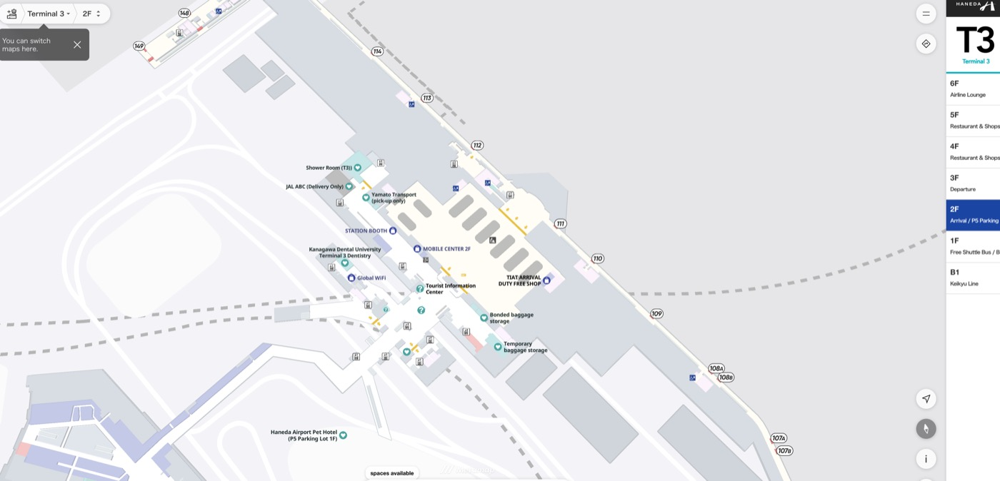
Haneda Terminal 3, 2F (your arrival floor). The Tourist Information Center, foreign-card ATMs, Air Lawson and the Keikyu train exit are all here. Follow signs toward the train exits (right side).
06:05–06:20 — Customs. With VJW, the customs QR is scanned at the e-gate and you walk straight through. Then you're in the 2F Arrivals lobby (public).
🍽️ 06:20–08:30 — Breakfast, wash up, and let everyone reset (the important bit)
This is the part that saves your day. Instead of dragging tired kids straight onto a train, settle at Haneda for a couple of hours.
- Get cash + kids' Suica first (below) so the rest is frictionless.
- Breakfast: T3 has a 24 h food area and cafes on 4F "Edo Koji" (the pretty old-Tokyo-street food zone) and 3F/2F. Many sit-down places open 06:00–07:00. Veg-safe bets: a bakery/café (pastries, coffee, eggless options — ask), or grab from Air Lawson (24 h) if nothing's open yet and sit down. There's also a Royal Host / cafe style family restaurant vibe upstairs — pancakes, toast, fruit.
- Freshen up: T3 has free shower rooms and clean restrooms — a quick wash after the red-eye does wonders for the kids. Ask at the Information Center.
- Let the kids move: the observation deck (5F) for plane-watching burns off energy before a 2-hour train.
- Rest: there are seating areas / free rest zones; if anyone can nap 30 min, let them.
- Aim to head for the Keikyu platform ~08:30, so you're on a ~09:30–10:30 Nozomi — well clear of Tokyo rush hour and unhurried.
What's OPEN when you land (~05:00) in the arrivals hall
- ✅ ATMs that take Indian cards — Japan Post Bank (24 h) and Seven Bank (opens 05:00), both 2F. Withdraw ¥20,000–30,000 now for tickets/shuttle/snacks. Info:
https://tokyo-haneda.com/en/service/facilities/bank.html
- ✅ Currency exchange — several 24 h desks.
https://tokyo-haneda.com/en/service/facilities/exchange.html
- ✅ Convenience store — Air Lawson (24 h, 2F) — water, snacks, veg onigiri (look for 梅 ume/plum or 昆布 konbu/kelp; avoid ツナ tuna, 鮭 salmon).
- ✅ Tourist Information Center (24 h, 2F) — maps, help, and Welcome Suica cards for the kids.
- ✅ Baby nurseries (24 h, 2F) — nursing booth, diaper table, hot water for formula.
https://tokyo-haneda.com/en/service/facilities/baby_nurseries.html
CLOSED right at 05:00 (but open before you leave): SIM counters (06:00–06:30), JR East Travel Center (06:45). Since you're resting at the airport until ~08:30 anyway, these are all open by the time you need them — but the wife's eSIM should still be set up before flying as the primary plan.
~08:30 — Walk to the trains (~5 min) — follow these exact signs
Once everyone's fed and refreshed, take the Keikyu Airport Line (better than the Monorail for reaching Shinkansen). From the arrivals lobby, follow the blue "Keikyu Line" signs, ~80–120 m, escalator/elevator down to the platform (B2F). Most trains go to Shinagawa (~20 min), where you cross to the JR line for the Shinkansen.
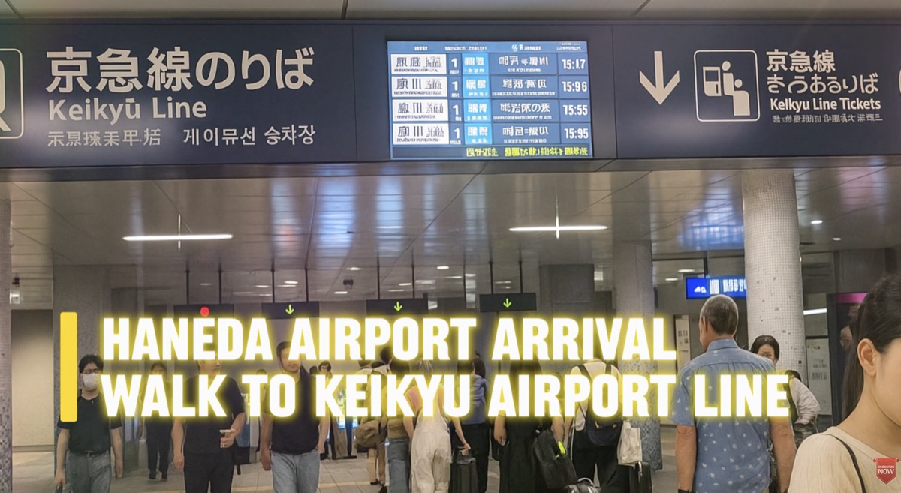
This is the sign you're heading for: 京急線 / Keikyū Line. Departure board in the middle, ticket machines to the right (きっぷうりば).
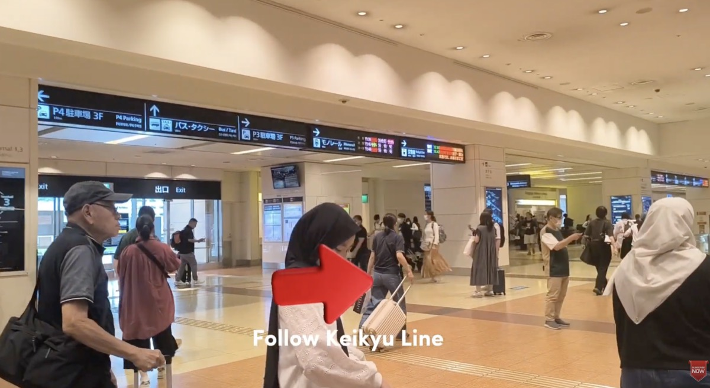
From the arrivals hall, follow "Keikyu Line" on the overhead signs (arrowed). The Monorail branches off left — you want Keikyu.
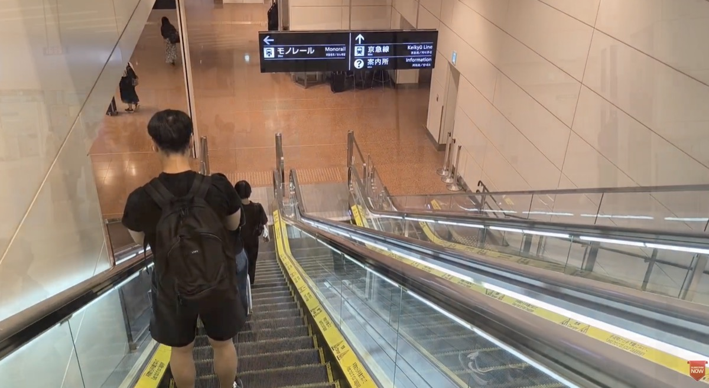
Take the escalator down — signs split here: モノレール Monorail (left) vs 京急線 Keikyū Line (right). Stay right for Keikyu.
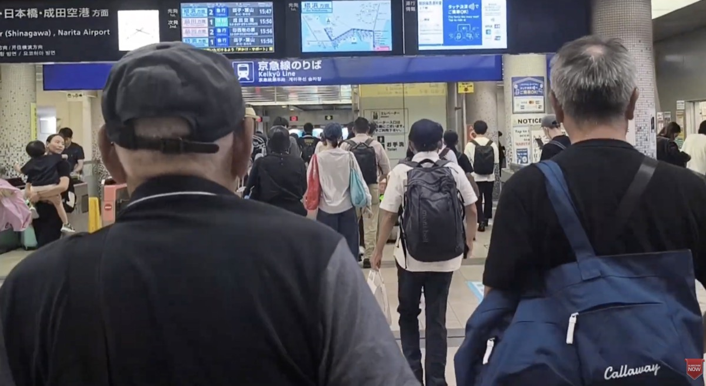
Almost there — the blue 京急線 Keikyū Line sign over the gates. Buy a ticket at the machines, or just tap your Suica.
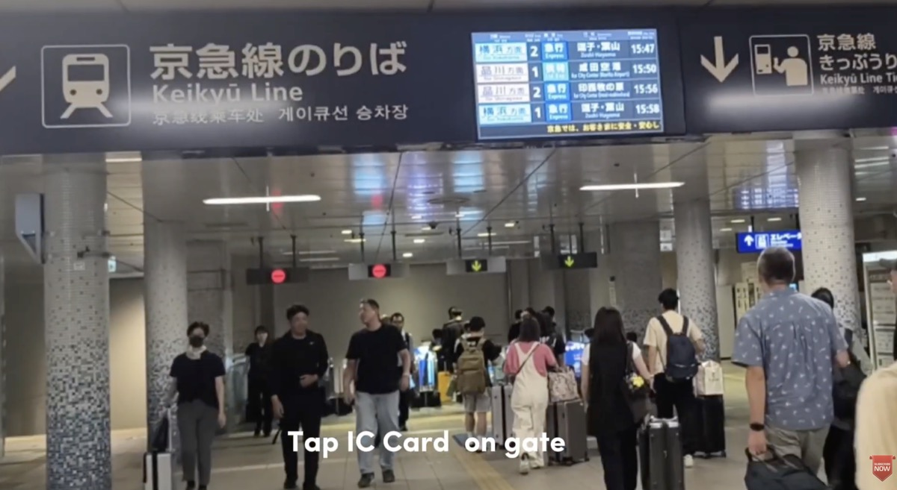
Tap your Suica/IC card on the gate reader to enter (or insert a paper ticket). Then follow signs for a Shinagawa-bound train.*
- ✅ Official train access:
https://tokyo-haneda.com/en/access/train/index.html
- ✅ Keikyu walking directions with diagrams:
https://www.haneda-tokyo-access.com/en/haneda-airport/to-stationl.html
- ✅ Haneda T3 on Google Maps:
https://maps.app.goo.gl/fb8GZKihstdSkHPaA
🎥 Watch these on the plane (they ARE your "pictures")
- ✅ Haneda Terminal 3 walking tour (2026):
https://www.youtube.com/watch?v=HbkKPCSai7s
- ✅ Haneda first-time arrival — transport/SIM/money/entry (2026):
https://www.youtube.com/watch?v=_mpfCfyH5Sg
- ✅ Using Visit Japan Web at Haneda, step by step:
https://www.youtube.com/watch?v=cijWoBljzMg
- ✅ "Do this FIRST after landing" (2026):
https://www.youtube.com/watch?v=b5LTWb8D74w
- ✅ Official Haneda T3 floor guide (see the maps):
https://tokyo-haneda.com/en/floor/terminal3/index.html
Realistic timing if you did want to rush: aircraft door → seated on Keikyu in 60–90 min. But don't. The whole point today is the relaxed 2-hour reset at Haneda first — you have all morning, and the hotel isn't ready until mid-afternoon regardless.
The SIM/JR counters that were closed at 5 a.m. are open by now
By ~08:30 the SIM counters (06:00–06:30) and JR East Travel Center (06:45) are open — handy if the wife's eSIM had any trouble, or if you'd rather buy Shinkansen tickets in person from English-speaking staff (see Part 3).
PART 3 — TRAINS: THE SHINKANSEN & GETTING AROUND
🚄 Haneda → Kyoto (arrival day, Jul 7)
Leg 1 — Keikyu: Haneda → Shinagawa, ~20 min, ~¥330/adult (kids 6–11 half; under-6 free). Buy at the machine (English button) or just tap your Suica.
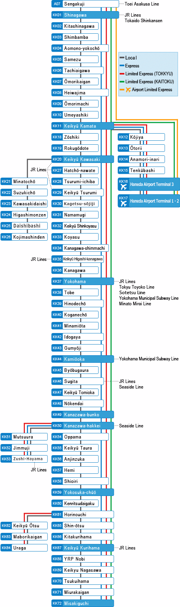
Keikyu line: board at Haneda Airport Terminal 3 (KK16) → ride to Shinagawa (KK01), top of the map — that's where you change to JR / the Tokaido Shinkansen. Any "Airport Limited Express" (orange) or the through-trains work; don't overthink it — most trains stop at Shinagawa.
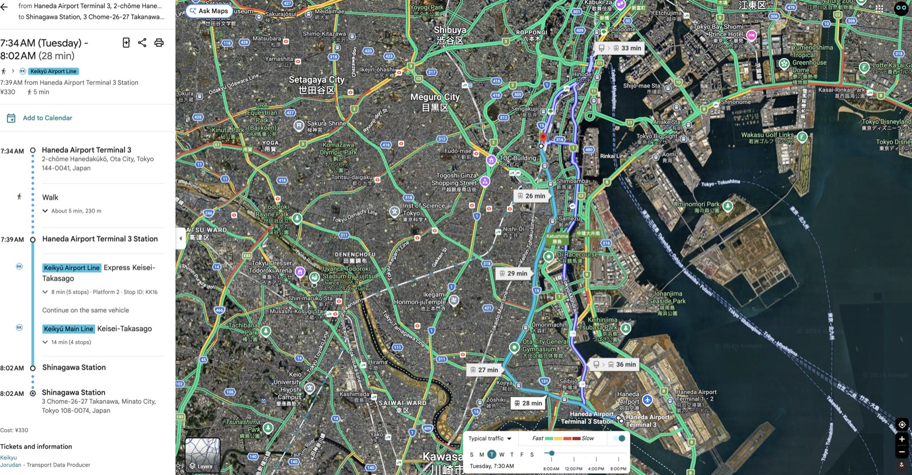
What it looks like in Google Maps: Haneda T3 → Shinagawa Station, Keikyu Airport Line, ~28 min door-to-platform including the short walk.
Leg 2 — Tokaido Shinkansen "Nozomi": Shinagawa or Tokyo Station → Kyoto, ~2h15m, a Nozomi every ~15 min. (Shinagawa is a smaller, easier station than Tokyo Station and is the first Shinkansen stop — using it saves you navigating the Tokyo Station maze on day one. Recommended.)
Fares Tokyo/Shinagawa → Kyoto (reserved):
- Adult ¥13,960 (~₹8,240) · Child 6–11 ¥6,980 (~₹4,120) · Under-6 free on a lap.
- Your family (2 adults + your two kids — confirm each child's age band): roughly ¥35,000 one way (~₹20,650). ✅ Source: https://www.seat61.com/Japan.htm
How to book the Nozomi
- ✅ Smart-EX (official, takes foreign cards, English):
https://smart-ex.jp/en/ — register your card, reserve seats, get an e-ticket you tap through with a QR/IC. Book up to 1 month ahead.
- Fallback that always works: buy at the ticket office ("Midori-no-madoguchi," green sign) or an English-enabled machine at Shinagawa/Kyoto. Staff at these big stations speak English.
- Recommendation (relaxed plan): because you land jet-lagged off a red-eye and rest at Haneda first, aim for a Nozomi around 09:30–10:30 from Shinagawa. Either pre-book on Smart-EX for ~10:00, or just buy at Shinagawa when you get there — Nozomi run every ~15 min, so a fixed reservation isn't essential and buying on the spot keeps the morning flexible. You'll reach Kyoto around 12:00–12:45 → have lunch at Kyoto Station → afternoon shuttle to the hotel.
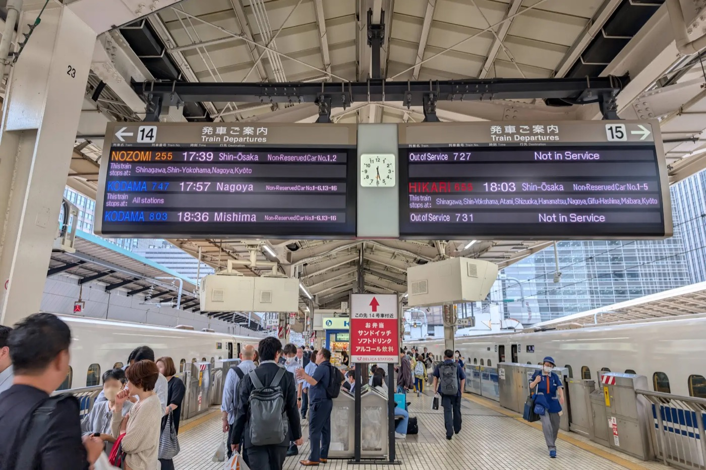
The platform departure board. Look for のぞみ NOZOMI and a destination of Shin-Ōsaka (it stops at Kyoto on the way). The board even lists which cars are Non-Reserved — but you'll have reserved seats, so just find your car number.
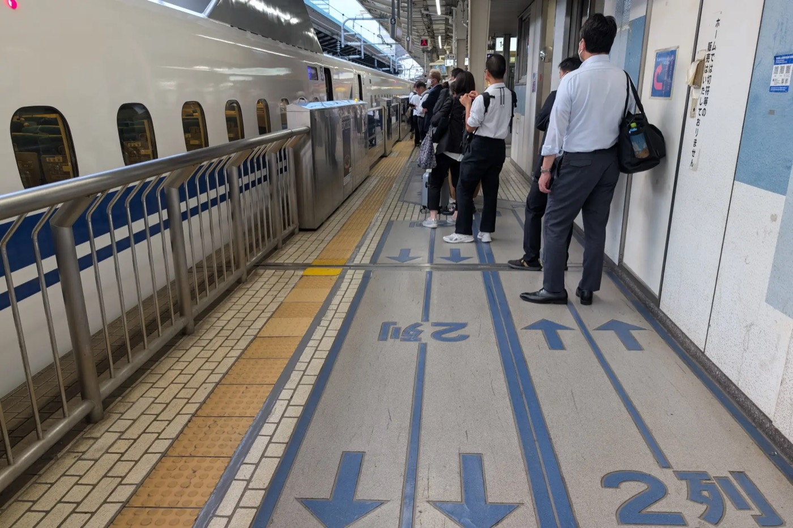
Stand on your car's number. The platform floor is painted with car numbers and door positions (here, car 2). The train stops exactly on these marks and the doors line up — line up ~10 min early so you're not sprinting with luggage.*
🧳 The big luggage rule (READ THIS)
On the Tokaido Shinkansen, a bag whose length + width + height exceeds 160 cm needs a free "oversized baggage" seat reservation — board without one and the conductor charges ¥1,000/bag.
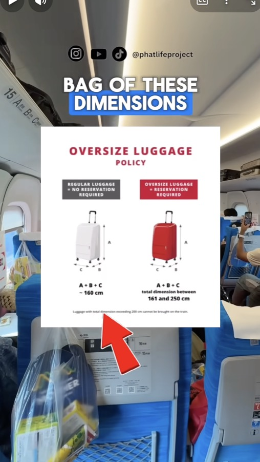
The rule in one picture: A + B + C (length + width + height). Up to ~160 cm total = no reservation needed. Between 161–250 cm = free oversized-baggage seat reservation required (or ¥1,000 penalty on board). Over 250 cm can't be brought on at all — that's what Yamato forwarding is for.
- ✅ Official rule:
https://global.jr-central.co.jp/en/info/oversized-baggage/
- Measure your 4 suitcases before you fly. Large check-in cases often just cross 160 cm.
- Your plan: you carry all bags on both Shinkansen legs (Jul 7 arrival + Jul 13 move). Reserve an "Oversized Baggage Seat" (特大荷物スペースつき座席) for each bag that's 161–250 cm — it's free when booked ahead on Smart-EX and is the last row of the car with locking space behind it. Reserve your family's seats together in that back row. Bags under 160 cm go overhead / at your feet, no reservation.
- How to book it on Smart-EX: when picking seats, choose the seat type flagged as "with oversized baggage area" (last row, usually seats in row 13/20 depending on car). If the app is confusing, the JR ticket office (みどりの窓口) at Kyoto Station will set it up — just say "oversized baggage seats, 4 people."
🗻 Mt Fuji seat side
Fuji is on the right going Tokyo→Kyoto and the left going Kyoto→Tokyo — i.e. the D/E window seats face Fuji on the Tokyo→Kyoto run (visible ~40–60 min in, clear weather only). ⚠️ When booking just tell staff "Fuji-side window seats" — they know. Don't over-optimize; it's a 10-minute view.
🚌 Kyoto Station → Westin Miyako Kyoto (free shuttle) — VERIFIED
The Westin runs a free shuttle, no reservation needed, from the Kyoto Station Hachijō (south) Exit — not the main/central exit. ✅ Confirmed from the hotel's official page:
- Departs Kyoto Station Hachijō Exit at :10 and :40 past the hour, running until ~18:40. First bus from the station: 09:40 on weekdays, 08:40 on weekends/holidays. Ride ~25–40 min.
- Departs the hotel (going back to the station) also at :10 and :40, from 09:00 (weekdays) / 08:00 (weekends/holidays).
- Your Jul 7 arrival is a Tuesday (weekday). On the relaxed plan you reach Kyoto ~12:00–12:45, eat lunch at Kyoto Station first, then catch an early-afternoon shuttle — e.g. the 13:10, 13:40 or 14:10 departure from the Hachijō Exit. You'll be at the hotel by ~14:00–14:45, near check-in time.
- Pickup at the hotel = the East Wing entrance. The bus arrives 1–2 min before departure; it can fill up, so if you just miss one, the next is ~30 min later — grab a taxi if the kids are flagging (~¥2,000–3,000, ~₹1,180–1,770).
- 🍽️ Lunch at Kyoto Station: the station is a food destination in itself — Porta and The Cube underground malls, and Isetan department store's restaurant floors (10–11F) have loads of options. Veg-safe: T's Tantan-style vegan spots, Indian/curry, pasta, and a big food hall — show the veg card. Feed everyone here so the afternoon is easy.
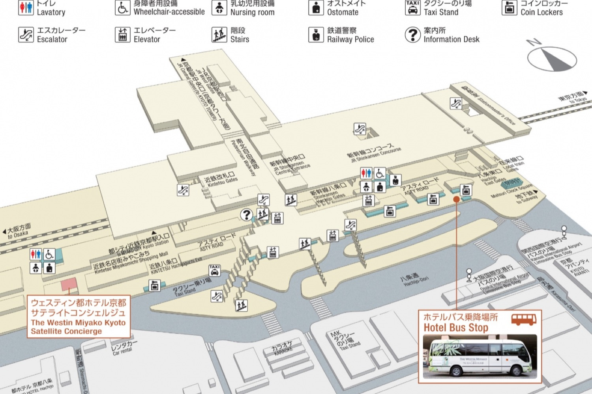
Where to catch it at Kyoto Station: head to the Hachijō (south) Exit side. The Hotel Bus Stop is boxed at right; the Westin also has a Satellite Concierge inside the station (boxed at left) if you need help or want to drop a bag.
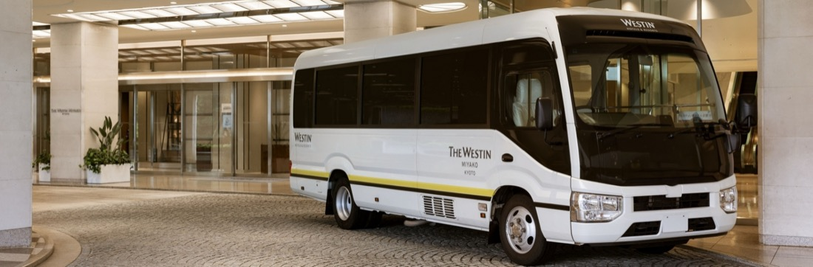
This is the bus to look for — white with a yellow stripe and "THE WESTIN MIYAKO KYOTO" on the side.
- 📵 Hotel shuttle page (opens on your phone):
https://en.miyakohotels.ne.jp/westinkyoto/access/bus/
- 📵 Hotel main page:
https://www.marriott.com/en-us/hotels/ukywi-the-westin-miyako-kyoto/overview/
- Backup: taxi Kyoto Station → Westin, ~15 min, ~¥2,000–3,000 (~₹1,180–1,770). Also: Keage subway station (Tōzai line) is a 2–3 min walk from the hotel.
🧳 Carrying all bags on the Jul 13 move (your choice)
You've decided to wheel all luggage onto the Nozomi rather than forward bags ahead — simpler, nothing to track, and you keep everything with you. The trade-off: you must reserve oversized-baggage seats (see the luggage rule above) and allow extra time moving through Kyoto Station.
- Do this when you book the Jul 13 Nozomi: reserve the back-row oversized-baggage seats for the family so your big cases have locking space. Free if booked ahead.
- At Kyoto Station: use luggage-friendly routes — lifts/escalators, not stairs. The Westin Satellite Concierge inside the station can help if you need a hand.
- (If you change your mind, Yamato "takkyubin" forwarding to the JW is ~¥2,000–3,200/bag next-day — the Westin desk arranges it. But the plan of record is carry-on-board.)
🚄 Kyoto → Tokyo (move day, Mon Jul 13)
Reverse of arrival: Westin shuttle → Kyoto Station → Nozomi → get off at Shinagawa (not Tokyo Station) → the JW Marriott sits directly above Takanawa Gateway Station, one stop north of Shinagawa.
- 📵 JW Marriott Tokyo (Takanawa Gateway City, Minato — opened Oct 2025): https://www.marriott.com/en-us/hotels/tyojw-jw-marriott-hotel-tokyo/overview/
- Why alight at Shinagawa: every Nozomi stops there, it's the stop before Tokyo Station (so you skip the Tokyo Station maze), and the JW is one short hop away. Shinagawa → JW Marriott: with all 4 bags, take a taxi (~5 min, ¥1,000–1,500) — far easier than the Yamanote line + luggage. (The one-stop Yamanote hop to Takanawa Gateway, which walk-connects to the hotel, is only worth it travelling light.)
- Bonus: Takanawa Gateway is ~20 min from Haneda and walkable/one-stop from Shinagawa — very convenient for the Fuji day and your departure.
🚉 Reading a station (survival signs)
新幹線 Shinkansen · のぞみ Nozomi (fastest) · ひかり Hikari · こだま Kodama (all-stops) · 京都 Kyoto · 東京 Tokyo · 改札 ticket gate · みどりの窓口 JR ticket office (green sign). Car numbers are painted on the platform floor — stand at your car's number.
🎫 EVERY transport leg, one by one (line · where to buy · gate · time · cost)
This is your master reference for which line, where to buy the ticket, which gate/side, how long, and what to double-check on the day. For daily trains, everyone just taps their Suica — no ticket to buy. Only the two Shinkansen legs and the reserved excursion trains (Sagano Torokko, Fuji Excursion) need a bought ticket + seat.
How to read the "confirm on the day" flags below. Platform numbers and exact minute-by-minute departures change with the timetable and can't be locked a month out without risking a wrong number in your "bullet-proof" guide. So for each leg I give you the line, the buying method, the gate/side, the journey time and cost — all stable — and mark the 2–3 live details to glance at on Google Maps or the platform board that morning. Google Maps in Japan is excellent: it gives real-time platform numbers, the exact train, and even which car to board. Set your hotel and each destination as Maps favourites before you fly.
Kyoto legs (Jul 7–13)
| Leg |
Line & how |
Ticket |
Where / which side |
Time |
Cost |
Confirm on the day |
| Haneda → Shinagawa (arrival) |
Keikyu Airport Line, any "Airport Ltd Express" (orange) or through-train |
Tap Suica, or machine (English button) |
Board at Haneda T3 (KK16); ride to Shinagawa (KK01) |
~20 min |
~¥330/adult |
Which platform at T3 — follow red Keikyu signs down from arrivals |
| Shinagawa → Kyoto (Nozomi) |
Tokaido Shinkansen NOZOMI (to Shin-Ōsaka, stops Kyoto) |
Smart-EX app (pre-book) or green-sign JR office (みどりの窓口) at Shinagawa |
Shinkansen gates are separate from JR local gates — look for blue "Shinkansen" signs; tap your Smart-EX QR/IC through the Shinkansen gate |
~2h15m |
~¥13,960/adult reserved |
Platform + car no. (on your ticket & the board); stand on your painted car number |
| Kyoto Stn → Westin (arrival) |
Free Westin shuttle (no booking) |
Free |
Hachijō (south) Exit — NOT central exit; hotel bus stop is marked, see map |
25–40 min |
Free |
The :10 / :40 departure you'll catch; if just missed, next is ~30 min |
| Hotel → Fushimi Inari (Day 2) |
Hotel taxi to JR, or subway; simplest = taxi early |
Taxi cash/IC; train = Suica |
JR Nara Line to Inari stn (2 stops from Kyoto Stn), or Keihan to Fushimi-Inari |
~15–25 min |
Taxi ~¥1,500–2,500; train ~¥150 |
Whether you taxi or train — decide by how the kids are that morning |
| Hotel → Arashiyama (Day 3) |
JR Sagano/San-in Line Kyoto Stn → Saga-Arashiyama |
Suica for the JR local; Sagano Torokko = pre-booked paper ticket |
JR local from Kyoto Stn; the Torokko Romantic Train boards at Torokko Saga stn (next to JR Saga-Arashiyama) |
JR ~20 min; Torokko ~25 min |
JR ~¥240; Torokko ~¥880/adult |
Torokko seats sell out — pre-book (Part 7); JR local is the always-works fallback |
| Hotel → Nara (Day 4) |
JR (Nara Line, rapid) or Kintetsu Kyoto → Nara |
Suica |
From Kyoto Station — Kintetsu has its own gates on the south/Hachijō side |
~45 min |
~¥720 (JR) / ~¥640 (Kintetsu) |
No booking needed; just check next departure on Maps |
| Around Kyoto (Kiyomizu, Gion, Kinkaku-ji) |
City bus / subway / taxi |
Suica on bus & subway |
Board buses at the front or rear per the sign; tap on/off |
varies |
~¥230 flat bus |
⚠️ Kyoto buses jam in peak season — prefer subway/train + short taxi |
Move day & Tokyo legs (Jul 13–18)
| Leg |
Line & how |
Ticket |
Where / which side |
Time |
Cost |
Confirm on the day |
| Westin → Kyoto Stn (Jul 13, all bags) |
Free Westin shuttle from lobby |
Free |
Hotel East Wing entrance; :10/:40 departures |
~15 min |
Free |
Take one that lands you at the station ~40 min before your Nozomi |
| Kyoto → Shinagawa (Nozomi, all bags) |
Tokaido Shinkansen NOZOMI (to Tokyo, get off Shinagawa) |
Smart-EX — reserve the oversized-baggage back row |
Kyoto Shinkansen central gates; lifts/escalators with bags, not stairs |
~2h15m |
~¥13,960/adult |
Platform + car no.; line up early with 4 bags |
| Shinagawa → JW Marriott (all bags) |
Taxi (easiest with luggage) |
Taxi — IC/card/cash |
Shinagawa Takanawa/West exit taxi rank |
~5 min |
¥1,000–1,500 |
Just take the taxi; skip the train with 4 bags |
| JW → Tokyo DisneySea (Day 9, Jul 15) |
JR Keiyō Line to Maihama, then Disney Resort Line monorail |
Suica for both |
From Shinagawa/Tokyo Stn to Maihama on the Keiyō Line (long platform, allow walking time at Tokyo Stn); monorail from Maihama |
~45–60 min |
~¥400 JR + ¥260 monorail |
Keiyō-line platform at Tokyo Stn is a 10-min walk from the main concourse — pad time |
| JW → TeamLab Planets (Day 10, Jul 16) |
JR/Yamanote → transfer to Yurikamome to Shin-Toyosu |
Suica |
Shin-Toyosu is a 1-min walk to TeamLab Planets (Toyosu) |
~35–45 min |
~¥400 |
Timed-entry ticket — book slot ahead; wade knee-deep so wear shorts |
| JW → Fuji (Day 11) |
Fuji Excursion limited express: Shinjuku → Kawaguchiko |
Pre-book reserved seat (JR East online / green-sign office) |
Departs Shinjuku; ⚠️ cars 1–3 only (train splits at Ōtsuki — rear goes to Matsumoto) |
~2 h |
~¥4,000/adult reserved |
Your car (1–3), platform at Shinjuku; weekend seats sell out — book now |
| Around Fuji lakes |
Retro sightseeing buses (Red/Green/Blue loops) |
Suica or cash |
Board at Kawaguchiko Stn bus stops |
loop |
~¥1,500 day pass |
⚠️ Check loop colour + direction before boarding — easy to ride the wrong way |
| JW → Haneda (departure, Jul 18) |
Taxi (easiest with bags) or Keikyu from Shinagawa |
Taxi, or Suica on Keikyu |
JW → Haneda direct by taxi; or Keikyu from Shinagawa/Takanawa Gateway |
~20 min |
Taxi ~¥6,000–8,000 |
Confirm AI357's exact time on your ticket; be at Haneda ~3 h before |
PART 4 — IC CARDS (Suica) & PHONES
💳 IC transit cards — the decision
Each person needs their own card (the gates track each tap). So: 2 adult cards + 2 kids' cards.
- iPhone parents → set up Mobile Suica in Apple Wallet BEFORE flying. Wallet → + → Transit Card → Suica → top up ¥10,000 with Apple Pay/your card. ✅ Guide:
https://www.japan-guide.com/e/e2359_003.html
- ⚠️ Test now: some Indian cards can't top up Mobile Suica. If yours fails, you'll top up with cash at any 7-Eleven/Lawson in Japan, or buy a physical card at Haneda instead.
- Kids (and any Android phone) → buy a physical Welcome Suica at Haneda (Tourist Info desk, 2F, open 24 h). No deposit, valid 28 days. Load ¥3,000–5,000 each.
- Note: Android Mobile Suica needs a Japanese-market phone, so don't try — just buy the physical card.
- What Suica pays for: all trains, metros, buses, konbini, vending machines, some taxis. Not the Shinkansen reserved fare (that's your Smart-EX/paper ticket).
📶 Phones — you (roaming) + wife (eSIM)
- Malhar: ✅ your corporate international roaming — nothing to buy.
- Wife: ✅ get a data-only eSIM, install before flying, activate on landing. Data-only is fine — you'll call/message over WhatsApp + LINE. No Japanese phone number needed.
- Simple & unlimited: Airalo Japan 15-day unlimited, ~US$49 (~₹4,300).
https://www.airalo.com/japan-esim
- Cheap & plenty: a 20 GB/30-day eSIM ~US$8–15 (~₹700–1,300). Compare:
https://esims.io/japan
- 20 GB easily covers 12 days of maps + messaging (don't stream video).
- Setup (iPhone): Settings → Cellular → Add eSIM → scan the provider's QR → label it "Japan" → keep your Indian SIM for calls, set the eSIM as data. Turn data on when you land.
- ⚠️ Don't rely on airport SIM counters — they open 06:00–06:30, after you've landed. Install the eSIM at home.
🧭 Staying connected if you split up
- Turn on live location in your WhatsApp family group (attach → Location → Share Live Location, 8 h) and/or Google Maps location sharing. Both parents having data is the whole point.
- Test it before you fly. Confirm both parents can see each other on the map.
- A pocket Wi-Fi is the wrong tool for this job — one device means the parent who walks away loses signal. Two data lines (your roaming + wife's eSIM) beats one hotspot. That's your primary plan; keep it.
📶 Free station / konbini Wi-Fi — BACKUP ONLY (don't rely on it)
If a data line drops, these exist as a fallback — but treat them as emergency-only:
- JR-EAST_FREE_Wi-Fi (Tokyo, Shinagawa, Takanawa Gateway + all JR East stns) · JR-WEST_FREE_Wi-Fi (Kyoto, Osaka, Shin-Osaka).
- Also: Japan_Free_Wi-Fi, Kyoto_Wi-Fi, Osaka_Free_Wi-Fi, and every 7-Eleven / Lawson / FamilyMart / Starbucks.
- ⚠️ Why it's backup only: most need a one-time email/SNS sign-up on a splash page and time out every 30–60 min (constant re-login), it's only on the concourse — NOT on the moving train, and coverage is patchy on deep platforms. Fine for a quick map check while you wait; useless for navigating on the move. Keep both data lines topped up and this stays a just-in-case.
PART 5 — EATING VEGETARIAN (the real challenge)
The hidden-fish problem
Japanese "vegetable" dishes routinely contain dashi (出汁) — fish stock from bonito/katsuobushi or sardines — plus bonito flakes sprinkled on top. It's in miso soup, most ramen/udon/soba broth, tempura dipping sauce, okonomiyaki/takoyaki batter, and many sauces. You must ask every time.
Your family's exact diet (lacto-vegetarian): No meat, fish, seafood, eggs, or dashi/bonito. Yes to dairy (cheese, milk, butter, paneer), tofu, and eggless baked goods. Make this explicit — many places assume "vegetarian" allows egg and fish stock, and some won't count dairy as an issue at all. The card below spells it out.
Show this card at every restaurant (screenshot + print it)
私はベジタリアンです。
I am a vegetarian. Please NO:
肉・魚・魚介類（No meat, fish, seafood）
卵（No EGGS）
だし・鰹節（No fish stock / bonito flakes）
大丈夫です（These are OK for me）:
乳製品：チーズ・牛乳・バター（Dairy: cheese, milk, butter）
豆腐（Tofu）
野菜だけの料理をお願いできますか？
Can you make a dish with only vegetables (plus dairy/tofu)?
ご協力ありがとうございます。 Thank you for your help.
Where you'll actually eat well
- Indian restaurants — your safety net. Plentiful in both cities, English-speaking, familiar for the kids. Google Maps → "Indian restaurant" near Higashiyama/Keage (Kyoto) and Shinagawa/Takanawa/Tamachi (Tokyo, near the JW).
- Shojin ryori (精進料理) — Buddhist temple vegan cuisine, a Kyoto specialty; ask the Westin concierge to book one.
- Vegan chains — T's Tantan (vegan ramen, inside Tokyo Station), Ain Soph (Tokyo). Search on the day.
- CoCo Ichibanya curry — has veg curry, but ⚠️ ask about fish in the roux.
https://www.ichibanya.co.jp/
- Konbini safe bets — plain salt or umeboshi/konbu onigiri (check for dashi), inarizushi (sweet tofu-rice), fruit, yogurt, bread, edamame. There are konbini/ekiben kiosks right on the Shinkansen platforms (below) — grab safe snacks before boarding so no one's hungry on the 2h15m ride.
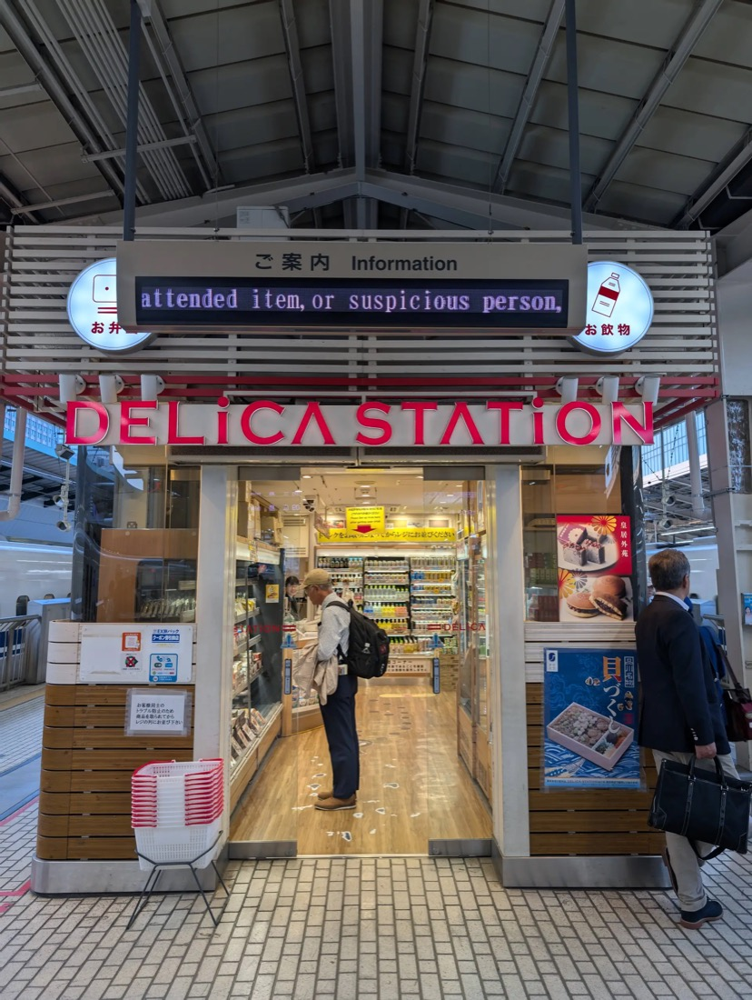
Platform kiosks like this (Delica Station) are on the Shinkansen platforms — stock up on water, fruit, bread and plain onigiri before you board.
- Find veg fast: HappyCow https://www.happycow.net or Google Maps "vegetarian restaurant."
- Hotels: both the Westin and JW do strong Western/veg breakfasts — flag "strict vegetarian, no fish stock" at check-in and let the concierge pre-brief dinners.
- Parks (USJ/DisneySea): rely on pizza/fries/pasta (check cheese) and pack konbini snacks; ask each counter "bejitarian food?".
- Avoid unless confirmed vegan: ramen, udon/soba, miso soup, tempura, okonomiyaki, takoyaki.
Food phrases
| English |
Romaji |
日本語 |
| I am vegetarian |
Watashi wa bejitarian desu |
私はベジタリアンです |
| I don't eat meat/fish |
Niku to sakana wa tabemasen |
肉と魚は食べません |
| I don't eat eggs |
Tamago wa tabemasen |
卵は食べません |
| Does this have fish stock (dashi)? |
Kore wa dashi ga haitte imasu ka? |
これはだしが入っていますか？ |
| Does this have egg? |
Tamago wa haitte imasu ka? |
卵は入っていますか？ |
| No bonito flakes please |
Katsuobushi nashi de |
鰹節なしで |
| Dairy and tofu are OK |
Nyūseihin to tōfu wa daijōbu |
乳製品と豆腐は大丈夫 |
| Vegetables only, please |
Yasai dake de onegaishimasu |
野菜だけでお願いします |
PART 6 — 🚨 EMERGENCY PAGE (print this one)
Numbers
| Who |
Number |
| Police |
110 |
| Fire / Ambulance |
119 |
| JNTO Visitor Hotline (24 h English) |
050-3816-2787 (in Japan) / +81-50-3816-2787 |
| Indian Embassy Tokyo — emergency (24 h) |
+81-80-3301-5242 (call/WhatsApp/SMS) |
| Indian Embassy Tokyo — general |
+81-3-3262-2397 (Mon–Fri 09:00–17:30) |
| The Westin Miyako Kyoto |
(write from your booking) |
| JW Marriott Tokyo |
(write from your booking) |
| Travel insurance 24 h line |
(write from your policy) |
- ✅ JNTO hotline:
https://www.japan.travel/en/plan/hotline/ · Indian Embassy: https://www.indembassy-tokyo.gov.in/
If a child gets separated
- Before every crowded place (stations, USJ, DisneySea, Fushimi Inari, temples): point at a specific meet-here spot and photograph what each kid is wearing that morning.
- Live location ON between parents.
- Teach the kids: stay put, find a uniformed staff member (station/park/shop) or a koban (police box — red light outside), show the ID card.
- Call your hotel immediately — they coordinate with police in Japanese.
Kids' ID cards (print one per child)
The two ready-to-cut cards — one for Arshi, one for Avyan, each with a validated Japanese + English side — are on the Master Sheet (right after Day 12). Print that page, cut out each child's card, fill in the phone numbers by hand, and tuck one in each kid's pocket before every crowded place.
Money & ATMs
Japan is still cash-heavy. Carry ¥10,000–20,000/day. Foreign-card ATMs that reliably work:
- ✅ 7-Bank (in every 7-Eleven, 24 h): https://www.sevenbank.co.jp/intlcard/
- ✅ Japan Post Bank (post offices + FamilyMart): https://www.jp-bank.japanpost.jp/en/ias/en_ias_index.html
- Tell your Indian bank you'll use the card in Japan Jul 7–18. Carry a backup card.
If you miss a Shinkansen (verified — do it in this order)
- BEFORE the train leaves — change it free in the Smart-EX app. If you can see you won't make it, open Smart-EX and change the reservation to a later train — this is free, any number of times, up until departure. This is always the best option and keeps your reserved seats. ✅ Smart-EX:
https://smart-ex.jp/en/
- Already missed it? Your same ticket still works — board a later same-day train in the NON-RESERVED cars at no extra charge. On the Tokaido Shinkansen the non-reserved cars are cars 1–3; just walk on and sit in any open seat (or stand if full). No new ticket, no penalty — valid for a later Nozomi/Hikari the same day, same direction. A Nozomi runs every ~15 min. ✅
https://www.seat61.com/Japan.htm
- ⚠️ The one thing you lose: your free oversized-baggage reservation dies with the missed train. The non-reserved cars have no guaranteed big-bag space — so on the Jul 13 move day with all 4 bags, protect this by using option 1 (change it before departure). If you're already boarding non-reserved with big cases, keep them at the car ends / vestibule and stay with them.
- Never try to taxi between cities (Tokyo↔Kyoto would be ¥100k+). Take the next train.
- Stranded late? Last intercity trains ~21:30–22:00; last local trains ~00:00. Fallback: taxi (GO app / station rank), or wait in a 24 h konbini and call your hotel's 24 h desk.
July weather & typhoons
Hot & humid, 30–35 °C; late rainy season + early typhoon season. For kids: water every 30–60 min, A/C breaks every 2–3 h, hats, sunscreen (pricey in Japan — bring it), ORS (Electral).
- ✅ Weather/typhoon warnings (JMA): https://www.jma.go.jp/jma/en/menu.html
- ✅ Disaster alerts app (JNTO Safety Tips): https://www.jnto.go.jp/safety-tips/eng/
- If a typhoon warning hits, trains stop — stay in the hotel (built for it) and shift the Fuji day. That's why Jul 17 Fuji is swappable with Jul 16 (the TeamLab/shopping day): go on the clearer morning. (DisneySea's dated ticket is Jul 15 and can't move.)
🌏 If there's an earthquake (Japan has them — this is normal, and buildings are built for it)
Most quakes are a few seconds of shaking and nothing more. Your modern hotels and the Shinkansen are engineered for this. Don't panic, don't run outside — most injuries come from falling objects and people rushing.
During shaking:
1. DROP, COVER, HOLD ON — get under a sturdy table/desk, cover your head, hold the leg. If no table, crouch against an interior wall away from windows and cover your head. Get the kids under with you.
2. Do NOT run outside or to a doorway during shaking — falling glass/signage outside is the real danger. Stay put until it stops.
3. If in bed, stay, and shield your head with a pillow.
4. If outdoors, move away from buildings, walls, and power lines into open space.
5. If on a train, hold a strap/rail; it will brake smoothly and stop. Wait for staff instructions — don't force doors.
After the shaking stops:
- Check everyone, then open a door (so it can't jam shut) and turn off the gas if you're near a stove.
- Don't use elevators. Wear shoes (broken glass).
- Your phone will scream first: Japan's J-Alert / Earthquake Early Warning sounds a loud alarm on every phone 5–30 sec before shaking — it's meant to. The JNTO Safety Tips app (below) gives the same alerts in English with what-to-do cards.
- Tsunami: only a concern right on the coast. DisneySea (Urayasu) is coastal — if you feel a strong/long quake there, follow staff and move to higher ground/upper floors immediately; don't wait for a warning.
- Family plan: if separated during a big one, phone lines jam — use the meeting-point rule and message over WhatsApp/LINE (data works when calls don't). Hotels are the default reunite point.
- ✅ Official English guidance & alerts (JNTO Safety Tips app): https://www.jnto.go.jp/safety-tips/eng/
- ✅ Real-time quake/tsunami info (JMA): https://www.jma.go.jp/bosai/map.html#contents=earthquake
🛂 If a passport is lost or stolen
- Report to the nearest police / koban first — you need a police report ("theft/loss certificate") for both the embassy and your insurance.
- Call the Indian Embassy Tokyo emergency line: +81-80-3301-5242 (24 h). They issue an Emergency Certificate / emergency passport for Indian nationals.
- Embassy: 2-2-11 Kudan-Minami, Chiyoda-ku, Tokyo · general (Mon–Fri): +81-3-3262-2397 ·
https://www.indembassy-tokyo.gov.in/
- You'll need: the police report, photos, other ID, and proof of Indian citizenship. → This is why you keep photos of all 4 passports + visas in the "Japan 2026" album and a paper copy — it makes replacement far faster.
- Losing a passport can delay departure — deal with it the same day you notice.
💳 If a bank card is lost or stolen
- Freeze it instantly in your bank's app (most Indian banks have a one-tap block) — don't wait to call.
- Then call your bank's 24 h international line (write it on the emergency table above before you fly) to report and, if needed, arrange an emergency replacement.
- Fall back to your second card + cash — this is exactly why you carry two cards on different networks and daily cash.
- If stolen (not just lost), also file a police report for insurance.
- Note the India-side numbers for both cards in your phone and on paper now.
Pharmacies & medical
Drugstores everywhere — Matsumoto Kiyoshi (yellow sign), Welcia, Sundrug. Use Google Translate camera on boxes. Your hotel concierge is your fastest route to a doctor; the JNTO hotline can direct you too. Bring kids' paracetamol/ibuprofen, antihistamine, ORS, and any prescriptions in original packaging with a doctor's note.
English-speaking clinics & hospitals (verified)
For anything non-life-threatening, call ahead (many need appointments) or have the hotel front desk call for you. For a real emergency, dial 119 for an ambulance. Not sure how serious? Call #7119 (nurse triage, English available).
National help lines (English):
- JNTO Visitor Hotline — 050-3816-2787 (24 h) — will direct you to the nearest English-speaking clinic.
- AMDA International Medical Information Center — 03-6233-9266 (helps you find a doctor & can interpret by phone).
- Emergency triage — #7119 · Ambulance/Fire — 119 · Police — 110.
Kyoto (near the Westin):
- Sakabe International Clinic — central Kyoto, English-speaking, general + family. ☎ 075-231-1624. http://www.sakabeclinic.com/english/
- Kyoto City Emergency (via 119) or ask the Westin concierge — they have a preferred English-friendly clinic list.
Tokyo (near the JW Marriott, Takanawa/Shinagawa):
- Shinagawa East Clinic (e-clinic) — walking distance from the JW, English-speaking. ☎ 03-5783-5521. Shinagawa Intercity Bldg. http://e-clinic.gr.jp/en/
- Tokyo Takanawa Hospital — the closest hospital, has pediatrics (for the kids). ☎ 03-3443-9191 (near Takanawadai station).
- NTT Medical Center Tokyo (Gotanda) — International Dept 03-6721-6239, pediatrics.
Kids: for the 6-year-old, ask specifically for pediatrics (小児科, shōnika) — Tokyo Takanawa Hospital and NTT Medical Center both have it.
PART 7 — 📋 BOOK NOW vs BOOK THERE
Today is Jul 1 — trip in 6 days. Ordered most-urgent first.
🔴 Book now (this week)
| Item |
Date |
Where |
Price (per adult / child) |
Notes |
| Confirm Japan visas in hand |
— |
passports |
— |
Trip-stopper if missing. Check today. |
| Confirm Westin award booking |
Jul 7–13 |
Bonvoy app |
points |
Verify confirmation # & dates. 📵 https://www.marriott.com/en-us/hotels/ukywi-the-westin-miyako-kyoto/overview/ |
| Confirm JW Marriott booking |
Jul 13–18 |
Bonvoy app |
office-covered |
📵 https://www.marriott.com/en-us/hotels/tyojw-jw-marriott-hotel-tokyo/overview/ |
| USJ tickets + Express Pass |
Jul 10 |
official/Klook |
Studio Pass ~¥8,600–10,400 / ~¥5,600–6,700; Express Pass extra & sells out |
Peak season — Express Pass worth it with kids. https://www.usj.co.jp/web/en/us 📵 · Klook https://www.klook.com/en-IN/activity/127-universal-studios-japan-osaka/ |
| Tokyo DisneySea dated tickets |
Jul 15 |
official |
Adult ~¥7,900–9,400 / child ~¥4,700–5,600 |
Dated — must pick Jul 15 (son's 7th birthday). https://www.tokyodisneyresort.jp/en/ticket/ 📵 |
| TeamLab Planets timed tickets ×4 |
Jul 16 |
official |
~¥3,800/adult, kids less |
Timed entry — pick a late-morning slot. https://planets.teamlab.art/tokyo/ 📵 |
| Shinkansen seats Jul 7 & Jul 13 |
— |
Smart-EX |
~¥35k/leg (family) |
Or buy at station. ✅ https://smart-ex.jp/en/ |
| Visit Japan Web (all 4) |
— |
official |
free |
✅ https://services.digital.go.jp/en/visit-japan-web/ |
🟡 Book in the next 2–3 days
| Item |
Date |
Where |
Notes |
| Sagano Romantic Train |
Jul 9 |
station/JR West |
Opens 1 month prior → may be tight; regular Sagano-line train is a fine fallback. Adult ¥880 / child ¥440. |
| Hozugawa river boat |
Jul 9 |
phone/walk-up |
Adult ¥4,100 / child ¥2,700. Arrive morning; https://www.hozugawakudari.jp/en |
| Fuji Excursion train (or bus) |
Jul 17 |
JR East / bus |
Train ~¥4,130/adult from Shinjuku (~2 h); bus ~¥2,000–2,500. Reserve for a weekday. |
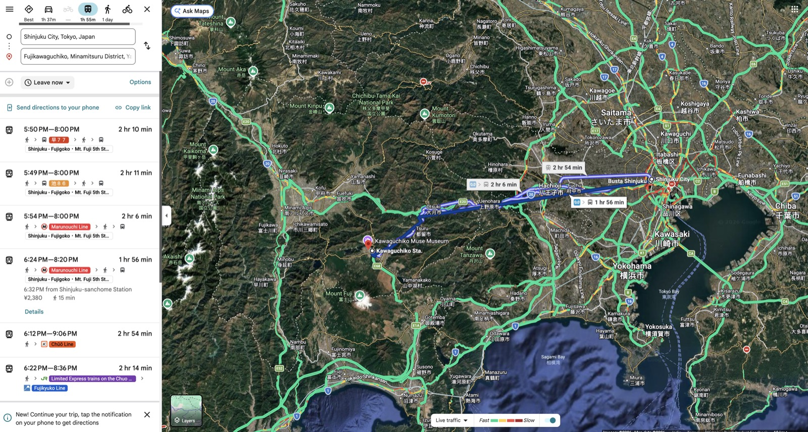
Shinjuku → Kawaguchiko in Google Maps: ~2 h whichever option you pick. Check this the morning of and only go if Fuji is actually visible (see the Fuji gotchas in Part 8).
🟢 Just show up (book there / walk-up)
- Nara (Jul 11) — deer park free, deer crackers ¥200, Todai-ji ¥600/¥300. Regular JR/Kintetsu train, no reservation.
- Arashiyama bamboo grove (Jul 9) — walk-up. Hozugawa river boat (Jul 9) — walk-up, pay cash at the dock. Osaka Castle (Jul 9 afternoon) — walk-up, cash.
- IC cards for kids — Welcome Suica at Haneda on arrival.
- Daily city transit — just tap Suica.
PART 8 — 🧠 HARD-WON GOTCHAS (the stuff only bad experiences teach)
These are the "I wish someone had told me" traps — mined from travellers who narrated exactly how their day got wrecked and how to avoid it. Skim this the night before you fly, then again the morning of each big day. TRAP → FIX format.
💳 Money, cards & connectivity
- Your Indian card gets randomly declined at a ticket machine, konbini, or hotel — even after you told the bank. It's not always your fault; one network works where another doesn't. → Carry 2+ cards on different networks (Visa and Mastercard) plus cash. Never depend on one card.
- Mobile Suica top-up fails with a foreign Visa. Apple Pay Suica usually works; if a top-up is refused, → try a Mastercard, or just top up with cash at any 7-Eleven/Lawson or the green ticket machine. Test your card tonight before you fly.
- You tap your Suica at a Shinkansen gate and it slams shut. IC cards do not open bullet-train gates. → Shinkansen always needs its own ticket (Smart-EX QR / paper). Suica is for local trains, metro, buses, konbini only.
- Your IC balance hits zero while you're inside the gates and you're trapped. → Use the fare-adjustment machine (精算機 seisan-ki, near the exit gates) — insert card, pay the difference in cash, walk out. Don't queue at the staff window.
- Don't over-load your Suica. Cap is ¥20,000, and refunding leftover balance means a queue + a ¥220 fee at the airport. → Top up ¥1,000–2,000 at a time. Near trip-end, run it down or spend it at a konbini.
- The coin avalanche. By day 3 your wallet is a kilo of ¥500/¥100/¥10 coins, and the airport won't exchange coins. → Pay with coins at konbini/ticket machines, or dump them into your Suica before flying home.
- ATM at night = maybe closed / limited. → 7-Eleven (7-Bank) ATMs are 24 h and the most foreign-card-friendly (¥100,000/txn). They spit out ¥10,000 notes — break one at a konbini so you have small cash for cash-only spots.
- eSIM shows bars but no data. 9 times out of 10 the culprit is Data Roaming is OFF on the Japan eSIM line. → Settings → Cellular → [Japan eSIM] → Data Roaming ON, and turn the Indian SIM's data OFF so it doesn't hijack.
- Don't activate the eSIM too early — some start their validity clock on activation, not on landing, and airport Wi-Fi can block the profile download. → Install the profile at home on Wi-Fi; activate only after wheels-down at Haneda.
🚄 Trains, stations & the Shinkansen
- The "two tickets" trap. A Shinkansen fare = base fare + express surcharge. Buy only a cheap base-fare ticket at a local machine and you'll be stopped at the Shinkansen transfer gate. → Use Smart-EX or ask for a "Shinkansen ticket to Kyoto" at the green-sign office — not just "a ticket."
- Oversized-bag seat, revisited. If a case is >160 cm you need the free oversized slot (Part 3) — and if you miss your train, that oversized reservation dies with it. → Arrive early; if you do miss it, expect to stand/hunt space in a non-reserved car.
- Wrong car = evicted or sprinting. Reserved and non-reserved cars are fixed; sit in the wrong one and the conductor moves you. Platforms have painted car-number zones and the train stops exactly there with a <1-min dwell. → Check your car number, line up on that painted number ~10 min early. Don't gamble on finding your seat after boarding.
- Rush hour (07:30–09:00) with 4 people + luggage + a 6-year-old is genuinely miserable and blocks locals. → Travel outside that window with bags, or take a taxi. Your Jul 7 arrival and the midday Jul 13 move both dodge this — keep it that way. On Jul 13 you're carrying all bags, so the midday departure matters even more.
- Tokyo Station and Shinjuku will swallow you. Shinjuku has 200+ exits; the wrong one is a 20-min detour. This is exactly why the guide routes you through Shinagawa, not Tokyo Station, on both Shinkansen legs. → For the Fuji day from Shinjuku, note your exact exit name before you tap out, and pad 20 min.
- Fuji Excursion train SPLITS at Ōtsuki. Front cars (1–3) go to Kawaguchiko / Mt Fuji; rear cars go to Matsumoto — sit in the wrong car and you end up in the wrong prefecture. → Reserve cars 1–3, and confirm the car destination before boarding. Kawaguchiko-bound reserved seats sell out on weekends — book ahead for Jul 17.
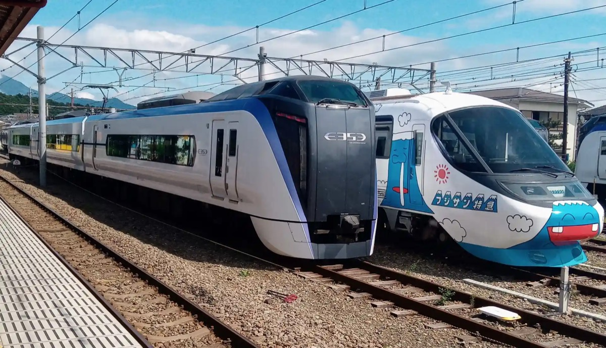
The Fuji Excursion limited express (the sleek silver/blue E353 on the left) runs direct Shinjuku → Kawaguchiko. Reserve seats in cars 1–3 so you don't get carried off toward Matsumoto when it splits at Ōtsuki.
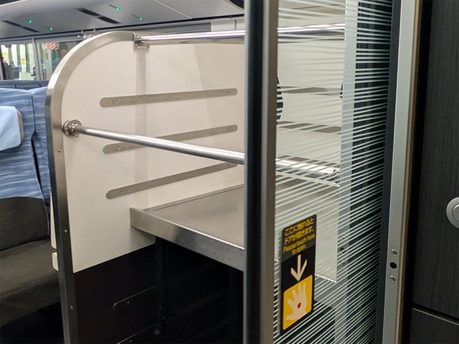
There's a luggage shelf at the car ends — but you'll be travelling light on a day trip, so just keep a daypack. Book seats early; the Kawaguchiko section is small.
- Sagano Romantic Train (Jul 9) sells out a month ahead and can't be counted on walk-up in peak July. → Have the regular JR Sagano-line train as your no-stress fallback (still scenic); if you snag Romantic Train seats, book the Hozugawa boat one-way to pair with it.
- Station coin lockers are all gone by ~09:00 at big stations, and bulging soft cases don't fit the big ones. → On day-trips travel light (daypack only). On the Jul 13 move you carry bags straight onto the Nozomi in your reserved oversized-baggage row, so you never need a locker.
🎢 Universal Studios Japan (Jul 10)
- Super Nintendo World needs a timed-entry ticket on top of your park ticket — show up mid-morning and it's gone for the day. → Either buy an Express Pass tier that includes Nintendo timed-entry (check the tier — the cheaper ones don't), or arrive at the gate by 07:00–07:30 and rope-drop straight to Nintendo World before the timed-entry system switches on. Donkey Kong Country is inside the same area — same rule.
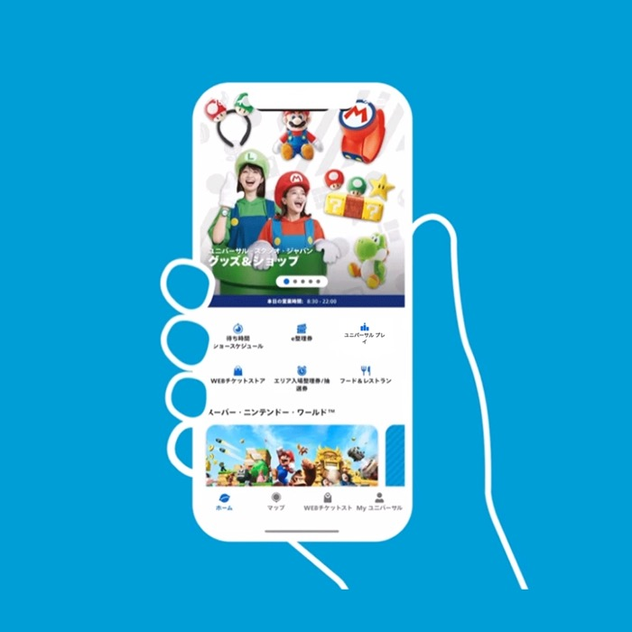
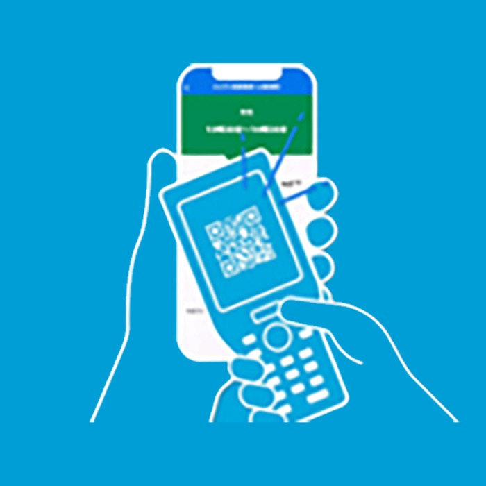
In the official USJ app: open Super Nintendo World → request an Area Timed Entry Ticket for your slot (left), then scan the QR at the entrance when your time comes (right). Set the app up with payment loaded before you arrive — from USJ's official timed-entry page.
- You can't buy tickets at the gate. Studio Pass + Express Pass are online-only and Express sells out for peak dates. → Buy now (official site or Klook); screenshot the QR e-tickets — scanners glitch.
- The USJ app is mandatory and won't set up on-site. → Install it, make the account, and load payment before you arrive; it's how you grab Nintendo timed-entry if you don't have Express.
- Pockets must be empty for the big rides (Flying Dinosaur has a mandatory mid-queue locker; strict) — people get ejected after a 50-min wait. → Empty pockets before queueing; use the test seat at the entrance for your 6-year-old.
- Height limits surprise families: ~102 cm for the Nintendo rides, 117 cm for the big coasters. → Measure your 6-year-old at home so there are no tears at the front of the line. Crew wristbands you on first check — no re-measuring after.
- "There was nothing veg." Inside USJ, veg is thin — yakisoba, margherita pizza, Butterbeer. → Mobile-order the veg options early via the app (11:30 slots vanish by 10:00), and plan a proper veg dinner outside the park in Osaka.
- July heat + a tired 6-year-old = meltdown. → Refillable water, frequent A/C queue breaks (Minion, Harry Potter rides are indoors), stroller rental at the entrance.
🌊 Tokyo DisneySea (Jul 15 · son's 7th birthday)
- Say it's his birthday. At the entrance or any cast member, mention it's his birthday — free "Happy Birthday" badge with his name; cast + characters wish him all day. For a birthday dessert, pre-book a table-service restaurant (Ristorante di Canaletto / Magellan's) and ask when reserving.
- Fantasy Springs (the new Frozen/Rapunzel/Peter Pan land) is the choke point. You can now walk into the land free, but the rides have brutal standby or need paid Disney Premier Access (DPA) — and Frozen DPA sells out by ~09:30–10:00. → The moment you scan into the park (not before — the app won't let you), open the Tokyo Disney app and buy Fantasy Springs / Frozen DPA first. Or rope-drop: be in line before ~08:50 and standby drops from ~160 min to ~45.
- Three overlapping skip systems confuse everyone: free Standby Pass (required to even join some queues when busy), free 40th-anniversary passes, and paid DPA. → On arrival, open the app and check what each headliner requires that day — the rules flex with crowds. You can only hold one DPA at a time (use it before buying the next); stagger purchases across both parents' phones.
- DisneySea tickets are date-locked to Jul 15 and are online-only, no gate sales, and peak dates sell out. → Confirm you're holding a Jul 15-dated ticket; screenshot it.
- The app murders your battery (GPS + constant refresh) and you need it for DPA, wait times, and mobile food orders. → Carry a 10,000 mAh power bank; charging points in-park are scarce.
- If you leave and want to re-enter, you must scan your ticket at the exit (no hand stamps anymore). → Keep the ticket on your phone; scan out or re-entry gets messy.
- Veg inside DisneySea: the themed restaurants (e.g. Arendelle) skew meat; kids reject it. → Casbah Food Court has curry-rice, plus pizza and pizza-style options; mobile-order before 11:00 or slots vanish; pack snacks.
- DisneySea is NOT central Tokyo — it's in Urayasu, Chiba: Maihama Station → Disney Resort Line monorail. → Budget 60–90 min door-to-door from the JW; leave early for rope-drop.
- DisneyLand vs DisneySea for a 7-year-old: if you'd rather the classic birthday (castle, parade, Mickey up close, more character-forward), DisneyLand is the pick. DisneySea (planned here) leans slightly older but its new Fantasy Springs is genuinely magical for a 7-year-old. Either works — just make the dated ticket match the park you choose.
⛩️ Kyoto, Arashiyama & Nara
- Fushimi Inari, Kiyomizu-dera and the Arashiyama bamboo grove are unbearable 10:00–15:00 in July — packed shoulder-to-shoulder in brutal humidity. The only fix travellers agree on: → arrive by ~07:00–08:00 or come at dusk. The bamboo grove especially is tiny (~5 min walk) — go early or it's a crowd-crush, not a photo.
- Kyoto city buses are a tourist trap — slow, mobbed, luggage-hostile (some now restrict big bags). → Prefer the subway/train + short taxi over the tourist-route buses (100/101/205). For Fushimi Inari and Arashiyama, take the train, not the bus.
- Kyoto temples close early — many last-entry ~16:00–16:30, gates ~17:00 — and people get locked out after a slow morning. Many are cash-only for entry/goshuin. → Front-load temples in the morning; carry ¥ coins/notes.
- Gion geisha district: photographing in the private alleys is banned, with fines (~¥10,000), and chasing/photographing maiko is prohibited. → Stay on the main streets, don't photograph people without consent, keep the kids from darting into private lanes.
- Arashiyama Monkey Park is a real 20–30 min uphill hike — not stroller-friendly. → Dropped from the Jul 9 plan on purpose (too much of a climb with a 6-year-old, and the day is now bamboo + river boat + Osaka). The bamboo grove + riverfront + boat are the easy wins.
- Nara deer are wild and get aggressive around food — they head-butt, bite, and chase, especially if a child is holding crackers, and it's worst when they're hungry before feeding. → Hide the crackers until you're ready, feed quickly, then show open empty hands (deer back off). Consider feeding after ~13:00 when they're calmer, or just watch. Don't let the 6-year-old hold a stack of crackers in the open.
🗻 Mt Fuji / Kawaguchiko (Jul 17, swappable to a clearer day)
- July is the worst season for actually seeing Fuji — often hazy or cloud-socked even when it isn't raining; people burn a whole day and see nothing. → Check a live Fuji webcam + the forecast the morning of (Windy app; "is Fuji visible" webcams). Go on the clearest morning in your Tokyo window — this is exactly why Jul 17 is swappable. Go early (06:00–09:00) before haze builds; if it's socked in, bail and do something indoors.
- Chureito Pagoda (the classic Fuji-with-pagoda shot) is a ~400-step climb in July heat — tough with a 6-year-old. → Know that before you commit the family to it.
- Kawaguchiko sightseeing buses (Red/Green/Blue lines) look alike and people board the wrong loop. → Check the line colour and direction on the signboard before boarding; Google Maps transit helps.
- The viral "Lawson + Fuji" photo spot is barriered off now (they put up a screen after crowd chaos) — don't build the day around it. → Skip it; better Fuji views are around the lake.
🙇 Etiquette (so you don't get scolded)
- There are almost no public bins — you carry your rubbish until you find a konbini/station bin. Eating while walking is frowned on. → Keep a small bag in your daypack; eat standing by the stall, then move on.
- Do not tip — it confuses or offends. Service is included. → A "gochisōsama deshita" on the way out is the thank-you.
- Pay onto the little tray, not hand-to-hand. Trains are near-silent — no phone calls, phones on silent. → Text/WhatsApp instead; take calls between cars on the Shinkansen.
- Chopstick taboos read as death rituals: never stick them upright in rice, never pass food chopstick-to-chopstick. → Rest them on the holder or across the bowl.
- The Westin has an onsen — the rules are strict: wash thoroughly seated at the shower station BEFORE entering the bath, no swimwear, tie long hair up, and tattoos are often refused (if anyone in the party has one, check with the hotel first). → Brief the kids beforehand so there's no surprise.
- Escalator side flips by city: stand left in Tokyo, right in Osaka/Kyoto. → Watch what locals do and match; don't block the walking side.
- Shoes off in temples, ryokan, some restaurants — but not barefoot. → Wear/carry socks; and never wear the separate toilet slippers back into the main room.
🥗 Vegetarian survival — the hard cases
- Dashi (fish stock) is hidden in things that look plainly vegetable — miso soup, "veg" tempura sauce, many tofu snacks, even some rice items — and Japanese labels don't have to list it (it's treated as flavouring, not an allergen). → Don't trust a Google-Translate label alone for "plant-based." Ask, or stick to your known-safe list. Assume soba/udon/ramen broth is fish unless a shop is explicitly vegan.
- Konbini labels will fool you — onigiri fillings and sandwiches hide fish/ham; even konbu/plum onigiri can carry bonito. → Safest konbini bets: plain salt onigiri, fruit, yogurt, bread, edamame. When unsure, skip it.
- "Vegetarian" means different things to staff — fish, egg, dashi may all count as "vegetable" to them, and ham is sometimes not considered "meat." → Show the strict-vegetarian card (Part 5) and specifically ask "dashi wa haitte imasu ka?" (is there fish stock?). Don't assume.
- Veg restaurants are small and hard to find — tucked in station basements, upper floors, sometimes with a near-identical omnivore restaurant next door; people waste 30 min lost or walk into the wrong one. → Pin the exact spot in Google Maps and screenshot the storefront photo; budget locate-time. Indian restaurants near the JW (Shinagawa/Takanawa/Tamachi) and CoCo Ichibanya veg curry are your reliable fallbacks where the whole family eats without drama.
- Mixed-diet family friction: dedicated veg spots may bore a non-veg eater, and omnivore spots offer vegetarians almost nothing. → Default group dinners to Indian restaurants or a broad menu where everyone's covered; don't leave dinner to chance near the hotel at 21:00.
- Kids' safe foods are limited. → Carry backup snacks from home (bars, nuts); konbini fruit, edamame, plain rice, and Indian restaurants cover the 6-year-old.
PART 9 — 📅 DAY BY DAY
📄 EACH DAY IS SELF-CONTAINED — print just that day. Everything you need for a day lives on that day's pages: the transport (which line, where to buy, how long, how much), the named veg restaurant picks with photos, the day's shopping picks with map links, and the warnings — all inline in the timeline. You never have to flip to another section mid-street. Print the 3–4 pages for the day + the one Master Sheet (right after Day 12) and that's your whole kit for the day. The big reference sections at the back (Parts 3, 5, 10, 11) are for planning at home — leave them behind.
How a day reads: it starts on a deep-teal divider page that lists what to carry today, then runs as a timeline top-to-bottom — time down the left, each stop (breakfast → train → sight → lunch → …) a dot on the line.
Reading the dots & chips: each stop's node on the time-rail tells you the kind of stop by its shape — a solid circle = a sight/activity, a ringed circle with a fork = a meal, a filled square = a train/move. Inside a move stop, the little chips tell you at a glance: TAP SUICA (no ticket to buy) or BUY (needs a ticket), plus the line, journey time and cost. Inside a meal stop, the ① ② ③ picks are named restaurants — ◉ VEG vegan/veg, ⚑ IND Indian, ✓ SAFE konbini/quick — each with a 📍 map link to pin the night before. A hollow dashed circle marked OPTIONAL is skippable; its "↳ skip →" box says exactly where to jump next.
Golden rules baked into every day: hard things early (heat + crowds build by 10:00), long A/C lunch break in the middle, early dinner, meeting-point + outfit-photo before any crowded place. Swap freely — nothing here is load-bearing except the dated tickets (USJ Jul 10, DisneySea Jul 15) and the hotel change (Jul 13).
Day 1 · Tuesday
July 7
Arrive Haneda → Kyoto
Sleep: Westin Miyako Kyoto
Carry today: all 4 passports · Smart-EX QR (or buy at Shinagawa) · cash for ATM pull · phones charged · Master Sheet
Day 1 — Tue Jul 7 · Arrival & settle in
Headline: Land AI356 ~04:55 → rest & breakfast at Haneda → mid-morning Shinkansen → lunch at Kyoto Station → hotel by mid-afternoon → rest, gentle evening. (Full minute-by-minute is in Part 2; the train details are in Part 3.)
04:55
🛬 Land Haneda (AI356), Terminal 3
Immigration + bags + customs, unhurried — budget 60–90 min with the family. Aim to be through into the arrivals hall by ~06:15–06:45. (Full walkthrough: Part 2.)
06:30
🍳 Airport reset + breakfast at T3
Wash up, then eat — the main hall / train-line level has your picks.
- VEGAGRO Fruit Parlor — fruit/parfait, near the train lines. 📍 Haneda T3
- VEGHonolulu Coffee / "Honolu" Premier — pancakes, coffee, in the main hall.
- SAFE7-Eleven — veg onigiri (梅 ume / 昆布 konbu; avoid ツナ tuna, 鮭 salmon), fruit, bread if kids won't wait.
07:30
🎫 Kids' Suica + cash + top-ups
Buy Welcome Suica for the kids, pull ¥40–50k from a 7-Bank ATM, load IC cards. Test your card tops up before you rely on it. (Part 4.)
08:30
🚆 Leg 1 — Keikyu: Haneda T3 → Shinagawa
From arrivals, follow the
red Keikyu signs down to the trains. Board at
Haneda Airport T3 (KK16), ride to
Shinagawa (KK01) — any orange "Airport Ltd Express" or through-train; almost all stop at Shinagawa. Everyone
taps their Suica through the gate.
🟩 TAP SUICAKeikyu Airport Line~20 min~¥330/adult
09:15
🚄 Leg 2 — Nozomi: Shinagawa → Kyoto (~10:00 train)
At Shinagawa, follow blue
Shinkansen signs to the
separate Shinkansen gates (not the JR-local gates) — tap your Smart-EX QR/IC through. The
~10:00 Nozomi is your anchor (changeable free on Smart-EX; a Nozomi leaves every ~15 min so pull it earlier/later on the day).
Stand on your painted car number ~10 min early; reserved seats. Kyoto ~12:10.
🟥 BUY (Smart-EX)Tokaido Shinkansen NOZOMI~2h15m~¥13,960/adult · kids 6–11 half
Book:
smart-ex.jp/en · fallback = green-sign
JR office (みどりの窓口) at Shinagawa, staff speak English.
12:15
🍽️ Lunch right at Kyoto Station (your HappyCow picks)
Eat before the shuttle — the station is a food destination. Show the veg card (on your Master Sheet).
- VEGKyoto Soba Morihei — vegan noodles. 📍 Maps: "Kyoto Soba Morihei"
- VEGSushi no Musashi — has vegan sushi options (ask). 📍 Kyoto Station
- VEGRamen Iroha / Kyotofu Fujina — check broth is dashi-free; tofu specialities. 📍 Kyoto Station
- SAFEBiople (Porta, north side, underground) — health-food shop, grab-and-go snacks · vegeteria juices/smoothies · Gong Cha (The Cube) drinks only. 📍 Porta / The Cube
13:30
🚌 Westin free shuttle → hotel + check in
Go to the
Hachijō (south) Exit — NOT the central exit. The hotel bus stop is signed (white bus, yellow stripe, "THE WESTIN MIYAKO KYOTO"). It leaves at
:10 and :40 past the hour; if you just miss one, next is ~30 min. Then
unpack, shower, nap — you've been up all night, schedule nothing demanding.
Free shuttle · no booking25–40 minBackup: taxi ~¥2,000–3,000
Shuttle times:
miyakohotels.ne.jp 16:30 · if awake
Gentle add🌳 Higashiyama easy evening — pick ONE, all next to the hotel
You landed at dawn, so keep it flat, close and low-commitment — but the Westin sits right among some of Kyoto's calmest sights, so you don't have to waste the whole afternoon in the room. All of these are a short flat walk or one taxi hop; do
one, then dinner.
- SEENanzen-ji temple + brick aqueduct — a serene, free temple complex with the photogenic Meiji-era Suirokaku aqueduct; ~10-min walk / 3-min taxi from the Westin. Grounds are open and free to wander even late afternoon. 📍 Maps: "Nanzen-ji"
- SEEHeian Shrine giant torii + garden — huge vermilion torii gate, big open shrine plaza, easy for tired kids; ~5-min taxi. 📍 Maps: "Heian Shrine"
- SEEPhilosopher's Path (south end) — flat canal-side tree walk starting near Nanzen-ji; stroll as little as you like and turn back. 📍 Maps: "Philosopher's Path"
Jet-lag rule: daylight + a gentle walk now helps everyone sleep tonight — but the second anyone melts, bail to dinner. Nothing here needs tickets or timing.
Everyone crashed? Skip it entirely — go straight to an early dinner and bed. Fushimi Inari at dawn tomorrow matters more than tonight.
18:30
🍽️ Early veg dinner near the Westin → bed early
Keep it easy — these are all a short walk from the hotel (your
near-Westin picks, reused on quiet Kyoto nights).
- VEGJunsei — 8-min walk NE from hotel; tofu/yudōfu, garden setting. 📍 Maps: "Junsei Kyoto"
- VEGOshokuji-dokoro Asuka — 7-min walk W; homey set meals, show the veg card. 📍 Maps: "Asuka Kyoto Higashiyama"
- VEGOkutan Nanzen-ji — 13-min / 1km walk (just past Junsei); famous yudōfu, confirm kombu-only broth. · Beer Komachi (900m W, near Higashiyama Stn) for a casual bite.
Set alarms: Day 2 wants you at Fushimi Inari by ~07:30.
(First night: too tired? In-hotel dining is the zero-effort fallback — flag "strict lacto-veg, no dashi.")
Day 2 · Wednesday
July 8
Kyoto — Fushimi Inari & Higashiyama
Sleep: Westin Miyako Kyoto
Carry today: Suica ×4 · ~¥15,000 cash (temples are cash-only) · veg card · hats + water + sunscreen · Master Sheet
Day 2 — Wed Jul 8 · Classic Kyoto (go early!)
Headline: The two most crowded, most beautiful sights — done at dawn before the heat and buses. Your hotel is in Higashiyama, so the afternoon is a short hop.
07:00
🍳 Early breakfast at the Westin
Eat fast — the whole day depends on beating the crowds and heat to Fushimi Inari.
07:30
🚆 To Fushimi Inari (go early!)
Simplest with sleepy kids = a
taxi from the hotel. By train: JR
Nara Line from Kyoto Station to
Inari (2 stops, the shrine is right outside), or Keihan to
Fushimi-Inari. Aim to be walking by ~07:30–08:00 while it's near-empty.
⚠️ Take the train, not the tourist buses — buses are slow and mobbed here.
🟩 TAP SUICAJR Nara Line / Keihan~15–25 mintrain ~¥150 · taxi ~¥1,500–2,500
08:00
⛩️ Fushimi Inari — the red torii tunnels
Magical and quiet at this hour; by 10:00 it's a crush. Walk up as far as the kids are happy — the first 30–40 min is the best bit; the full summit loop is 2–3 h, don't force it. Free entry.
 Fushimi InariThe endless tunnels of vermilion torii gates up the hillside — this is that place. (Photo: Wikimedia Commons)
Fushimi InariThe endless tunnels of vermilion torii gates up the hillside — this is that place. (Photo: Wikimedia Commons)
10:15
🚆 To Kiyomizu-dera (Higashiyama)
Back toward your hotel's district. Keihan to
Kiyomizu-Gojō then a walk uphill, or a short taxi (easiest with the 6-year-old in the heat).
🟩 TAP SUICAKeihan + walk, or taxi~20–30 mintaxi ~¥1,500
10:45
🏯 Kiyomizu-dera + Sannenzaka / Ninenzaka lanes
Grand hillside temple with the wooden stage, then the old souvenir/matcha-ice-cream lanes. ⚠️ Cash entry ~¥400–500 (adult) / ~¥200 (child).
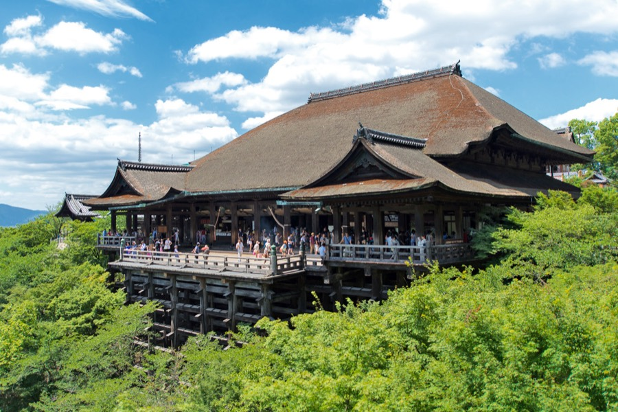
Kiyomizu-deraThe big temple on tall wooden stilts jutting over the hillside — you walk out onto that stage. (Photo: Wikimedia Commons)
11:45
📸 Yasaka Pagoda photo — the exact spot
This is
the classic Kyoto shot: the five-storey
Yasaka Pagoda (八坂の塔 / Hōkan-ji temple) framed by the old sloping street. Here's exactly where to stand — the Japanese names are confusing, so follow this:
- STAND HEREOn Yasaka-dōri (八坂通), the sloping stone street — walk down the hill on Yasaka-dōri with the pagoda in front of you. The postcard angle is from the upper (east) end looking down/west, roughly outside the "Rakushо̄ / Starbucks-area" stretch. Point the camera down the slope so the pagoda towers over the street. 📍 Maps: "Yasaka Pagoda" (Hokan-ji), stand on Yasaka-dori just uphill of it
- TIPGet there early — by late morning this one narrow street fills up. You'll pass it naturally walking Kiyomizu → Ninenzaka → Sannenzaka → down toward Gion.
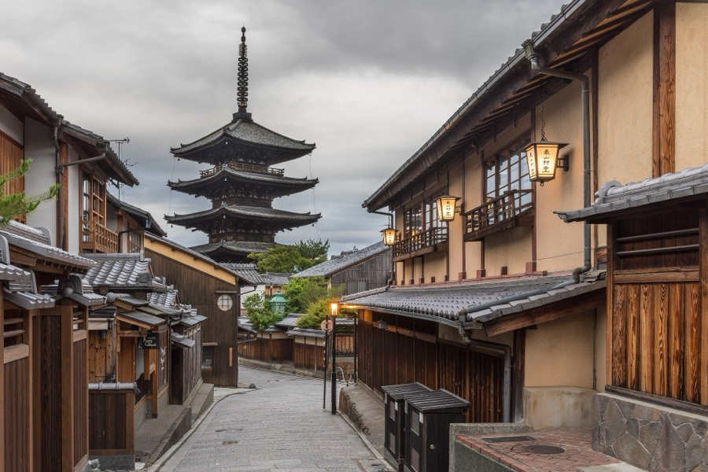
Yasaka PagodaShot from Yasaka-dōri looking down the slope — this is the exact street & angle. (Photo: Wikimedia Commons) 12:30
🍽️ Lunch near Yasaka / Gion-Shijō (your HappyCow picks)
You come down off Kiyomizu → Ninenzaka → Yasaka into the Gion-Shijō area — eat there.
- VEGUno Yukiko Soy-Milk Ramen — fully vegan ramen (S+E of Gion-Shijō Stn). 📍 Maps: "Uno Yukiko soy milk ramen Kyoto"
- VEGCrunch Salad — salads/bowls, just S of Gion-Shijō Stn. · Bali Bali Indonesia (3F, E+N of stn) — Nasi Lengko / tempeh, veg-friendly.
- SAFEOhagi no Tanbaya — dango / mochi / ohagi bakery (next to Bali Bali); guaranteed kid-win. 📍 Maps: "Ohagi no Tanbaya Gion"
16:00
🏮 Gion stroll (old teahouse district)
⚠️ No photos in the private alleys (fines ~¥10,000). Stay on main streets; don't chase geisha/maiko.
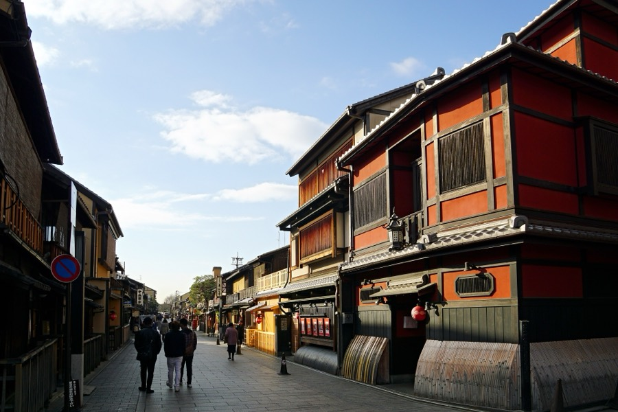
GionPreserved wooden teahouse lanes (Hanamikoji) — the historic geisha district; atmospheric at dusk. (Photo: Wikimedia Commons)
Optional
Buy🛍️ Salamanca Vintage (Kawaramachi)
Curated vintage / second-hand — your saved pick, "best prices for Chanel bags." Quick browse after Gion; Shijō & Sanjō branches.
Keep Kyoto buys light — you carry all bags to Tokyo Jul 13.
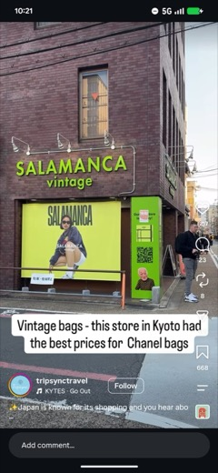
Salamanca VintageIG @salvntg_kyoto · 📍 Maps: "Salamanca Vintage Kyoto"Not shopping? Head straight to an early dinner.
18:00
🍽️ Dinner in Kawaramachi / Pontocho (your HappyCow picks)
You're already down at Shijō — eat before heading back up to the hotel.
- VEGChao Chao Gyoza (Shijō-Kawaramachi) — veg gyoza; just off Shijō-dōri (go E, turn right, a little S). 📍 Maps: "Chao Chao Gyoza Kawaramachi"
- VEGHyssop — veg café, 4F of Good Nature Station. 📍 Maps: "Hyssop Good Nature Station"
- SAFE(THIS IS) NATURE — flower-shaped ice-cream cones, 1F near the Shijō-dōri entrance; kids will love it. 📍 Good Nature Station
Reminders: temples close ~16:30–17:00 & are cash-only; take the
train, not the tourist buses; water every 30–60 min.
~20:00
🏨 Back to the Westin (from Kawaramachi/Gion)
Your hotel's home station is
Keage (蹴上) on the
Tōzai subway line — a
2-min covered walk up to the lobby from
Exit 2. From the Shijō-Kawaramachi/Gion dinner area:
- TRAINWalk ~7 min N along the river to Sanjō → enter Sanjō-Keihan Station → take the Tōzai line toward Rokujizō (六地蔵) → get off at Keage (3 stops, ~6 min) → Exit 2, 2-min walk. 🟩 TAP SUICA · ~¥260
- TAXISimplest with tired kids — grab a taxi on Shijō-dōri or Kawaramachi-dōri, say "Westin Miyako Kyoto, Keage". ~15–20 min, ~¥1,500–2,200.
⚠️ Confirm the Tōzai train is heading toward Rokujizō, not Uzumasa-Tenjingawa (opposite direction). Set alarms — Day 3 has an early Arashiyama start.
Day 3 · Thursday
July 9
Arashiyama bamboo + river boat → Osaka afternoon
Sleep: Westin Miyako Kyoto
Carry today: Suica ×4 · Sagano Torokko ticket (if booked) · ~¥20,000 cash (boat + Osaka Castle are cash) · veg card · hats + water · Master Sheet
Day 3 — Thu Jul 9 · Arashiyama + Osaka
Headline: Bamboo grove at dawn → scenic Sagano train up the gorge → Hozugawa river boat back down (the must-do) → then across to Osaka for the Castle + Dōtonbori in the afternoon/evening (the Osaka sights you can't fit on USJ day). A full but flat-paced day.
07:30
🍳 Breakfast at the Westin
Your safe daily base — flag lacto-veg. Eat well; today has an early train and not much guaranteed veg out west.
08:15
🚆 To Saga-Arashiyama
JR
Sagano / San-in Line from Kyoto Station to
Saga-Arashiyama (the bamboo grove is ~10 min walk from there). Or hotel taxi to the JR line. Aim to be walking by ~08:45 while it's still cool and quiet.
🟩 TAP SUICAJR Sagano/San-in Line~20 min~¥240
08:45
🎋 Bamboo Grove + Togetsukyo Bridge
Walk the grove first thing — it's tiny (~5–10 min) and becomes an unbearable crush by mid-morning, so this is why you came early. Then stroll to the Togetsukyo bridge and the riverside.
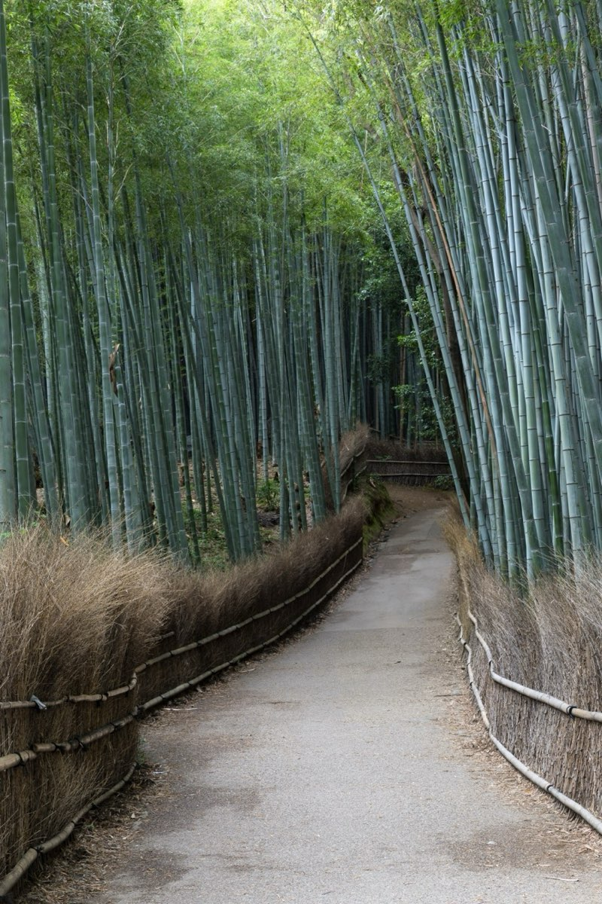
Bamboo GroveThe tall green bamboo walking path — short but unmistakable.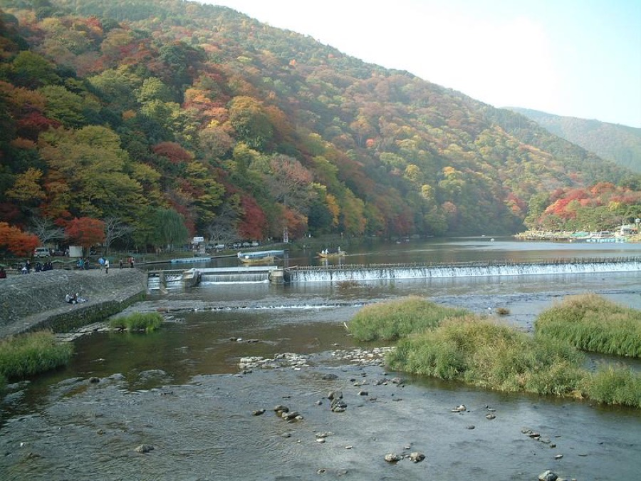
Togetsukyo BridgeThe wide wooden-railed bridge over the river with the green hills behind. (Photos: Wikimedia Commons)
Optional
Niche · 10 min💇 Mikami Shrine (御髪神社) — the "hair shrine"
Right here in
Sagano, by
Torokko Arashiyama station: Japan's only shrine to the
god of hair & beauty — hairdressers and anyone praying for hair health leave locks of hair as offerings. A quiet little 10-min curiosity if it appeals while you're between the grove and the train.
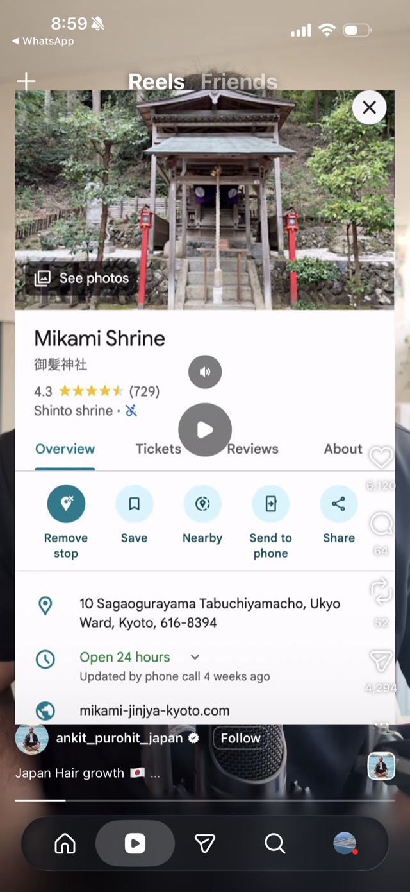
Mikami ShrineSmall forest shrine (御髪神社) tucked in Sagano near the Torokko line — the "hair & beauty" shrine. (Photo: your saved reel)Not interested? Skip straight to the Sagano Torokko below.
09:30
🚂 Sagano Romantic Train (Torokko) UP the gorge
Scenic open-car railway up the gorge. Boards at
Torokko Saga station (right next to JR Saga-Arashiyama); ride up to
Torokko Kameoka.
⚠️ Reserved paper ticket — sells out in peak July, book ahead. If you didn't get seats, the
regular JR Sagano line to Kameoka is the always-works fallback — then walk/shuttle to the boat dock.
🟥 BUY (reserve ahead)Sagano Torokko~25 min~¥880/adult · ~¥440 child
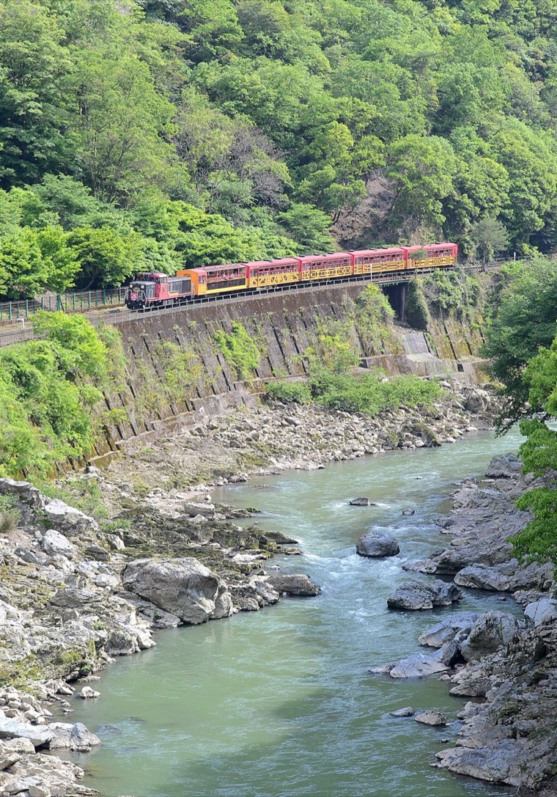
Sagano TorokkoThe old-fashioned open-sided sightseeing train that trundles along the gorge. (Photo: Wikimedia Commons)
10:15
🚌 Torokko Kameoka → Hozugawa boat dock
From Torokko Kameoka, a short
shuttle bus (~15 min, ~¥310) or taxi takes you to the
Hozugawa boat boarding dock (Kameoka Sanban-noriba). Boats are walk-up, first-come — get there in good time so you're on an ~11:00 departure.
Shuttle bus / taxi~15 min
11:00
🚣 Hozugawa River Boat back down to Arashiyama must-do
The highlight of the day — a
~90-min traditional wooden boat ride down the gorge rapids, boatmen poling and steering, back to Arashiyama by the Togetsukyo bridge. Kids love it; genuinely scenic and shaded on the water.
⚠️ Walk-up (no online booking) — arrive by ~10:45. Runs stop in heavy rain (if cancelled, take the Torokko back down instead).
🟥 PAY AT DOCK (cash)Hozugawa Kudari~90 min¥4,100/adult · ¥2,700 child
Info:
hozugawakudari.jp/en Hozugawa BoatLong flat-bottomed wooden boat, boatmen poling you down the river gorge — this is the "boat ride." (Photo: Wikimedia Commons)
Hozugawa BoatLong flat-bottomed wooden boat, boatmen poling you down the river gorge — this is the "boat ride." (Photo: Wikimedia Commons)
13:00
🍽️ Lunch in Arashiyama (your HappyCow picks)
All on/near the Nakanoshima main street between Randen Arashiyama Stn and the bridge.
- VEGBonBon Soba — Japanese soba, yuba, veg ramen; right by Arashiyama Stn toward the bridge. 📍 Maps: "BonBon Soba Arashiyama"
- VEGSeizan Sodo — 6-course set menu (~¥4,000pp), N of the station; · Gyatei onigiri / soy-meat, N of stn. 📍 Maps: "Seizan Sodo Arashiyama"
- SAFEKumahiko Café (ice cream + coffee, near the boat-ride end) · Arashiyama Yoshiya / Yoshiya yuba — confirm no dashi/egg.
14:00
🚄 Afternoon: over to OSAKA (the sightseeing you can't do on USJ day)
Why now: Jul 10 is a full theme-park day at USJ, so
Osaka's actual city sights (Castle + Dōtonbori) don't fit then — this afternoon is your window. From Arashiyama:
- TRAINSaga-Arashiyama → Osaka — JR Sagano/San-in Line to Kyoto Station (~20 min), then JR Special Rapid Kyoto → Osaka (~30 min). Leave bags/shopping light. 🟩 TAP SUICA · ~¥1,100/adult · ~55 min total
Reality check: this makes Jul 9 a genuinely full day (dawn bamboo + boat + Osaka). It's very doable because the morning ends by ~13:00 and the afternoon is flat city sightseeing — but if the kids are cooked after the river boat, the honest call is to
skip Osaka, ride JR back to Kyoto and rest (old plan: subway to Keage, pool, early dinner near the Westin). Osaka is the bonus, not the backbone.
15:00
🏯 Osaka Castle (Ōsaka-jō)
The great white-and-gold keep in a big moated park — one of Japan's most famous castles and an easy kid win. From Osaka Stn, JR
Osaka Loop Line to
Osakajōkōen (~10 min), then a walk through the park to the tower.
⚠️ Castle-tower entry ~¥600 adult / free under-15s, cash; last entry ~16:30 — or just enjoy the grounds for free.
 Osaka CastleThe main keep — this is what "Ōsaka-jō" looks like. (Photo: Wikimedia Commons)
Osaka CastleThe main keep — this is what "Ōsaka-jō" looks like. (Photo: Wikimedia Commons) 17:00
🌃 Dōtonbori + Hozenji Yokocho (Osaka Minami)
The neon canal heart of Osaka — the
Glico running-man sign, giant moving crab, and the buzzy covered arcades. From Osaka Castle, JR Loop to
Morinomiya → subway, or Loop to
Tennōji → Midōsuji line to
Namba (~20 min). Bright, buzzy and kid-safe in the early evening.
- SEEDōtonbori canal + Glico sign — the classic Osaka night photo, right on the water. 📍 Maps: "Dotonbori Glico Sign"
- SEEHozenji Yokocho — a tiny stone-paved lantern alley 2 min off the canal; splash the moss-covered Hōzen-ji statue for luck. 📍 Maps: "Hozenji Yokocho"
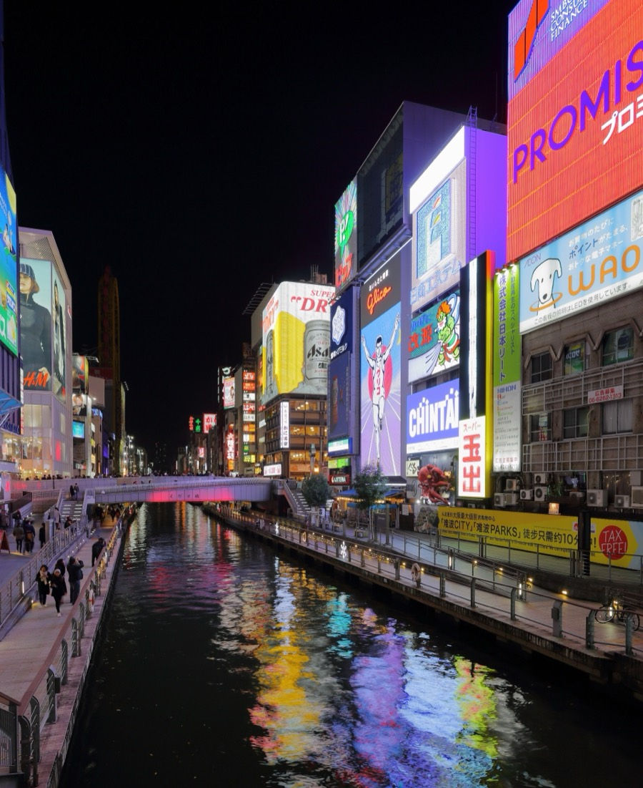
DōtonboriThe neon canal — the Glico sign is the photo everyone takes. (Photo: Wikimedia Commons) — come for the sights, do a proper veg dinner below.
18:30
🍽️ Veg dinner in Osaka (Namba / Shinsaibashi)
Namba has more reliable veg than the canal itself. Reconfirm on Maps the morning-of (small places move):
- VEGPaprika Shokudō Vegan — long-running all-vegan Japanese diner (set meals, karaage-style soy, curry), a short walk from Namba/Shinsaibashi. 📍 Maps: "Paprika Shokudo Vegan Osaka"
- VEGCoCo Ichibanya (veg curry roux) — chain, kid-proof; ask specifically for the vegetarian roux. Branches around Namba. 📍 Maps: "CoCo Ichibanya Namba"
- SAFENamba depachika / konbini — Takashimaya food hall + konbini for guaranteed kid snacks (inarizushi, fruit, melon pan).
~20:00
🏨 Osaka → Kyoto → up to the Westin
Head back to Kyoto.
⚠️ The free hotel shuttle has stopped for the night — use the subway or a taxi at the Kyoto end (same as USJ day):
- TRAINNamba/Osaka → Kyoto → Keage — JR Special Rapid Osaka → Kyoto Station (~30 min); then Karasuma subway → Karasuma-Oike, transfer to Tōzai line toward Rokujizō → Keage (蹴上), Exit 2, 2-min walk up. 🟩 TAP SUICA · ~¥1,100 total
- TAXIFrom Kyoto Station with wiped-out kids — say "Westin Miyako Kyoto, Keage", ~15 min, ~¥1,800–2,500.
Aim to be on a train out of Osaka by ~21:00 so you're not fighting last-train timing with tired kids. Early night — the USJ marathon is tomorrow.
Day 4 · Friday
July 10
Universal Studios Japan (Osaka)
Sleep: Westin Miyako Kyoto
Carry today: Suica ×4 · Studio Pass + Express Pass (pre-bought) · USJ app w/ payment set up · power bank · konbini snacks · veg card · Master Sheet
Day 4 — Fri Jul 10 · USJ 🎢 (dated tickets)
Headline: Big theme-park day trip to Osaka. This one needs early start + pre-bought tickets + a plan for Nintendo World.
06:15
🍳 Early breakfast + pack konbini snacks
Grab kid fuel for ride queues at any 7-Eleven/Lawson — veg options are thin inside the park.
 7-ElevenMelon pan, fruit sando, matcha sweets.
7-ElevenMelon pan, fruit sando, matcha sweets. LawsonRoll cake, Baschee, fruit sando, Mochi Puyo.
LawsonRoll cake, Baschee, fruit sando, Mochi Puyo. 06:45
🚆 To USJ: Kyoto → Osaka → Universal City
JR from
Kyoto Station to
Osaka Station (Special Rapid, ~30 min), then the
JR Yumesaki (Sakurajima) Line to
Universal-City station — the park is a 5-min walk. Google Maps shows the exact platform live.
Set up the USJ app with payment BEFORE you arrive.
🟩 TAP SUICAJR Kyoto→Osaka→Universal-City~75–90 min~¥1,200/adult
08:00
🎢 At the gate before official open
First move: rope-drop Super Nintendo World (+ Donkey Kong Country). ⚠️ Needs a timed-entry ticket that vanishes by mid-morning unless your Express Pass includes it (Part 8).
Morning
📏 Mind the height limits
⚠️ ~102 cm for Nintendo rides, 117 cm for big coasters — measure the 6-year-old at home. Indoor rides (Minion, Harry Potter) double as A/C breaks. Empty pockets before big rides — lockers are mandatory and strict.
11:30
🍽️ Lunch inside USJ (your picks — mobile-order early)
Mobile-order in the app early — 11:30 slots are gone by 10:00.
- VEGThree Broomsticks — vegetable Irish stew (Harry Potter area). · Kinopio's Café (Nintendo World) — spaghetti + meat-free "meatballs", pizza; reservation/timed-entry needed.
- VEGAzzurra di Capri — pizza. Confirm no meat/fish in sauces.
- SAFEYour packed konbini snacks — the guaranteed backup for the kids.
~17:30
🍽️ EARLY dinner as you EXIT — at Universal CityWalk
Eat BEFORE you board. CityWalk is the mall you walk through to reach the station — feed everyone here so the trip home is pure logistics.
Osaka Station is just your transfer (change platforms, no food-hunting with tired kids), then straight to Kyoto.
- SAFEUniversal CityWalk casual spots — pizza / pasta / crêpes / ice-cream; or re-use a lunch pick (Azzurra di Capri) for an early bite. Show the veg card. 📍 Maps: "Universal CityWalk Osaka"
- SAFEGrab-and-go for the train — konbini onigiri/fruit at Universal-City Stn if kids fade later.
Default plan: eat here, skip Umeda, head home to Kyoto. But if everyone still has energy, the optional Minami loop below is right there on the way.
Optional · eve
Only if you skipped Jul 9🌃 Dōtonbori + Hozenji Yokocho (Osaka Minami)
You've likely already done Osaka on Jul 9 (Castle + Dōtonbori) — so treat this as a fallback only if the Jul 9 Osaka afternoon got cut. If so, and the kids somehow still have gas: from Universal-City, JR to
Nishikujo → Hanshin/subway to
Namba (~25–30 min).
- SEEDōtonbori — the canal, Glico running-man sign, giant crab; the classic Osaka night photo.
- SEEHozenji Yokocho + Shinsekai/Tsūtenkaku — lantern alley and retro-neon district, only if fresh.
⚠️ Reality check: this is a full theme-park day already. If you already saw Osaka on Jul 9, just go home. Dōtonbori food is mostly meat/takoyaki — sights, not dinner.
Already did Osaka Jul 9 / kids melting? Skip entirely — straight back to Kyoto from Universal-City.
Getting home
🏨 Kyoto Station → the Westin (evening — no shuttle late)
You arrive back at
Kyoto Station from Osaka/USJ.
⚠️ The free hotel shuttle stops running in the evening (last departure ~18:00–19:00 — check the board), so at night use:
- TRAINSubway to Keage — Karasuma line from Kyoto Station → Karasuma-Oike (2 stops) → transfer to Tōzai line toward Rokujizō → Keage (蹴上), Exit 2, 2-min walk up to the lobby. ~15–20 min total. 🟩 TAP SUICA · ~¥260
- TAXIFastest with wiped-out kids — taxi rank at the Hachijō (south) or Karasuma (central) exit; say "Westin Miyako Kyoto, Keage". ~15 min, ~¥1,800–2,500.
Book now (Part 7): Studio Pass + Express Pass, online only.
Day 5 · Saturday
July 11
Nara — deer, Great Buddha, lanterns & old town
Sleep: Westin Miyako Kyoto
Carry today: Suica ×4 · ~¥10,000 cash (Todai-ji + Kasuga entries) · veg card · hats + water · Master Sheet · no bookings needed today
Day 5 — Sat Jul 11 · Nara day trip 🦌
Headline: All walk-up, no bookings — an easy, joyful full day. Deer → Great Buddha → Kasuga Taisha lanterns → Naramachi old town + a garden. A relaxed pace but with a real afternoon, not a 4pm retreat to the hotel.
08:00
🍳 Relaxed breakfast
No bookings today, so no rush. Sleep in a little after yesterday's USJ marathon.
09:30
🚆 To Nara
From
Kyoto Station: JR
Nara Line rapid to
Nara, or
Kintetsu to
Kintetsu-Nara (closer to the deer park; Kintetsu has its own gates on the south/Hachijō side). No advance booking — just tap and go.
🟩 TAP SUICAJR Nara Line / Kintetsu~45 min~¥720 JR · ~¥640 Kintetsu
10:30
🦌 Nara Park — free-roaming deer
⚠️ Deer safety: keep crackers hidden until ready, feed fast, then show empty open hands. Don't let the 6-year-old wave a stack around — they head-butt. They're calmer after ~13:00.
 Nara ParkTame deer wandering the open park — the kids can feed them special crackers. (Photo: Wikimedia Commons)
Nara ParkTame deer wandering the open park — the kids can feed them special crackers. (Photo: Wikimedia Commons)
11:30
🛕 Todai-ji — the Great Buddha hall
¥600 adult / ¥300 child, cash. One of Japan's great sights and easy for kids.
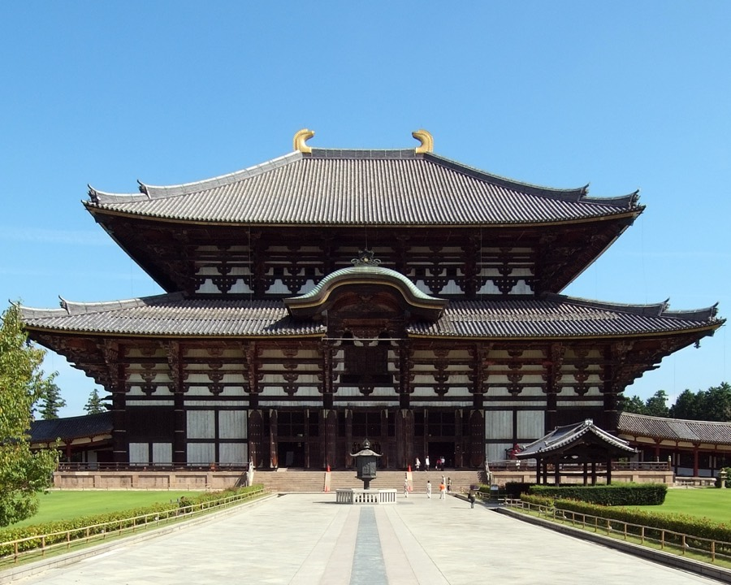
Tōdai-jiThe enormous wooden hall housing a giant bronze Buddha — a short walk uphill through the deer park. (Photo: Wikimedia Commons)
13:00
🍽️ Lunch near Kintetsu-Nara / Higashimuki arcade (your picks)
All on Higashimuki shopping street, 2 min from the park & Todaiji.
- VEGZagin Kintetsu-Nara — vegan ramen (down the road S from the station). 📍 Maps: "Zagin Kintetsu Nara"
- VEGChina Dining Hiten — veg options (fried rice, stir-fried soy). · Cafe Groovy — vegan spaghetti, further S on Higashimuki. 📍 Maps: "Cafe Groovy Nara"
14:00
🏮 Kasuga Taisha — the lantern shrine
What it is: Nara's most important shrine, at the far (east) end of the deer park. It's famous for its
~3,000 lanterns — hundreds of moss-covered
stone lanterns lining the forest approach, plus rows of
bronze hanging lanterns along the vermilion shrine buildings. The forest walk in to it is half the charm (you'll pass more deer). ~15-min walk uphill from Todai-ji, or a short bus.
- SEEStone-lantern forest path — free to walk the wooded approach lined with lanterns. 📍 Maps: "Kasuga Taisha"
- TIPInner hall (bronze lantern corridor) — small paid area (~¥500 cash) if you want the dark lantern hall; the free outer paths already give you the iconic look.
 Kasuga TaishaThe hanging bronze lanterns along the shrine — plus stone lanterns line the forest path in. (Photo: Wikimedia Commons)
Kasuga TaishaThe hanging bronze lanterns along the shrine — plus stone lanterns line the forest path in. (Photo: Wikimedia Commons)
15:15
🍵 Naramachi old town + a garden (fills the afternoon)
Instead of heading back at 4pm, wander
Naramachi (ならまち) — the lattice-fronted former merchant quarter just south of the park: traditional machiya townhouses, craft shops, cafés, and the little
"sleeping cat" lanes. Add a cool-down garden if everyone's game:
- SEENaramachi lanes — free to stroll; kid-friendly craft/sweet shops, mochi pounding demos nearby. 📍 Maps: "Naramachi"
- SEEIsuien Garden or Yoshikien Garden — beautiful strolling gardens between Todai-ji and Naramachi (Yoshikien is free for foreign visitors). A shady 30–40 min. 📍 Maps: "Isuien Garden Nara"
- SAFENakatanidou — famous high-speed mochi-pounding shop near Higashimuki; fresh yomogi mochi, a guaranteed kid-win. 📍 Maps: "Nakatanidou"
This is your buffer day — you now have a full afternoon, but everything here is optional and flat. If anyone's genuinely wiped, cut it and head back; nothing is time-critical.
16:30
🍨 Snack / early bite in Naramachi before the train
Regroup with a cold drink and a sweet before the ride home (dinner is back near the Westin):
- VEGCafe/teahouse in Naramachi — matcha, warabi-mochi, kakigōri (shaved ice) in the old-town cafés. Reconfirm no-egg on baked items. 📍 Maps: "Naramachi cafe"
- SAFEHigashimuki arcade konbini — grab-and-go for the train if the kids fade.
17:30
🚆 Train back to Kyoto → up to the Westin
Reverse of the morning — JR or Kintetsu, tap Suica, back to
Kyoto Station (~45 min). Then up to the hotel (home station =
Keage on the Tōzai line, Exit 2, 2-min walk):
- SHUTTLEFree Westin shuttle — only if you're back by ~18:00–19:00 (check the board). Board at the Hachijō (south) exit, white bus, :10/:40 past the hour, ~25 min.
- TRAINSubway if later — Karasuma line → Karasuma-Oike, transfer to Tōzai line toward Rokujizō → Keage. ~15–20 min. 🟩 TAP SUICA · ~¥260
- TAXIEasiest with tired kids — "Westin Miyako Kyoto, Keage", ~15 min, ~¥1,800–2,500.
This is your buffer day — if anyone's wiped, cut it to a half-day and rest.
18:30
🍽️ Relaxed dinner near the Westin
Your
near-Westin picks, a short walk from the hotel:
- VEGJunsei (8-min NE) · Oshokuji-dokoro Asuka (7-min W) · Okutan Nanzen-ji (13-min) · Beer Komachi (near Higashiyama Stn). 📍 Maps: "Junsei Kyoto"
Nothing demanding tomorrow morning — Day 6 is your gentle Kyoto wind-down.
Day 6 · Sunday
July 12
Golden Pavilion + Nijō Castle → last Kyoto sights
Sleep: Westin Miyako Kyoto
Carry today: Suica ×4 · ~¥12,000 cash (Kinkaku-ji + Nijō entries) · veg card · Master Sheet · tonight: pack tight + reserve Jul 13 oversized-baggage seats on Smart-EX
Day 6 — Sun Jul 12 · Golden Pavilion, Nijō Castle & last Kyoto sights
Headline: Your last full Kyoto day — knock out the two big remaining "must-see" sights (Kinkaku-ji + Nijō Castle) in the morning, a downtown lunch, then an easy afternoon of your choice. You carry all bags on the train tomorrow, so tonight's non-negotiable job is packing tight (see the Day 7 luggage note) — that's why the late afternoon stays flexible.
09:00
🏯 Kinkaku-ji (Golden Pavilion) — go first, go early
What it is: a Zen temple whose top two floors are
completely covered in gold leaf, mirrored in the pond in front — arguably the single most dazzling sight in Kyoto and an instant kid "wow." It's a
one-way garden stroll (~30–40 min), not a climb, so it's easy with the 6-year-old. Go early — it's packed by mid-morning. NW Kyoto; easiest =
taxi from the Westin (~25 min), or subway + bus.
🟩 TAP SUICA / TAXI~25–30 min from Westin¥500 cash entry
 Kinkaku-jiThe gold-leaf pavilion over its mirror pond — this is "Golden Pavilion." (Photo: Wikimedia Commons)
Kinkaku-jiThe gold-leaf pavilion over its mirror pond — this is "Golden Pavilion." (Photo: Wikimedia Commons)
10:45
🏯 Nijō Castle — the shogun's palace (pairs with Kinkaku-ji)
What it is: the
Kyoto castle-palace of the Tokugawa shogun — not a tall keep but a sprawling moated compound with lavish painted screens and the famous
"nightingale floors" that chirp when you walk (built to detect intruders — kids love testing them). It's a flat walk-through between Kinkaku-ji and downtown, so it slots in naturally.
⚠️ ~¥1,300 adult / cheaper kids, cash; last entry ~16:00.
🟩 TAP SUICA / TAXI~15 min from Kinkaku-ji~¥1,300 adult
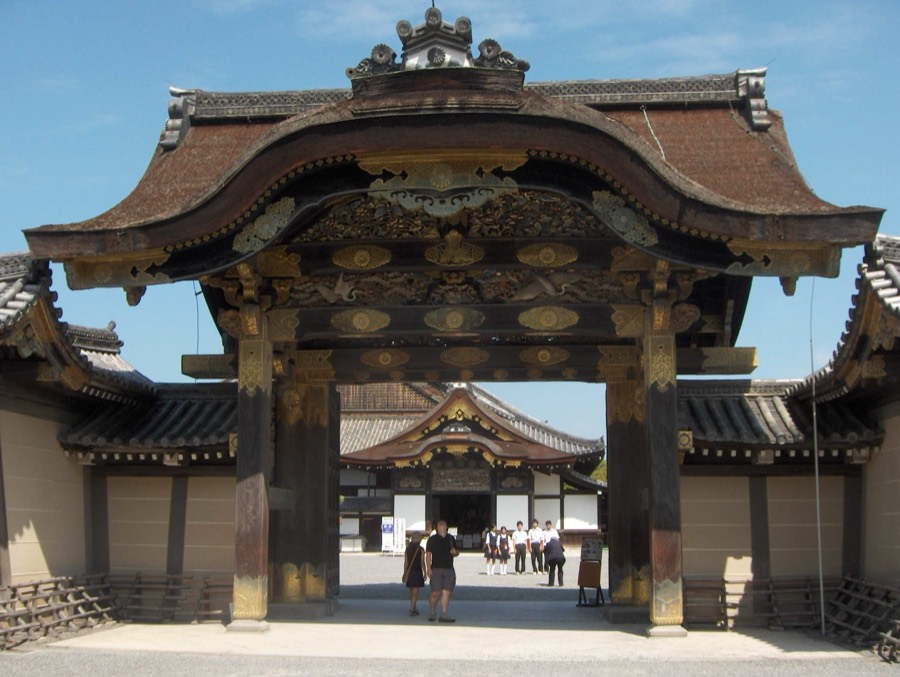
Nijō CastleThe Ninomaru Palace — long low buildings with painted screens & nightingale floors. (Photo: Wikimedia Commons)
Optional
Only if not done🎋 Arashiyama — if you somehow skipped Jul 9
You already did
Arashiyama on Jul 9 (bamboo grove + river boat), so you can skip this. It's only here as a catch-up if Day 3 got rained out. It's the green NW district — the
bamboo grove, Togetsukyo bridge, and riverside.
ArashiyamaThe bamboo grove — NW Kyoto's green district (already on your Jul 9). (Photo: Wikimedia Commons)
Already did Jul 9? Skip — do Kinkaku-ji + Nijō above instead.
Optional · kids
Kid-first swap🥷 Toei Kyoto Studio Park
If the kids would rather have a fun day than a second temple,
swap Nijō Castle for this — a samurai/ninja film-set park with costumes, ninja shows, and a haunted house. A genuine hit for a 6-year-old. Half-day, west Kyoto (near Kinkaku-ji's side of town). JR Sagano Line to
Uzumasa or a taxi.
🟩 TAP SUICAJR Sagano → Uzumasa, or taxi~30 min
toei-eigamura.com ·
📍 Maps: "Toei Kyoto Studio Park"
 Toei Studio ParkYour saved pick — very "old Japan," great for kids.
Toei Studio ParkYour saved pick — very "old Japan," great for kids.Prefer the classic sight? Stick with Kinkaku-ji above and skip this.
12:30
🍽️ Lunch — Nishiki east end / Shijō-Kawaramachi (your picks)
Nishiki's east end runs right into Shijō-Kawaramachi — the same cluster as your Day 2 picks:
- VEGChao Chao Gyoza (veg gyoza, off Shijō-dōri) · Hyssop (veg café, 4F Good Nature Station). 📍 Maps: "Good Nature Station Kyoto"
- SAFENishiki Market grazing — yuba, tofu doughnuts, matcha sweets, soy-milk (check no-bonito). · (THIS IS) NATURE flower ice-cream cones.
14:00 · pick one
Fill the afternoon🍵 One last easy Kyoto thing (all near the hotel side)
You're downtown after lunch with a few hours before packing — do
one calm thing rather than heading straight back:
- SEEGinkaku-ji (Silver Pavilion) + Philosopher's Path — the serene counterpart to Kinkaku-ji, plus the pretty canal walk; close to the Westin's side of town. 📍 Maps: "Ginkaku-ji"
- SEEHeian Shrine + garden — giant orange torii, big plaza, a short taxi from the hotel; low-effort and photogenic. 📍 Maps: "Heian Shrine"
- SEE💄 Kawai Shrine (beauty shrine) — in the Shimogamo Shrine forest (~5-min walk from Demachiyanagi Stn, Keihan line, N of downtown). Famous for face-shaped "beautiful face" ema you decorate with your own cosmetics; pairs with a cool Kamo-river / Shimogamo forest stroll. 📍 Maps: "Kawai Shrine Kyoto"
- SHOPNishiki Market + Teramachi/Shinkyōgoku arcades — last light Kyoto souvenir grazing (keep it small — you carry all bags tomorrow). 📍 Maps: "Nishiki Market"
⚠️ Keep purchases light — everything you buy today gets wheeled onto the Shinkansen tomorrow.
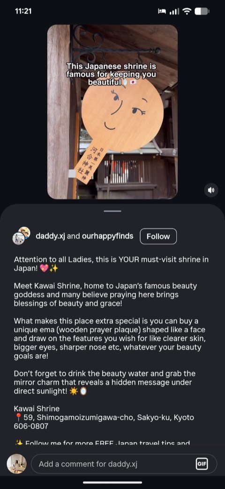
Kawai ShrineThe "beauty" shrine in the Shimogamo forest — you decorate a face-shaped ema with your own cosmetics. (Photo: your saved reel)Everyone tired / want to swim + pack? Skip and head back now — the onsen/pool option is below.
16:30
🚆 Back to the Westin (from Shijō-Kawaramachi / Nishiki / Higashiyama)
Home station =
Keage (蹴上),
Tōzai line, Exit 2, 2-min walk up. From the Nishiki/Shijō-Kawaramachi cluster:
- TRAINWalk ~7 min N to Sanjō → Sanjō-Keihan → Tōzai line toward Rokujizō (六地蔵) → Keage (3 stops, ~6 min). 🟩 TAP SUICA · ~¥260 ⚠️ toward Rokujizō, not Uzumasa-Tenjingawa.
- TAXIWith kids + any bags — "Westin Miyako Kyoto, Keage", ~15 min, ~¥1,500–2,200.
Optional
Add-on♨️ Westin onsen this afternoon
⚠️ Brief the kids on onsen rules — wash first, no swimwear (Part 8).
Skip the onsen? Pool + pack the carry-alongs instead.
18:30
🍽️ Farewell-to-Kyoto veg dinner near the Westin
Your
near-Westin picks — or splurge on the shōjin send-off:
- VEGJunsei / Okutan Nanzen-ji — a proper yudōfu farewell (confirm kombu-only broth). 📍 Maps: "Okutan Nanzenji"
- VEGOshokuji-dokoro Asuka (7-min W) · Beer Komachi (casual) · or concierge-booked shōjin ryōri for the special temple-veg send-off.
Tonight's jobs: pack tight (you wheel everything onto the Shinkansen tomorrow),
reserve the oversized-baggage seats on Smart-EX for the Jul 13 Nozomi (see Day 7), confirm the train, charge everything.
Day 7 · Monday
July 13
Kyoto → Tokyo (JW Marriott)
Sleep: JW Marriott Tokyo
Carry today: all 4 passports · Smart-EX QR w/ oversized-baggage seats reserved · Suica ×4 · all luggage · veg card · Master Sheet
Day 7 — Mon Jul 13 · Move to Tokyo 🚄
Headline: The full-luggage transfer. You're wheeling all 4 bags onto the Nozomi, so the one thing that matters is reserving the right seats (below). You get off at Shinagawa, not Tokyo Station.
🧳 Book the oversized-baggage seats. Any suitcase where length + width + height is 161–250 cm (most large check-in bags) needs a "特大荷物スペースつき座席 / Oversized Baggage Seat" on the Nozomi — it's the last row of the car, with locking storage space behind it, at no extra charge if reserved in advance. Book these on Smart-EX when you reserve. ⚠️ Board without one and it's a ¥1,000/bag penalty + no guaranteed space. Bags under 160 cm total need no reservation (overhead rack / at your feet). Full rule + photo in Part 3.
08:30
🍳 Relaxed breakfast + final pack
No need to rush — trains are frequent. Checkout when ready (Westin holds bags if needed). Double-check nothing's left in the room safe.
11:15
🚌 Westin shuttle → Kyoto Station (with all bags)
Take the hotel shuttle from the lobby (free, :10/:40, ~15 min). At Kyoto Station, follow blue
Shinkansen signs to the
central Shinkansen gates — use lifts/escalators with the bags, not stairs. Grab platform
ekiben/veg snacks before boarding.
Give yourself margin — 4 bags + a 6-year-old through a station is slow.
Free shuttle · no booking~15 minSatellite Concierge in-station can help
12:30
🚄 Nozomi → alight at SHINAGAWA
Sit in your reserved
oversized-baggage row (bags lock behind the last row).
Fuji on the left (seats D/E) going this way, if clear. Line up on your painted car-number mark ~10 min early.
Get off at Shinagawa (the stop before Tokyo Station) — the Shinkansen doesn't stop at Takanawa Gateway, and Shinagawa skips the Tokyo-Station maze.
🟥 BUY (Smart-EX)Tokaido Shinkansen NOZOMI~2h15m~¥13,960/adult
14:50
🚕 Shinagawa → JW Marriott → DROP BAGS + check in
With 4 bags,
take a taxi from the Shinagawa Takanawa-gate/West-exit rank (~5 min) — easiest with luggage.
(Travelling light you'd just hop the Yamanote ONE stop Shinagawa → Takanawa Gateway, which walk-connects to the hotel in 1 min — but with 4 cases, taxi.) Titanium — ask about the upgrade/lounge.
Drop the bags, check in, THEN go eat — don't drag luggage to lunch.
Taxi (easiest w/ bags)~5 min¥1,000–1,500
15:30
🍽️ Late lunch near the JW (bags already dropped)
Hands-free now — eat within a few min of the hotel / Takanawa Gateway.
- VEGEqual Café — Buddha bowls, vegan curry, ice cream; 5F of NEWoMan Takanawa, right behind the JW. 📍 Maps: "Equal Cafe NEWoMan Takanawa"
- VEGObica Mozzarella Bar — Italian/cheese-forward, by the Shinagawa Prince Hotel. 📍 Maps: "Obica Takanawa"
- SAFEEkiben on the train — if kids can't wait, eat the plain-onigiri/fruit ekiben en route and just settle in.
Optional
Buy · easy + indoor🛍️ Ginza run — Uniqlo/MUJI + electronics + watches
A gentle first-evening errand if everyone's rested — all A/C, one short train (Shinagawa → Shinbashi/Ginza).
You're not moving hotels again, so heavy stuff is fine from here on.
- HOMEUniqlo Ginza (12 floors) · MUJI Ginza · GU — Japan-exclusive lines, tax-free w/ passport. 📍 Maps: "Uniqlo Ginza"
- TECHBic Camera Yūrakuchō — Sony cameras/headphones, Nintendo Switch, Seiko/Casio/Citizen watches, tax-free counter. ⚠️ confirm 100–240V dual-voltage. 📍 Maps: "Bic Camera Yurakucho"
- TECHGinza Sony Park — Sony's own experiential showroom building (reopened Jan 2025), 5 min from Uniqlo Ginza. Free to wander; ever-changing exhibits + a café. Hours ~11:00–19:00. sonypark.com 📍 Maps: "Ginza Sony Park"
- WATCHGrand Seiko Flagship Boutique — Japan's largest GS boutique, on Ginza Namiki St (6-6-5 Ginza). Mon–Sat 11:00–20:00 / Sun & hols 11:00–19:00. ⚠️ high-end — browsing welcome; a real destination if a GS is on the wishlist. 📍 Maps: "Grand Seiko Boutique Ginza Namiki"
Too tired first night? Skip — the big shopping day is Jul 16. Go straight to dinner.
18:30
🍽️ Gentle first Tokyo dinner near the JW
Your
near-JW picks (Takanawa Gateway / Shinagawa Takanawa-gate side — reused on quiet Tokyo nights):
- VEGObica Mozzarella Bar — near the Shinagawa Prince Hotel; cheese/Italian, veg-friendly. 📍 Maps: "Obica Takanawa"
- VEGEqual Café (NEWoMan, behind JW) — if not used at lunch. · Green Market MOA — grocery/deli for a light in-room night, E of Obica.
- SAFENatural Café Tabunoki — ⚠️ veg options unclear & hours erratic — call/check Maps before going; treat as a maybe, not a plan.
Day 8 · Tuesday
July 14
Tokyo — Asakusa & Shibuya
Sleep: JW Marriott Tokyo
Carry today: Suica ×4 · passport (tax-free shopping) · veg card · hats + water · Master Sheet · stand LEFT on Tokyo escalators
Day 8 — Tue Jul 14 · Tokyo classics
Headline: Old Tokyo in the morning, iconic modern Tokyo in the evening — with a big A/C break between.
07:30
🍳 Breakfast → early start
Get to Asakusa before the crowds and heat build.
08:00
🚆 To Asakusa
From Shinagawa/Takanawa Gateway: JR to a transfer, then the
Ginza subway line to
Asakusa — Google Maps shows the live platform + best route. Go early.
🟩 TAP SUICAJR + Ginza line~40 min~¥400
08:30
🏮 Asakusa & Senso-ji + Nakamise street
Tokyo's great old temple + its souvenir/snack street. Go early — by late morning it's packed and hot. Add-ons right here: Kappabashi Kitchen Town (plastic food, knives) and Hanayashiki retro amusement park for the 6-year-old.
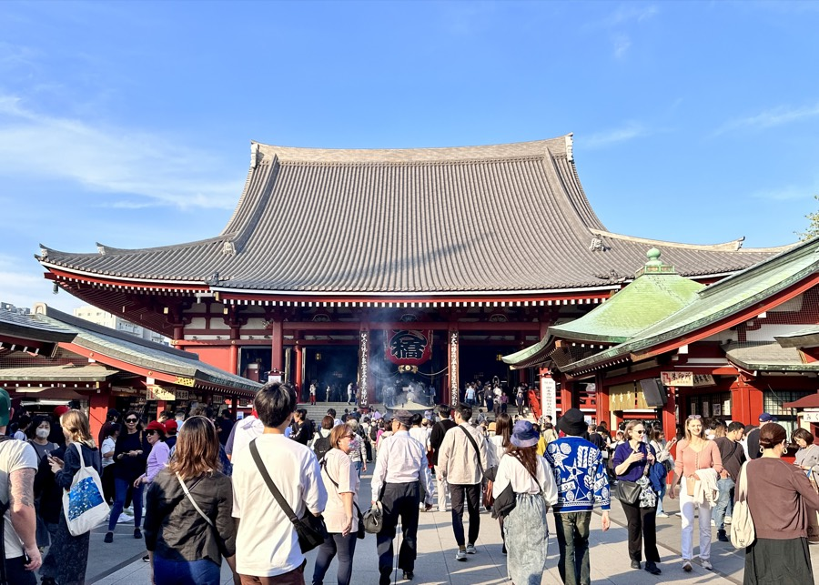
Sensō-ji (Asakusa)The big red temple gate + lantern and the shop-lined Nakamise street leading up to it. (Photo: Wikimedia Commons)
Optional
Add-on🗼 Tokyo Skytree
Right nearby — observation decks with big city views.
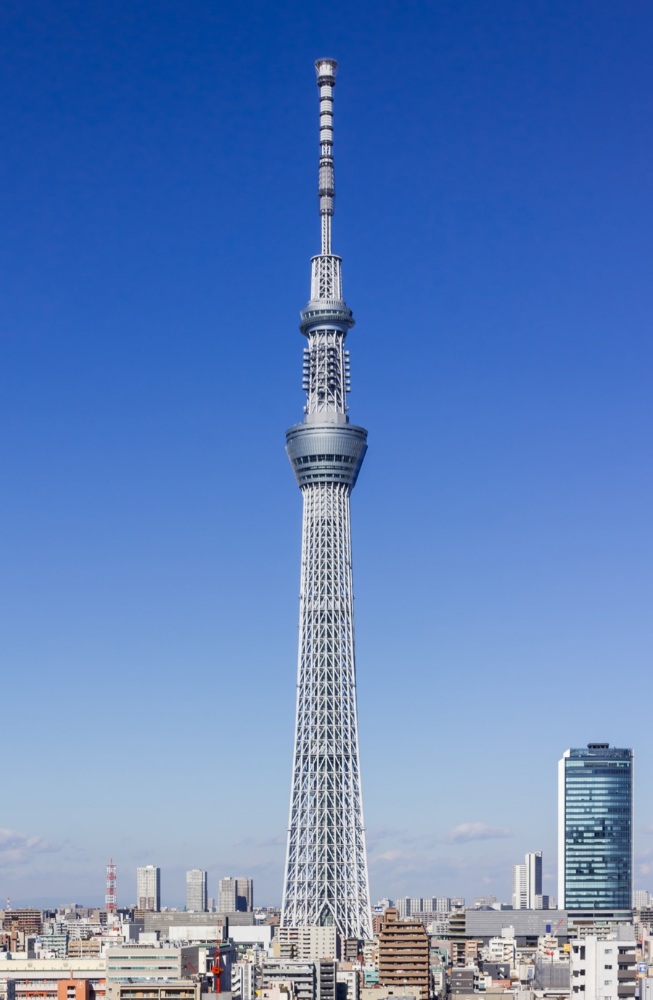
Tokyo SkytreeThe tall lattice broadcast tower (world's tallest tower) — glass observation decks near the top. (Photo: Wikimedia Commons)Skip the tower? Head to the A/C lunch break.
Optional · 15 min
Luck detour💰 Koami Shrine (小網神社) — the "money-washing" shrine
A tiny, atmospheric good-fortune shrine in
Nihonbashi — people
wash their money in the spring for prosperity, and it's known for warding off misfortune. An easy 15-min detour on the way between Asakusa and Shibuya (
Ningyōchō / Kayabachō Stn, Hibiya line). Often a short queue — go early if you want a photo.
 Koami ShrineSmall ornate shrine (小網神社) in Nihonbashi — the money-washing good-luck spot. (Photo: your saved reel)
Koami ShrineSmall ornate shrine (小網神社) in Nihonbashi — the money-washing good-luck spot. (Photo: your saved reel)Not detouring? Carry on to the A/C lunch + Shibuya below.
12:30
🍽️ Lunch in Asakusa (before the A/C break)
Eat around Senso-ji / the station before the midday heat peaks.
- VEGYoroiya — vegan ramen & gyoza, near Senso-ji. 📍 Maps: "Yoroiya Asakusa"
- VEGHatoya's — top-rated vegan fruit sandwiches (unique, kid-friendly). · Injoy Etsunou — vegan, just E of the station. 📍 Maps: "Hatoya Asakusa"
- VEGVeganic to go / Monkey Magic — N side. ⚠️ reservation needed — call ahead or treat as a maybe.
Optional
A/C pick🎨 Museum / depachika A/C break
A cool indoor refuge for the hot part of the day. TeamLab Planets is on the dedicated Jul 16 day (wife + kids) — don't double-book it here. Any department-store depachika or a nearby museum works as today's A/C break.
Kids still fresh? Push straight on to Shibuya at dusk.
16:00
🚆 To Shibuya
From Asakusa: Ginza line + transfer, or JR — Maps shows the live route. Aim to arrive at dusk for the lights.
🟩 TAP SUICAsubway / JR~35–45 min~¥300
16:30
🌆 Shibuya — Scramble Crossing & Hachiko
Bright, buzzy, kid-friendly at dusk. Shibuya Sky for sunset views (⚠️ book ahead). Shibuya is also drugstore + secondhand-luxury central — the errands below fit right here.
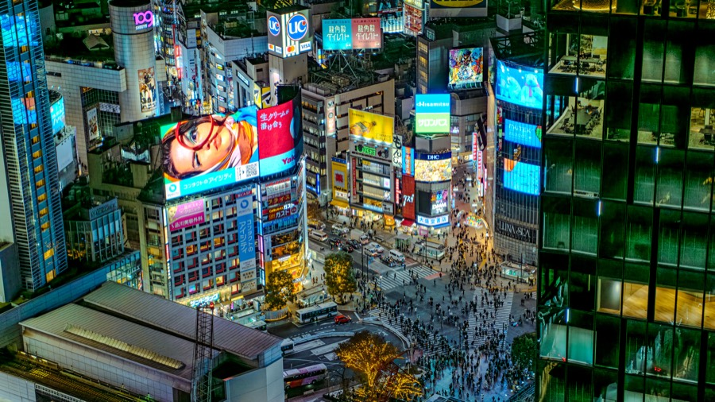
Shibuya CrossingThe giant neon-lit intersection where crowds cross from every direction at once. (Photo: Wikimedia Commons)
Optional
Buy🛍️ Shibuya shopping run
Tax-free with passport (¥5,000 min pre-tax).
This is a big shopping-city day — heavy stuff is fine now, you're not moving hotels again.
- KIDSNintendo TOKYO + Pokémon Center Shibuya — both on the 6th floor of Shibuya PARCO (5-min walk from the crossing), 10:00–21:00. Japan's first official Nintendo store + a full Pokémon Center side by side — the big win for your 6-year-old. ⚠️ can be crowded weekends/holidays; numbered-entry tickets issued at peak — go earlier if it's mobbed. nintendo.co.jp/officialstore 📍 Maps: "Shibuya PARCO"
- SKINMatsukiyo / Ainz & Tulpe / Don Quijote — your full skincare + haircare list (Melano CC, Hada Labo, Fino, etc.). Bring the shelf photos.
- LUXKomehyo / 2nd Street — pre-loved Chanel/LV bags & watches, authenticated. 📍 Maps: "Komehyo Shibuya"
- EYEBlue Elephant — your saved eyewear brand (Shinjuku/Harajuku flagships). blueelephant.co
- HOMELoft / Hands Shibuya — cosmetics, stationery, travel goods, gifts.
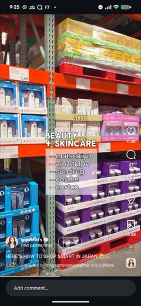
DrugstoresMatsukiyo / Ainz&Tulpe / @cosme.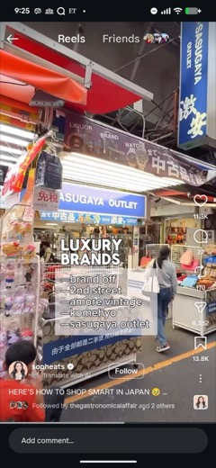
Komehyo / 2nd StPre-loved bags & watches.Blue ElephantEyewear.Not shopping tonight? Save it for the Jul 16 shopping afternoon and go to dinner.
19:00
🍽️ Dinner in Shibuya (Hachikō / Center-Gai side)
- VEGGyumon Shibuya (Center-Gai) — vegan ramen + tofu burger (also serves halal wagyu — order the veg items). 📍 Maps: "Gyumon Shibuya"
- VEGCARVAAN Delicatessen — veg wraps & mezze. 📍 Maps: "CARVAAN Shibuya"
- INDMilan Nataraj — Indian veg, a little N of the crossing. 📍 Maps: "Milan Nataraj Shibuya"
Reminders: stand
left on Tokyo escalators; carry your rubbish; live location on in crowds.
Day 9 · Wednesday
July 15
Tokyo DisneySea 🌊 · your son's 7th birthday 🎂
Sleep: JW Marriott Tokyo
Carry today: Suica ×4 · DisneySea tickets dated JUL 15 (on phones) · Tokyo Disney app w/ payment · 10,000mAh power bank · packed snacks · veg card · Master Sheet
Day 9 — Wed Jul 15 · DisneySea 🎂 (birthday + dated tickets)
Headline: The big magical one — and it's the birthday. Date-locked ticket (make sure it's dated Jul 15), app-driven, rope-drop early. Fantasy Springs (Frozen / Rapunzel / Peter Pan, opened 2024) is the newest and most birthday-worthy land. Read the DisneySea gotchas (Part 8) the night before.
🎂 First
🎈 Make it his birthday — free celebration badge
At the entrance (or any shop / cast member), say "It's my son's birthday today" — they give a free "Happy Birthday" sticker/badge and write his name on it. Cast members and characters all over the park then wish him "Happy Birthday!" all day. Nice touches: a birthday-ear headband from any merch shop; and if you pre-booked a table-service restaurant (Ristorante di Canaletto / Magellan's), ask for a small birthday dessert plate when you reserve.
06:30
🍳 Early breakfast + battery check
🔋 The Disney app kills your battery — carry a 10,000 mAh power bank. Pack snacks (kids reject the themed-restaurant meat dishes).
07:00
🚆 JW → Maihama → Disney Resort Line
Shinagawa/Tokyo Stn →
JR Keiyō Line to
Maihama, then the
Disney Resort Line monorail to DisneySea.
⚠️ The Keiyō-line platform at Tokyo Station is a ~10-min walk from the main concourse — pad time.
Not central Tokyo (it's in Urayasu). Leave early to rope-drop.
🟩 TAP SUICAJR Keiyō → Maihama → monorail60–90 min~¥400 JR + ¥260 monorail
08:15
🎟️ At the gate (08:15–08:45)
The moment you scan in, open the Tokyo Disney app and buy Fantasy Springs / Frozen DPA first — it sells out by ~09:30–10:00. The app won't let you buy before you're scanned in. This is the birthday headliner — grab it first.
Morning
📱 Work the 3 pass systems
Free Standby Pass / free anniversary passes / paid DPA — check each headliner in the app. Only one DPA at a time; stagger across both parents' phones. Height: a 7-year-old clears almost everything — just check the tall coasters (Journey / Raging Spirits ~117 cm).
11:00
🍽️ Veg lunch inside DisneySea — mobile-order before 11:00
Order in the app before 11:00 or slots vanish. Your in-park picks (pizza/pasta are the safest veg bets — confirm no meat/egg/dashi):
- VEGRistorante di Canaletto — pizza & pasta (waterside, Mediterranean Harbor); table-service = the birthday-cake spot if you reserved. 📍 in-park
- VEGZambini Brothers' Ristorante — pizza, pasta, the famous tomato-basil roll. · Casbah Food Court — veg curry & naan (ask about meat/dashi).
- SAFESebastian's Calypso Kitchen — tortilla wraps / soft tacos (pick the veg filling). · Packed snacks — backup if kids reject the themed dishes.
Optional
If kids last🎆 Stay for the water / night show
A great birthday finale — but it's a very long day.
Kids melting down? Leave before the closing crush — don't push it.
Exit
🎫 Scan ticket at the exit
⚠️ Re-entry uses ticket scans, no stamps — keep every ticket on the phone. Long day — build slack, expect meltdowns. Tomorrow: TeamLab + shopping (a gentler day).
🎂 Birthday note: if you'd prefer the classic little-kid birthday (castle, parade, Mickey up close), Tokyo DisneyLand is the more character-forward park than DisneySea. But DisneySea's new Fantasy Springs (Frozen / Rapunzel / Peter Pan) is genuinely magical for a 7-year-old, and it's what you've planned — either works. Just make sure the dated ticket says Jul 15, not Jul 16.
Day 10 · Thursday
July 16
Tokyo — TeamLab + shopping (Dad works AM) · Fuji swap if clearer
Sleep: JW Marriott Tokyo
Carry today: Suica ×4 · passport (tax-free — bring for every store) · TeamLab Planets timed tickets · shoe/watch sizes + shelf photos · veg card · Master Sheet · check Fuji forecast — swap to Day 11 plan if today's clearer
Headline: You're in the office this morning; wife + kids do TeamLab Planets, then Harajuku shopping; you join for the evening electronics / watch run in Akihabara + dinner. This is now the Fuji-swap day — if Jul 16 looks clearer than Jul 17, run the Day 11 Fuji timeline today instead (DisneySea's Jul 15 date is fixed, so Fuji swaps with this day now).
Night before
🌦️ Decide: Fuji today, or this plan?
If Jul 16 looks clearer than Jul 17 → run the Day 11 Fuji timeline today and move this TeamLab/shopping plan to Jul 17. Otherwise carry on (Fuji odds are fickle in July — Part 8). Book TeamLab Planets timed tickets ahead either way — pick a late-morning slot.
08:00
🍳 Breakfast → Dad to office, wife + kids set out
Split the day: you head to work; wife + kids do the two easy, kid-loved things below. Share live location; regroup late afternoon in Akihabara for the electronics run.
10:00
🎨 TeamLab Planets TOKYO (Toyosu) — wife + kids
Barefoot, wade-through-water immersive digital art —
kids adore it and it's fully indoor A/C. In
Toyosu: Yurikamome line to
Shin-Toyosu (1-min walk).
⚠️ Timed entry — book ahead; you wade knee-deep, so shorts > long skirts. ~1.5–2 h.
🟩 TAP SUICA→ Shin-Toyosu (Yurikamome)~2 h visit~¥3,800 adult
planets.teamlab.art
 TeamLab PlanetsBarefoot mirrored light & water rooms in Toyosu — this is the place. (Photo: Wikimedia Commons)
TeamLab PlanetsBarefoot mirrored light & water rooms in Toyosu — this is the place. (Photo: Wikimedia Commons) Optional
Nearby🤖 Odaiba — Gundam statue + malls
Toyosu sits right by Odaiba — a couple of Yurikamome stops on: the life-size Unicorn Gundam statue (DiverCity), waterfront malls, and the Miraikan science museum. Easy kid add if TeamLab finishes early.
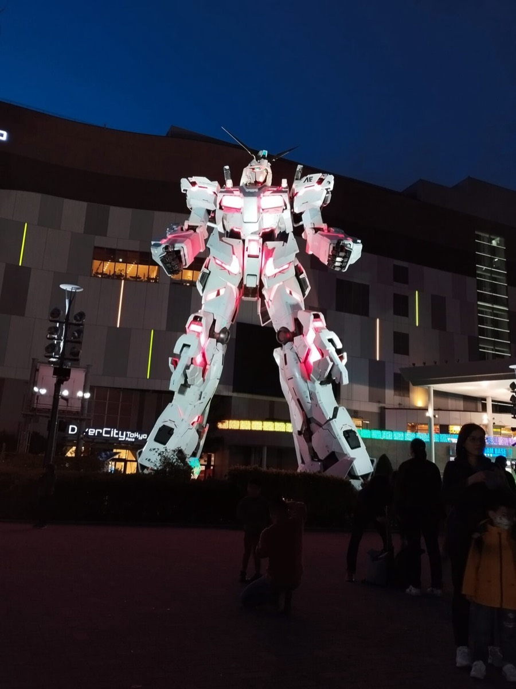
Unicorn GundamThe ~20 m robot statue standing outside the DiverCity mall — it transforms on a light show at night. (Photo: Wikimedia Commons)Heading to Harajuku instead? Skip Odaiba and go straight to lunch + shops.
12:30
🍽️ Lunch (wife + kids)
- VEGAin Soph. — fully vegan café (Ginza / Shinjuku / Ikebukuro branches); pancakes, burgers, bento. ⚠️ book ahead. ain-soph.jp
- SAFEHarajuku café / depachika — lots of veg-friendly cafés around Omotesandō; show the veg card.
13:30
🛍️ Harajuku & Takeshita Street — crepes, character shops, sneakers (wife + kids)
The kid-heaven strip. All tax-free with passport (¥5,000 min pre-tax).
- EATTakeshita-dōri crepe stands — Marion Crepes / Angel's Heart, the famous Harajuku crepes. ⚠️ batter has egg — fruit + cream fillings are the win; skip if strict no-egg.
- KIDSKiddy Land Harajuku — 5 floors Sanrio / Ghibli / Pokémon / Snoopy. · @cosme TOKYO — Japan's biggest cosmetics store (bring shelf photos).
- SHOESNike Harajuku — flagship; Japan-exclusive colourways + the Nike Mind wellness insoles you saved (pressure-point sole). · Onitsuka Tiger Omotesandō (Yellow Concept Store).
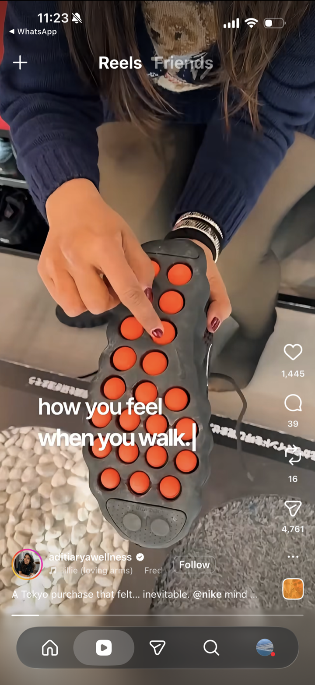
Nike MindPressure-point sole — ask at Nike Harajuku.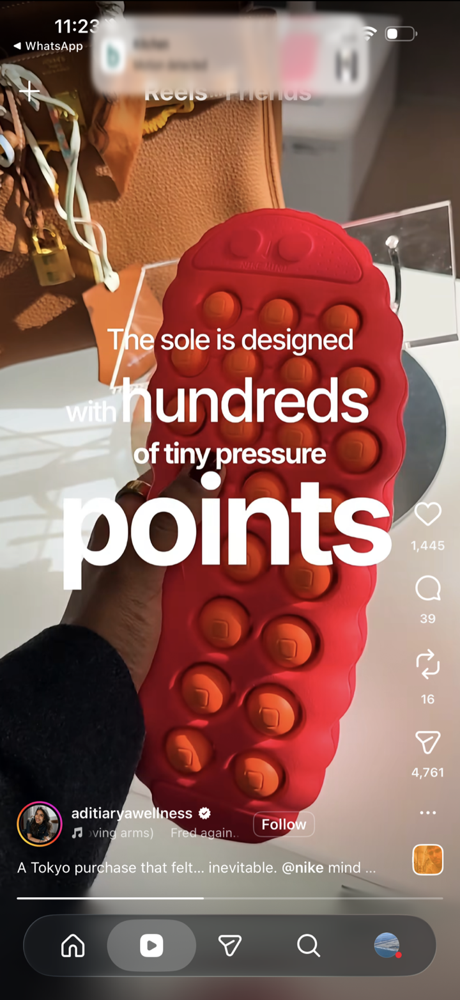
Nike Mind"How you feel when you walk."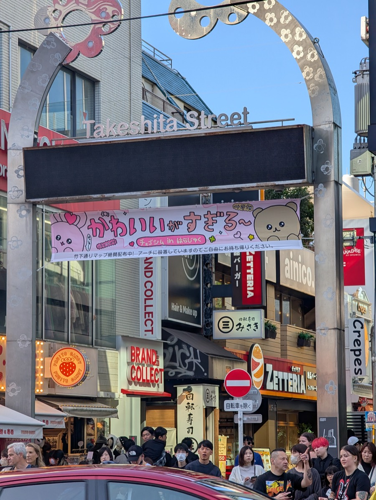
Takeshita St · HarajukuThe flagship-lined lane — Nike, Onitsuka & the youth-fashion cluster start here. (Photo: Wikimedia Commons) 15:00
🛒 Don Quijote + drugstore run (viral snacks · skincare · pharmacy)
Don Quijote (Donki) — the 7-floor Shibuya mega-store, open 24/7: viral snacks, KitKats, cheap cosmetics, souvenirs. Pair with any
Matsukiyo / Ainz&Tulpe for the skincare list + the digestion/constipation supplements you saved.
- SKINYour full skincare + haircare list — Melano CC, Hada Labo, Fino, etc. (Part 11 — bring the shelf photos).
- 💊 GUTDigestion / constipation picks — Strong Wakamoto (gut support) · Daichi Kampo Benpiyaku (herbal, mild–moderate) · Colac II (4+ days) · Kyobashu Mg Oxide (osmotic). ⚠️ ask the pharmacist; gelatin caps may not be veg.
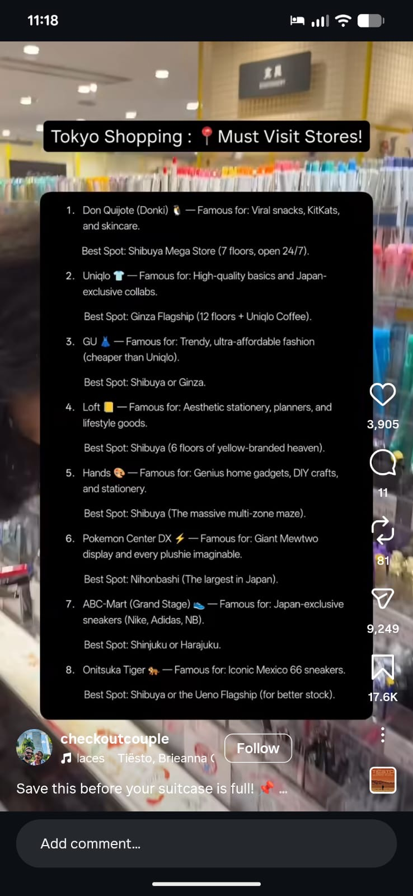
Must-visit storesDonki · Uniqlo · GU · Loft · Hands · Pokémon · ABC-Mart · Onitsuka. Pharmacy picksWakamoto · Benpiyaku · Colac II · Mg Oxide.
Pharmacy picksWakamoto · Benpiyaku · Colac II · Mg Oxide.
17:00
🚆 Dad joins → Akihabara (electronics · cameras · watches · games)
Regroup at
Akihabara (JR Yamanote, ~15 min from Harajuku/Shibuya). A/C megastores, open late.
🟩 TAP SUICAJR Yamanote~15 min~¥170
17:30
📷 Akihabara big-box + retro games (your buy list)
⚠️ Confirm every appliance is 100–240V dual-voltage before buying — Japan runs 100V.
- TECHYodobashi Camera Akihabara — 9 floors: Sony cameras/headphones, Nintendo Switch, Seiko/Casio/Citizen watches. Also stocks ReFa beauty tools. 📍 Maps: "Yodobashi Akihabara"
- GAMESSuper Potato · Mandarake — retro games / anime for the kids & collectors, along Chūō-dōri.
- SHOESNippon Made (Onitsuka premium) — the top-craftsmanship line; flagship at Tokyo Midtown Yaesu (by Tokyo Stn, one Yamanote hop) — detour only if you want the premium pair.
 Nippon MadeOnitsuka's premium line · Midtown Yaesu.
Nippon MadeOnitsuka's premium line · Midtown Yaesu.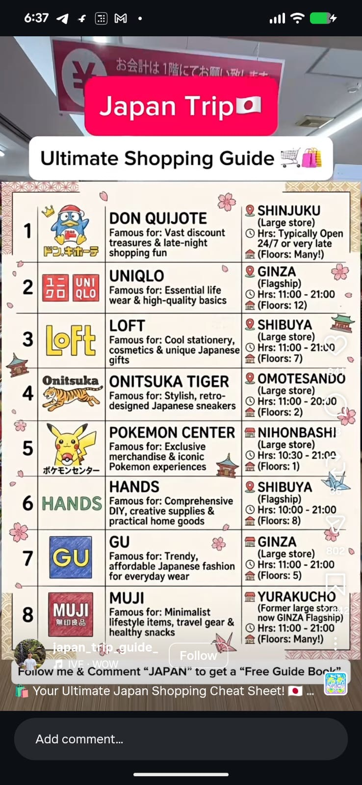
Store-hours cheat-sheetDonki · Uniqlo · Loft · Onitsuka · Pokémon · Hands · GU · MUJI.
Optional · late
Adult-leaning🦖 Shinjuku by night — Godzilla head + Omoide Yokocho
If energy allows, hop to
Shinjuku (Yamanote, ~20 min) for the neon.
Godzilla head: at
Hotel Gracery Shinjuku (Toho Building, Kabukichō) — take the lift to the
8th-floor Godzilla Terrace (free, wraps the café entrance), or grab a drink at the 8F
Bonjour café for the close-up. A 2-min walk away:
Omoide Yokocho lantern alleys and
Golden Gai tiny-bar lanes —
nightlife / yakitori, adult-leaning; walk through at dusk for the vibe, don't plan to eat (mostly meat/skewers).
🟩 TAP SUICA→ Shinjuku (Yamanote)~20 min
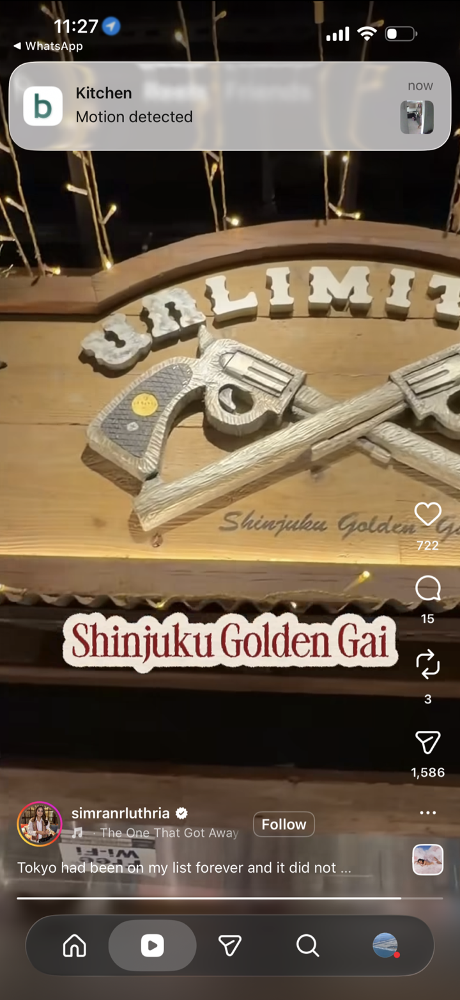
Golden GaiTiny-bar lanes — walk-through at dusk.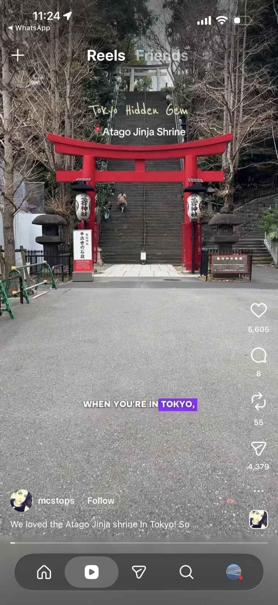
Atago Jinja"Stairs of Success" (Kamiyachō, daytime).Kids fried? Skip — head to dinner near the JW. Godzilla keeps for next time.
19:30
🍽️ Dinner near the JW (or Indian on the way back)
- VEGObica Mozzarella Bar (Takanawa) · Equal Café (NEWoMan, behind JW). 📍 Maps: "Obica Takanawa"
- INDNirvanam (Toranomon, vegan section) or Dhaba India (near Tokyo Stn, veg thali) — short train. 📍 Maps: "Nirvanam Toranomon"
Tomorrow may be Fuji — check the webcam tonight.
Day 11 · Friday
July 17
Mt Fuji / Kawaguchiko 🗻
Sleep: JW Marriott Tokyo
Carry today: Suica ×4 · Fuji Excursion tickets, cars 1–3 · ~¥10,000 cash · veg card · hats + water · Master Sheet · go/no-go on Fuji webcam first
Day 11 — Fri Jul 17 · Mt Fuji day trip (weather-dependent)
Headline: ⚠️ Only go if Fuji is actually visible — July is the haziest season and people burn a day seeing nothing. Check a live Fuji webcam + Windy the night before and that morning. Swap with Jul 16 (the TeamLab/shopping day) if that day looks clearer — DisneySea's Jul 15 date is fixed.
Night + dawn
🌦️ Go / no-go call
Check a live Fuji webcam + Windy the night before and at dawn. If socked in → do a Tokyo flex day instead, no regrets. July is the haziest season.
05:45
🍳 Very early breakfast / grab-and-go
The 06:00–09:00 window has the best odds before haze builds. Pack snacks.
07:00
🚆 Fuji Excursion express: Shinjuku → Kawaguchiko
Get to
Shinjuku first (JR from Shinagawa, ~20 min).
⚠️ Reserve cars 1–3 ONLY — the train
splits at Ōtsuki, the rear goes to Matsumoto (wrong prefecture!). Confirm the car destination before boarding.
(Shinjuku is a maze — pad 20 min, note your platform.)
🟥 BUY (reserve ahead)Fuji Excursion Ltd Express~2 h~¥4,000/adult · weekend seats sell out
09:30
🗻 At the lake — Kawaguchiko
Lake views, ropeway,
Ōishi Park (Fuji + flowers), boat. Get around on the retro
sightseeing buses from Kawaguchiko Station.
⚠️ Red/Green/Blue loops look alike — check colour + direction on the signboard before boarding.
🟩 TAP SUICA / cashSightseeing bus loops~¥1,500 day pass
 KawaguchikoLake with Mt Fuji rising behind it — the classic Fuji view (clearest early morning). (Photo: Wikimedia Commons)
KawaguchikoLake with Mt Fuji rising behind it — the classic Fuji view (clearest early morning). (Photo: Wikimedia Commons)
Optional
Add-on⛩️ Chureito Pagoda (the classic shot)
⚠️ ~400 steps in the heat — hard with a 6-year-old.
 Chureito PagodaThe five-storey red pagoda on the hillside with Mt Fuji behind — the postcard shot (up ~400 steps). (Photo: Wikimedia Commons)
Chureito PagodaThe five-storey red pagoda on the hillside with Mt Fuji behind — the postcard shot (up ~400 steps). (Photo: Wikimedia Commons)Too much with kids? Skip it — the lakeside Fuji views are the payoff anyway.
12:30
🍽️ Lunch near Kawaguchiko Station
Your picks are all a short walk W of the station (bags-free, hands-free).
- VEGShaw's Sushi Bar & Dining — has a dedicated vegan plate. 📍 Maps: "Shaw's Kawaguchiko"
- VEGVegan Nation — burgers, W of the station. · Fuji Tempura Idaten — veg tempura, further W. 📍 Maps: "Vegan Nation Kawaguchiko"
- SAFEPacked snacks + konbini — reliable backup for the kids. ⚠️ local Hōtō noodles are usually meat/dashi broth — skip unless confirmed veg.
Evening
🍽️ Easy dinner back in Tokyo
Head back mid/late afternoon (Fuji Excursion Kawaguchiko→Shinjuku, tap Suica onward). Your
near-JW block:
- VEGObica Mozzarella Bar (Takanawa) · Equal Café (NEWoMan, behind JW). 📍 Maps: "Obica Takanawa"
- INDNirvanam or Dhaba India — veg thali, short train. 📍 Maps: "Nirvanam Toranomon"
Start light packing tonight — you fly tomorrow.
Day 12 · Saturday
July 18
Fly home — AI357
Depart Haneda ~11:50
Carry today: all 4 passports · AI357 boarding info · Suica ×4 (spend down) · tax-free purchases (may be checked) · Master Sheet
Day 12 — Sat Jul 18 · Departure ✈️
Headline: AI357 departs Haneda late-morning (~11:50) — and Haneda is only ~20 min from the JW, so the morning is calmer than most departure days. But an international flight + 4 people = leave enough margin.
07:00
🍳 Breakfast, final pack, checkout
Ask the JW to arrange a taxi/van big enough for 4 + luggage. ⚠️ Confirm AI357's exact time on your ticket and check the onward Delhi→Bangalore connection.
08:15
🚕 JW → Haneda Terminal 3
Taxi is easiest with 4 bags (ask the JW to arrange a van). Or Keikyu from Shinagawa/Takanawa Gateway.
Be at Haneda by ~08:45–09:00 — ~3 h before an international departure.
Taxi (easiest w/ bags)~20 min~¥6,000–8,000
09:00
✈️ Check in, bag drop, immigration (T3)
Air India departs Haneda Terminal 3. Veg meal: you pre-ordered — ⚠️ reconfirm; still grab safe backup snacks for the kids.
10:00
💴 Spend down leftover cash & coins (airside)
The airport won't exchange coins — burn them at konbini/shops on flight snacks & gifts, or dump coins onto a Suica. T3's Edo Koji food street + shops if you're early.
11:50
🛫 AI357 Haneda → Delhi
You made it. Otsukaresama! 🎌
Print this + carry it EVERY day
Master Sheet
Emergencies · veg card · phrases · hotels · money
One sheet, always in your pocket
🆘 MASTER SHEET — carry this every day alongside the day's pages
This is the one page that makes every single-day print safe. It has the numbers, the veg card, the phrases and the addresses you'd otherwise have to flip 70 pages to find. Print it, fold it, keep it on you all 12 days. (Fill the three blanks by hand once you have your bookings.)
☎️ Emergency numbers
| Who |
Number |
| Police |
110 |
| Fire / Ambulance |
119 |
| Nurse triage (English) |
#7119 |
| JNTO Visitor Hotline (24 h English) |
050-3816-2787 |
| Indian Embassy Tokyo — emergency (24 h) |
+81-80-3301-5242 |
| The Westin Miyako Kyoto (to Jul 13) |
___ |
| JW Marriott Tokyo (Jul 13–18) |
___ |
| Travel insurance 24 h line |
___ |
🏨 Hotel addresses (show a taxi / write on kids' cards)
- The Westin Miyako Kyoto — Keage, Higashiyama-ku, Kyoto. (Keage subway 2–3 min; free shuttle from Kyoto Stn Hachijō Exit.) ウェスティン都ホテル京都
- JW Marriott Tokyo — Takanawa Gateway City, Minato-ku, Tokyo. (Above Takanawa Gateway Stn; taxi from Shinagawa ~5 min.)
🥗 Vegetarian card — show at EVERY restaurant
私はベジタリアンです。 I am a vegetarian. Please NO:
肉・魚・魚介類 (No meat, fish, seafood)
卵 (No EGGS)
だし・鰹節 (No fish stock / bonito flakes)
大丈夫です (OK for me): 乳製品 チーズ・牛乳・バター (dairy) ・ 豆腐 (tofu)
野菜だけの料理をお願いできますか？
Can you make a dish with only vegetables (plus dairy/tofu)?
ご協力ありがとうございます。 Thank you for your help.
🗣️ Phrases you'll actually use
| English |
Say it |
| Is there fish stock (dashi)? |
Kore wa dashi ga haitte imasu ka? |
| Does this have egg? |
Tamago wa haitte imasu ka? |
| Vegetables only, please |
Yasai dake de onegaishimasu |
| Dairy & tofu are OK |
Nyūseihin to tōfu wa daijōbu |
| Where is…? |
…wa doko desu ka? |
| How much? |
Ikura desu ka? |
| Excuse me / Sorry |
Sumimasen |
| Thank you |
Arigatō gozaimasu |
| Help! |
Tasukete! |
| I'm lost |
Mayoimashita |
🧒 Kids' ID cards — print ONE PER CHILD, cut out, tuck in each kid's pocket
Two separate cards below (one per child). Each has a Japanese side (for any local who finds them) and an English side (for you / airport / hotel staff). The Japanese is translation-validated. Fill the phone numbers by hand.
───────── ARSHI GUPTA (アルシ・グプタ) ─────────
【日本語】
私は迷子です。名前は「アルシ・グプタ」です。
両親に電話していただけますか。電話番号は下に書いてあります。
お手伝いありがとうございます。
父・母の電話：+91 ____________ / +91 ____________
泊まっているホテル：
・7月13日まで：ウェスティン都ホテル京都
・7月18日まで：JWマリオット・ホテル東京
[ENGLISH]
My name is ARSHI GUPTA. I am lost — please help me.
Could you please call my parents?
Mum/Dad: +91 ____________ / +91 ____________
Staying at: The Westin Miyako Kyoto (to Jul 13)
JW Marriott Hotel Tokyo (to Jul 18)
───────── AVYAN GUPTA (アヴィヤン・グプタ) ─────────
【日本語】
私は迷子です。名前は「アヴィヤン・グプタ」です。
両親に電話していただけますか。電話番号は下に書いてあります。
お手伝いありがとうございます。
父・母の電話：+91 ____________ / +91 ____________
泊まっているホテル：
・7月13日まで：ウェスティン都ホテル京都
・7月18日まで：JWマリオット・ホテル東京
[ENGLISH]
My name is AVYAN GUPTA. I am lost — please help me.
Could you please call my parents?
Mum/Dad: +91 ____________ / +91 ____________
Staying at: The Westin Miyako Kyoto (to Jul 13)
JW Marriott Hotel Tokyo (to Jul 18)
(Japanese meaning, both cards: "I am lost. My name is [name]. Could you please call my parents? The numbers are written below. Thank you for your help." — back-translation-validated.)
💴 Money & IC in one glance
- Carry ¥10,000–20,000/day — Japan is cash-heavy; temples & small shops are cash-only.
- Foreign-card ATMs that work: 7-Bank (every 7-Eleven, 24 h) · Japan Post Bank (post offices + FamilyMart).
- Everyone taps their own Suica on trains/buses/konbini. Top up with cash at any konbini. Shinkansen reserved fare is separate (Smart-EX / paper).
- Lost card? Freeze in the app instantly, then call your bank's India line, fall back to card #2 + cash.
⚠️ Daily reflexes
Meeting-point + outfit-photo before any crowd · live location ON between parents · water every 30–60 min · A/C break every 2–3 h · stand left on Tokyo escalators / right in Kyoto-Osaka · carry your rubbish · no tipping · shoes off in temples.
Appendix
Also on your list
Everything else you saved — placed or parked
Nothing dropped silently
📌 Also on your saved list (placed or consciously parked)
You saved many more places than 11 family-paced days can hold. Here's every remaining one, so nothing's lost — each is either an easy add-on to a day you're already having, or a bigger side-trip I left out on purpose (with the reason). Pick freely; none is required.
✅ Easy Kyoto add-ons (you're already in Higashiyama)
- Ginkaku-ji (Silver Pavilion) + the Philosopher's Path — a calm walk, very close to the Westin. Slot into Day 2 afternoon or Day 6 instead of Kinkaku-ji if you prefer quieter.
- Heian Shrine — huge orange torii + garden, walking distance from the Westin. Great low-effort morning or evening stroll any Kyoto day.
- Yasaka Pagoda (Hōkan-ji) — the iconic Higashiyama pagoda photo; it's on the way between Kiyomizu-dera and Gion on Day 2 — just look up as you walk the lanes.
- Kyoto Tower — opposite Kyoto Station; quick observation deck while you're there for a day-trip departure.
- Toei Kyoto Studio Park / Uzumasa Eigamura (太秦映画村) — your Jul 2 pick: a samurai/ninja film-set theme park — costumed actors, ninja shows, dress-up, a haunted house. Genuinely great for a 6-year-old and very "old Japan." Half-day, west Kyoto (~30 min).
https://www.toei-eigamura.com/global/en/
- 💄 Kawai Shrine (beauty shrine) — inside the Shimogamo Shrine forest (Sakyo-ku, Kyoto; ~5-min walk from Demachiyanagi Stn, Keihan line). Famous for "beautiful face" mirror-shaped ema you decorate with your own cosmetics. → Now slotted into Day 6's flexible afternoon (with photo).
- 💇 Mikami Shrine (御髪神社) — in Arashiyama/Sagano, Kyoto; the shrine of the god of hair & beauty (hairdressers pray here, and people pray for hair health/growth). → Now an optional stop in the Day 3 Arashiyama timeline (with photo).
✅ Easy Tokyo add-ons
- Imperial Palace East Gardens — free, central, calm green space; pairs with a Ginza / Tokyo Station stop.
- Kappabashi "Kitchen Town" — plastic-food samples, knives, ceramics; a few min from Asakusa, so tack onto Day 8 morning.
- Hanayashiki — Japan's oldest amusement park, retro & gentle, right by Senso-ji — a fun 6-year-old add on Day 8.
- Meiji Shrine + Harajuku/Takeshita/Omotesando/Cat Street — forest shrine next to the buzziest shopping; folded into the Jul 16 (Day 10) wife+kids Harajuku cluster (also feeds Part 11 shopping). Meiji Shrine itself is a calm 20-min forest add right by Harajuku Stn.
- Ueno (zoo/pandas + park + Ameyoko market) and Odaiba (teamLab, Miraikan, malls, Gundam statue, Statue of Liberty, Rainbow Bridge) — Odaiba is now a Jul 16 optional (it's next to TeamLab in Toyosu); Ueno is a good extra-time option if a day finishes early or you run a Fuji swap.
- Nakameguro & Daikanyama — chic canal-side cafés/boutiques; a mellow adult-leaning half-day if the kids are parked.
- Amelie Beaute Salon (Ebisu) — the facial salon you saved; signature "Custom-Made 90-Minute Facial." A treat if one parent gets solo time. ⚠️ book ahead (English via IG/site).
https://www.ameliebeautesalon.com/
- Roppongi Hills / Azabudai / Toranomon Hills — art museums + skyline views; indoor A/C option on a hot afternoon.
- ⛩️ Tokyo luck shrines (both easy central stops): Atago Jinja — Minato-ku near Tokyo Tower/Toranomon (Kamiyachō Stn, Hibiya line); climb the steep "Stairs of Success" (出世の石段) for career luck (9:00–17:00). Koami Shrine (小網神社) — Nihonbashi (Ningyōchō/Kayabachō Stn, Hibiya line); famous money-washing spring + good-fortune (wash your money in the spring for prosperity). → Now an optional detour in the Day 8 timeline (with photo). Atago is still an easy alternative luck-shrine near Tokyo Tower.
- 🧒 Adult/teen-only or skip with a 6-yo: Kabukicho & Godzilla head + Golden Gai (Shinjuku nightlife — folded into the Jul 16 evening optional as a walk-through; see Day 10), Mario Kart street go-karting (⚠️ needs a valid International Driving Permit — arrange in India first), Moffu / animal cafés.
✅ Osaka add-ons (now on your Jul 9 afternoon — see Day 3; Jul 10 post-USJ is only a fallback)
- Dōtonbori — the iconic neon canal (Glico running-man sign, giant crab); the classic Osaka night photo. Easy from USJ. Food is mostly meat/takoyaki, but there are veg options + the vibe is the point.
- Hozenji Yokocho — a tiny stone-paved lantern alley just off Dōtonbori, with the moss-covered Hōzen-ji temple (splash water on the Fudō-myōō statue for luck). Atmospheric 15-min walk-through.
- Shinsekai + Tsūtenkaku Tower (retro neon district) and Abeno Harukas (Japan's tallest building, observation deck) — only if you stay in Osaka for dinner after USJ; otherwise skip, the park day is already full.
- Osaka Castle — ✅ now scheduled: Jul 9 afternoon (see Day 3), paired with Dōtonbori, since it can't combine with the USJ day.
- 🅿️ Katsuō-ji (the "daruma" temple) — the one with thousands of red daruma dolls, genuinely magical for photos. Parked on purpose: it's in Minoh, ~1 h+ NORTH of Osaka (bus from Senri-Chūō, limited service), so it needs its own half-day and can't be tacked onto the USJ day. Add it only if you build a separate Osaka/Minoh day.
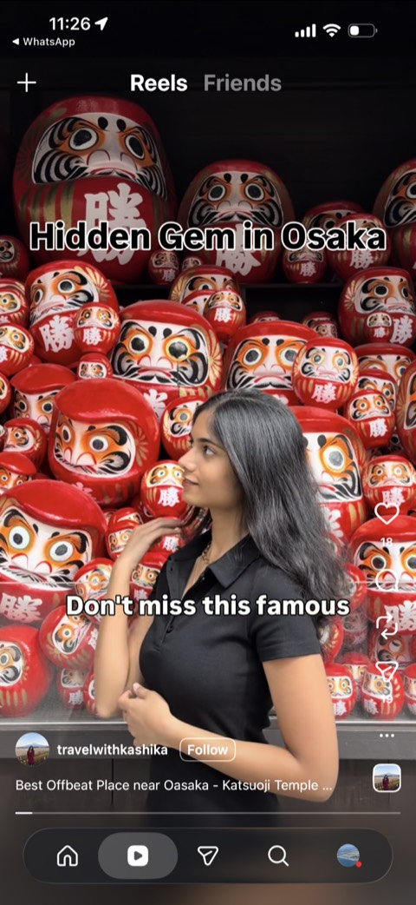
🅿️ Bigger side-trips you saved — parked on purpose
Each of these is a full day and mostly far — they don't fit an 11-day Kyoto+Tokyo trip with a young child in July heat. Noting them so you know they were considered, not forgotten:
- Hiroshima & Miyajima — 2 h each way by Shinkansen from Kyoto; really its own overnight. Park.
- Kobe — easy from Kyoto/Osaka, but nothing here beats your existing days. Park.
- Nagoya (Ghibli Park) — needs advance dated tickets + a full day; between Kyoto & Tokyo but a big detour. Park unless a Ghibli fan makes it a must.
- Nikkō (Shinkyō Bridge, shrines) & Kawagoe ("Little Edo") — lovely day trips north of Tokyo, ~2 h; compete with your Fuji/Disney days. Park.
- Kamakura (Great Buddha) & Yokohama — closest to Tokyo (~1 h); the most doable swap if you drop a flex-day plan. Otherwise park.
- Hakone & Fuji-Q Highland & Mt Takao — all in the Fuji/mountain direction; your Jul 17 Kawaguchiko day already covers the Fuji experience more gently than Fuji-Q's big coasters. Park.
ℹ️ Note
A few dump entries were just map/ward labels (Chiyoda-ku, Minato-ku, Shibuya-ku, Shinjuku-ku, Sumida-ku, Taito-ku) or duplicates of places above — those are already covered by their neighborhoods, not repeated here.
PART 10 — 🍱 WHERE TO EAT (adventurous Japanese-veg)
You're lacto-vegetarian (no meat/fish/seafood/egg/dashi/bonito; dairy & tofu are fine). Japan hides fish stock (dashi/katsuobushi) in almost everything savoury — so "adventurous" here means the genuinely-vegetarian corners of Japanese cuisine, plus reliable Indian fallbacks near each hotel for tired-family nights. Always show the veg card (Part 5). Reconfirm any specific restaurant on Google Maps the morning-of — small places close/move.
🌱 The adventurous Japanese-veg bucket list (try these)
- Shōjin ryōri (精進料理) — Buddhist temple cuisine, naturally vegan (no meat/fish/dashi; some temples also skip onion/garlic). This is the authentic Japanese-veg experience and Kyoto is the best place in the world for it. Multi-course, beautiful, ¥3,000–8,000/head. Ask the Westin concierge to book a lunch near Nanzen-ji / Arashiyama. Kid tip: portions are delicate — order an extra rice for the 6-year-old.
- Yudōfu (湯豆腐) — Kyoto's signature hot-pot of silky tofu in kombu broth, served around Nanzen-ji (a short walk/taxi from the Westin). Confirm the dipping sauce is dashi-free (kombu-only) — most temple-area yudofu houses can do it. Gentle, warming, very kid-friendly.
- Vegan ramen — the big win for the kids. T's TanTan does egg-free vegan tantan-men and is inside Tokyo Station (Keiyo Street) — perfect on a shinkansen/day-trip day. Confirm no-egg when ordering.
https://ts-restaurant.jp/tantan/
- Yuba (湯葉, tofu skin) — a Kyoto delicacy: sashimi-style raw yuba, yuba donburi, yuba hot pot. Naturally veg, protein-rich, genuinely special.
- Matcha & wagashi (sweets) — 100% safe and very Japanese: matcha parfaits, warabi-mochi, dorayaki (red-bean pancake — check egg), taiyaki, dango. Nishiki Market (Kyoto) and Arashiyama are full of these. A guaranteed daily kid-win.
- Konbini adventure — inarizushi (sweet tofu pockets), umeboshi/kombu onigiri (check for bonito), edamame, mochi, fruit. Your safe fallback anywhere, any hour.
- CoCo Ichibanya veg curry — nationwide chain, vegetarian curry roux available (ask specifically for the veg roux; standard roux may contain meat/dashi). Kids love it, it's everywhere.
https://www.ichibanya.co.jp/english/
🏪 Konbini "must-try" lists you saved (Jul 2 dump) — with the veg filter
You saved three viral konbini food guides. ⚠️ Most of their headline items are meat/fish — here's what's actually safe for the kids, per store:
- 7-Eleven : ✅ Tamago Sando (egg sandwich — skip if strict no-egg), Melon Pan, Ohayo Brûlée / Ohayo ice cream, Matcha desserts, Fruit Sandwiches, Fruit Smoothie. ❌ skip the fried chicken / bento / nikuman.
- Lawson : ✅ Premium Roll Cake, Uchi Café desserts, Baschee (basque cheesecake), Premium Fruit Sandwich, Mochi Puyo, Melon Pan. ❌ skip Karaage-kun / L-Chiki / nikuman.
- FamilyMart: ✅ Famichiki-free picks: Soufflé Pudding, Choco Monaka Jumbo, Milk Custard Cream Puff, Melon Pan, Tamago Sando (egg). ❌ skip Famichiki / yakitori / oden.
- Universal safe konbini list: onigiri (umeboshi 梅 / konbu — check no-bonito), inarizushi, edamame, mochi, melon pan, egg-free sandwiches, yogurt, fruit, matcha sweets, soy milk.
🏨 Near the Westin Miyako Kyoto (Jul 7–13)
- Hotel breakfast — Western + Japanese buffet; easiest safe start for the family (cheese, fruit, bread, tofu, rice).
- Higashiyama / Nanzen-ji — yudofu & shōjin ryōri houses (concierge to book).
- Nishiki Market (~10 min by taxi/train) — grazing street food: yuba, tofu doughnuts, matcha sweets, pickles, soy-milk drinks. Great adventurous-but-safe lunch.
- Indian fallback: several around downtown Kyoto (Kawaramachi / Teramachi arcade) — on the day, search "vegetarian Indian restaurant Kawaramachi" on Maps and pick one open + well-reviewed, or ask the Westin concierge to name and book the nearest. (Not naming a specific one here — verify live so you're never sent to a closed/moved spot.)
🏨 Near the JW Marriott Tokyo (Jul 13–18, Takanawa Gateway / Shinagawa area)
- Hotel breakfast — same reliable safe base.
- T's TanTan Tokyo Station — vegan ramen on a day-trip day (Tokyo Station is your hub for Fuji/Disney days).
- Shinagawa & Takanawa have department-store food halls (depachika) with veg-friendly bento, tofu, sweets — check labels/ask.
- Ain Soph (multiple Tokyo branches: Ginza, Shinjuku, Ikebukuro) — famous vegan café: burgers, pancakes, "heavenly" desserts. Great treat meal.
https://www.ain-soph.jp/
- Indian fallback: plentiful in Tokyo — Nirvanam, Andhra Dining, Dhaba India (South-Indian veg thali) around Shinbashi/Ginza, a short train from Shinagawa. Search "vegetarian Indian Tokyo".
🎢 Theme-park & day-trip eating (USJ, Disney, Fuji, Nara)
- Pack konbini backup every park day — the safest guarantee for the kids.
- USJ / DisneySea: international food courts have cheese pizza, pasta, fries, popcorn — confirm no meat/fish in sauces. Mobile-order at Disney to avoid queues with kids.
- Nara: Buddhist-influenced town — several shōjin ryōri / veg-friendly spots; pairs with the deer park.
- Kyoto Station (day-trip departures): Porta / The Cube / Isetan 10–11F restaurant floors — pick by looking at plastic food models; show the veg card.
🏮 Famous food streets from your saved list — worth a walk, mostly not for eating
These were on your Instagram list. They're seafood/meat-heavy, so treat them as atmosphere/photos, snack on the safe items, and eat your real meal elsewhere:
- Omoide Yokocho & Golden Gai (Shinjuku, Tokyo) — lantern-lit tiny-alley bar districts; magical to walk at dusk. Food is almost all yakitori/skewers — just soak up the vibe.
- Dōtonbori & Kuromon Market (Osaka) — neon canal + market; you'll pass these on your USJ day. Safe grazing: taiyaki, matcha soft-serve, roasted chestnuts, fruit, mochi; skip takoyaki/okonomiyaki (dashi + bonito).
- Tsukiji Outer Market (Tokyo) — mostly a seafood market, but has tamagoyaki stalls (contain egg — skip), matcha, mochi, produce, knives & ceramics to browse.
These are pulled from the places you saved on Instagram plus verified store info. Tokyo is the shopping city — save most buying for the Tokyo half (Jul 13–18), especially the big/heavy stuff, because you carry all your luggage on the Jul 13 Nozomi and don't want to lug extra purchases through Kyoto Station. Golden rule: don't overbuy in Kyoto.
🧾 Tax-free (免税) — how to save ~10% (read first)
Japan has a consumption tax of 10%. Foreign tourists can buy tax-free at registered stores (look for a "Tax-Free" / 免税 sign).
- Minimum spend: ¥5,000 (pre-tax) in one store, same day.
- You MUST carry your actual passport (not a photo) — they scan it at a dedicated tax-free counter or register.
- Two ways it works: either you pay tax-free at the till, or you pay full price and get a refund at a tax-free desk (common in department stores — keep receipts).
- ⚠️ Tax-free goods are technically "for export" — keep them sealed-ish and be ready to show them at the airport if asked.
- Big electronics/cosmetics stores (Bic, Yodobashi, Don Quijote, department stores) all have English-speaking tax-free counters — just show your passport.
👟 Sneakers & shoes (your list)
- Nike Mind / Nike flagship (Tokyo) — the "special Nike" you saved: Nike Mind wellness line, insoles with hundreds of pressure-point nodes for walking comfort. Check the Nike store locator for the current Tokyo flagship (Harajuku/Shibuya area).
https://www.nike.com/jp/en/retail
- Onitsuka Tiger — Omotesando concept store (11:00–20:00, 2 floors) — stylish retro Japanese sneakers (Mexico 66). Official:
https://www.onitsukatiger.com/jp/en-gl/store-locator · Omotesando concept store: https://www.onitsukatiger.com/jp/magazine/yellowcollectionconceptstore_omotesando/?lang=en
- 💡 Your note: the Ueno flagship reportedly has better stock; the Nippon Made premium line costs more than standard Mexico 66 — compare before buying.
- ABC-Mart Grand Stage (Shinjuku / Harajuku) — Japan-exclusive Nike / Adidas / New Balance colourways at good prices.
https://www.abc-mart.net/shop/
💄 Women's cosmetics & skincare (your list)
Where to buy all of the below: any big drugstore — Matsumoto Kiyoshi (マツモトキヨシ), Ainz & Tulpe, Sundrug, Welcia — or @cosme TOKYO, Don Quijote, or department-store beauty floors. All do tax-free (passport, ¥5,000 min).
- @cosme TOKYO (Harajuku) — Japan's biggest cosmetics store, huge range of J-beauty brands, tax-free, English help. https://www.cosme.net/flagship/ · IG https://www.instagram.com/at_cosme_tokyo/
- Matsumoto Kiyoshi / drugstores — everyday J-skincare & the drugstore hauls; some items below are Matsukiyo-exclusive. Department beauty floors (Isetan, Shibuya, Ginza) for Shiseido / SK-II premium.
- Loft Shibuya (11:00–21:00, 7 floors) — cosmetics + aesthetic stationery + unique Japanese gifts. https://www.loft.co.jp/
- Don Quijote (Donki) — viral snacks, KitKats and cheap cosmetics/skincare under one roof, open 24/7 (Shibuya & Shinjuku mega-stores). https://www.donki.com/en/
🧴 Your exact saved skincare list (Jul 2 dump) — show the photo in-store
Prices rough; all widely stocked at the drugstores above. The photo is your own saved screenshot so you can match the exact package on the shelf.
| Product |
What it's for |
Your photo |
| Rohto Melano CC Vitamin C Essence (メラノCC) |
Dark spots, acne scars, brightening (~¥1,000) — the cult one |
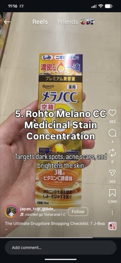 |
| Kracie Hadabisei Medicated Brightening Serum |
Dark spots / whitening, ~¥900 — "best value serum" |
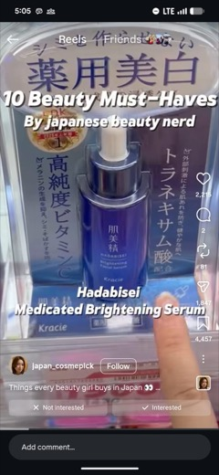 |
| Hada Labo Shirojun face lotion (肌ラボ 白潤) |
Brightening hydrating toner, rated 9/10 |
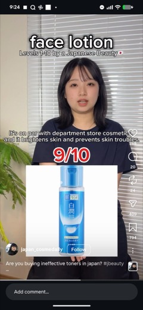 |
| Shiseido ELIXIR Lift Moist Lotion |
Anti-aging toner/emulsion (dept-store quality) |
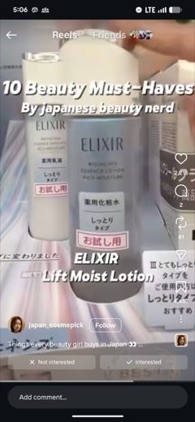 |
| Shiseido IHADA Medicated Night Pack |
Overnight barrier-repair sleeping mask |
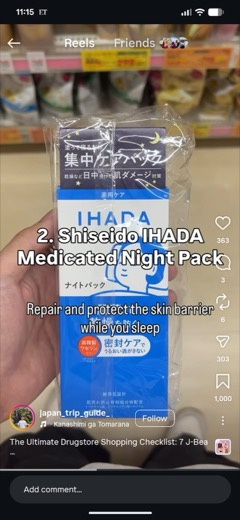 |
| Sana Nameraka Honpo Wrinkle Eye Cream N |
Fine lines & dryness around eyes |
|
| THE RETINOTIME Wrinkle Repair Hand Cream |
Retinol hand cream — Matsukiyo-exclusive |
|
| Kumargic Eye Cream (Hada Riki Medi) |
Under-eye bags & dark circles (~¥1,299) |
|
| Lion Pair Acne Cream W |
Acne / inflammation treatment |
|
| Quality 1st Derma Laser Super VC100 Mask |
Pore-tightening vitamin-C sheet masks |
|
| Keana Nadeshiko Rice Mask (お米のマスク) |
Pore-care / hydration sheet mask (teen-fave) |
|
| Biore UV Aqua Rich Protect Mist SPF50 |
Spray sunscreen |
|
| Shiseido Vital Perfection / Ultimate Sun / DHC oil / LuLuLun |
Premium day cream · SPF50+ · cleansing oil · sheet masks |
|
💇 Haircare (your saved list)
| Product |
What it's for |
Your photo |
| Matsukiyo Conget High Damage Shampoo |
Salon-grade amino-acid repair (Matsukiyo) |
|
| Kao THE ANSWER Complete Lamellar Milk |
Leave-in repair hair milk (14 ingredients) |
|
| Q10 Damage Repair Color Treatment (Black Brown) |
Tinting + repair treatment (order via JSM Japan) |
|
| Fino Premium Touch mask · Oshima Tsubaki oil |
Cheap cult deep-conditioner · camellia hair oil |
|
- Kiss Me Heroine Make mascara (Advanced Film) — smudge-proof, "best mascara."
- ReFa beauty tools (MTG) — rose-gold facial roller / S-Carat / heated eyelash curler / comb. Buy at the ReFa GINZA flagship / ReFa @ GINZA SIX (
https://www.refa.net/en/store/), or grab it at Yodobashi Akihabara on your Jul 16 shopping day.
- Us Guasha stone — the gua-sha tool; cheap at the 3COINS ¥300 chain (see hair-list photo above).
💊 "Viral" supplements & drinks — ⚠️ read the veg note
Grab from any Matsumoto Kiyoshi / Donki. ⚠️ Lacto-veg caution: collagen drinks are animal/fish-derived (not vegetarian), and many diet/enzyme capsules use gelatin shells — check or skip if strict.
| Product | What it claims | Veg? | Your photo |
|---|---|---|---|
| Mintia + Voice lozenges | Throat/breath tablets | usually OK | |
| Shiseido The Collagen Luxerich | Collagen beauty drink | ❌ animal collagen | |
| SVELTY Pokkun (糖質分解酵母) | Carb-enzyme "diet" caps | ⚠️ gelatin likely | |
| FUJIFILM Metabarrier Premium EX | Fat/sugar-absorption diet caps | ⚠️ check | |
| Naishihe LAB Belly Fat Minus | Belly-fat supplement | ⚠️ check | |
| Chocola BB · Fibe-Mini · Pokka Kireto Lemon | Skin B-vitamin · fibre · vitamin-C drinks | usually OK (read label) | (earlier dump — no photo) |
🧸 Kids' toys (your list — great with your 6-year-old)
- Nintendo TOKYO + Pokémon Center Shibuya (both Shibuya PARCO 6F, 10:00–21:00) — Japan's first official Nintendo store + a full Pokémon Center, side by side. → Now a stop in the Day 8 (Jul 14) Shibuya run.
https://www.nintendo.co.jp/officialstore/ · https://shop.pokemon.co.jp/en/shop/pokemoncenter-shibuya/
- Pokémon Center DX Nihonbashi (10:30–21:00) — the largest Pokémon Center in Japan, giant Mewtwo display, every plushie. Nihonbashi (near Tokyo Stn) — alternative if you're not doing Shibuya PARCO.
https://shop.pokemon.co.jp/en/shop/pokemoncenter-dx/
- Pokémon Center Mega Tokyo (Ikebukuro, Sunshine City) — another big one.
https://shop.pokemon.co.jp/en/shop/pokemoncenter-megatokyo/
- Nintendo/Pokémon at Tokyo Station Character Street (Ichibangai) — smaller Nintendo Pop-Up + Pokémon shop among LEGO/Chiikawa/Ghibli shops in one corridor; easy to fold in if you route via Tokyo Stn.
https://www.tokyostationcity.com/en/
- Kiddy Land Harajuku — 5 floors of toys/character goods (Sanrio, Studio Ghibli, Snoopy, Pokémon).
https://www.kiddyland.co.jp/en/harajuku/ (guide: https://trulytokyo.com/kiddyland/)
- Yamashiroya (Ueno) — 6-floor toy shop by Ueno Station (pairs with Ueno Park/zoo on a flex day).
- Animate Ikebukuro (your list) — the world's largest anime store, 10 floors of manga/anime/character goods in Sunshine City (same complex as Pokémon Mega Tokyo — do both in one Ikebukuro trip). Best for an older kid/teen or anime fan.
https://www.animate.co.jp/shop/ikebukuro/
📷 Electronics (your list)
- Yodobashi Camera Akiba (Akihabara) — vast multi-floor electronics; tax-free counter, English.
https://www.yodobashi.com/ec/store/en/0018/
- Bic Camera — big branches at Shinjuku, Shibuya, Yurakuchō (near Ginza); electronics + toys + cosmetics floors, tax-free.
https://www.biccamera.com/bc/en/
- Ginza Sony Park — Sony's own experiential showroom/park in Ginza (reopened Jan 2025); free, ever-changing exhibits + café, ~11:00–19:00. → Slotted into the Day 7 (Jul 13) Ginza run.
https://www.sonypark.com/e/
- Grand Seiko Flagship Boutique — Japan's largest, Ginza Namiki St (6-6-5 Ginza); Mon–Sat 11:00–20:00 / Sun & hols 11:00–19:00. → Slotted into the Day 7 (Jul 13) Ginza run.
https://www.grand-seiko.com/
- Akihabara district generally — gadgets, anime, retro games.
https://www.gotokyo.org/en/destinations/eastern-tokyo/akihabara/
- ⚠️ Buying electronics to use in India: Japan runs 100 V (India is 230 V) and uses flat 2-pin (Type A) plugs. Confirm the item is dual-voltage / 100–240 V (most laptops, cameras, phone chargers are; hair dryers/kettles/appliances usually are NOT) before buying, and you'll need a plug adapter. Cameras, headphones, game consoles (check region), and gadgets are the safe buys.
👕 Fashion & lifestyle (bonus from your list)
- Uniqlo Ginza flagship (12 floors + Uniqlo Coffee; Japan-exclusive collabs)
https://www.uniqlo.com/jp/en/ · GU (cheaper sister brand) · MUJI Ginza flagship (minimalist everything) https://www.muji.com/jp/en/shop
- Hands Shibuya (8 floors DIY, gadgets, travel goods, stationery)
https://shibuya.hands.net/
- Cheap-and-cheerful your list flagged: WEGO, Honeys, Right-on, Shimamura, Shibuya Parco.
- Blue Elephant (eyewear) — trendy glasses/sunglasses brand you saved; flagship stores in Shinjuku & Harajuku. Good for prescription frames done fast.
https://en.blueelephant.co/
👜 Second-hand luxury (your Jul 2 list — Japan is the best place for this)
Japan's used-luxury market is famous for near-mint condition at low prices (Chanel/LV/Hermès, watches). All authenticate in-house.
- Salamanca Vintage (Kyoto) — your saved pick: "best prices for Chanel bags." Shijō & Sanjō branches downtown Kyoto. IG @salvntg_kyoto
- Komehyo (Shinjuku, Tokyo) — Japan's biggest reuse department store; floors of bags/watches/jewellery, tax-free.
- Also on the same saved reel: Brand Off, 2nd Street, Amore Vintage, Sasugaya Outlet (Ameyoko/Ueno area) — cluster of luxury-resale + tax-free shops.
🏙️ Where to shop, by area
- Kyoto: Nishiki Market (covered food/craft street — good in rain), Teramachi & Shinkyōgoku covered arcades, Kyoto Station Isetan (department store). Keep it light — bags go to Tokyo Jul 12.
- Tokyo: Harajuku/Takeshita St (kawaii, teens, crepes) + Omotesando (upscale) + Cat Street; Shibuya (Parco, Loft, Donki, Hands); Ginza (Uniqlo/MUJI/GU flagships, department stores); Ueno/Ameyoko (market-street bargains); Akihabara (electronics/anime); Nakamise St (Asakusa souvenirs, already on Jul 14).
- Osaka (USJ day): Shinsaibashi shopping street & Den Den Town (electronics) if you linger.
🧳 Practical
- Space: you fly home on AI357 with the family's luggage — buy the big stuff late and keep the airport tax-free-goods rule in mind. A cheap extra soft duffel from Donki/Uniqlo is the classic "we bought too much" fix.
- Kids in tow: Pokémon Center, Kiddy Land, Character Street, Yamashiroya and the Donki toy/snack aisles are the wins; pair heavy adult shopping (electronics/cosmetics) with a swap so one parent entertains the kids.
- Most stores 10:00/11:00–20:00/21:00; Donki is 24/7. Carry your passport for tax-free.
Guide compiled Jul 1, 2026; JW Marriott Tokyo location (Takanawa Gateway City, 2-21-2 Takanawa) + gotchas + one-screen cheat card, earthquake / lost-passport / lost-card protocols and verified English-speaking clinics added Jul 2, 2026. Hotel Japanese addresses verified from the hotels' own sites. Links marked ✅ were loaded and confirmed; 📵 are correct URLs that block automated checkers but open normally on your phone; ⚠️ are details to confirm on arrival. Part 8 gotchas are distilled from recent (2024–2026) traveller accounts on YouTube and Reddit r/JapanTravel — verified against multiple sources; park app/timed-entry systems change often, so re-check the official app on arrival. Prices are indicative (¥1,000 ≈ ₹590) — the ticket page is the source of truth. Landing-day pace reworked to rest-first (arrive AI356 ~04:55 → reset at Haneda → mid-morning Shinkansen); flight corrected to Air India AI356 in / AI357 out; vegetarian card updated to lacto-vegetarian (no egg; dairy & tofu OK); full day-by-day added — Jul 3, 2026.